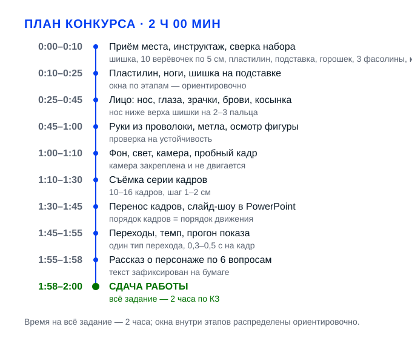
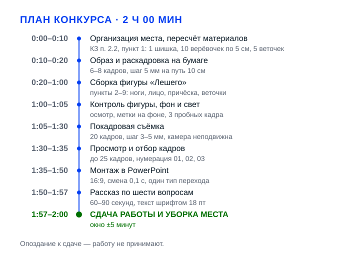
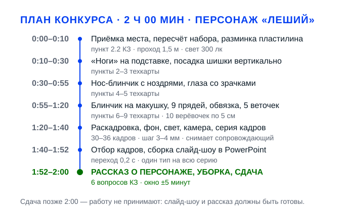

Стоп-моушн (ФВ)
Задания ниже — официальные файлы «Абилимпикс» (источник: abilympics-russia.ru), разложенные по категориям. Решения написаны по тексту задания, регламенту и критериям оценки; в них указано, что именно проверяет эксперт.
Школьник
14–16 лет, базовый уровень заданияВ официальном файле категории не разделены отдельными разделами — приводим задание целиком; различия по категориям смотрите в таблице модулей.
Пошаговое решение
Задание школьной категории выглядит простым: из шишки, пластилина, горошка, фасоли, косынки, проволоки и веточки собрать персонажа «Баба-Яга», снять серию кадров с его перемещением и придумать про него короткий рассказ. На всё отведено два часа, и внутри этих двух часов три разных умения: лепить так, чтобы детали держались, снимать так, чтобы кадры стыковались, и рассказывать так, чтобы персонаж ожил в словах. Порядок в задании задан жёстко — сначала организация места, потом фигура, потом съёмка, потом слайд-шоу в PowerPoint и рассказ по шести вопросам, — и менять его нельзя, потому что каждая следующая часть опирается на предыдущую. Самое частое, что теряют участники: устойчивость фигуры (она падает при переносе на фон), одинаковость кадров (камера или свет сдвигаются посреди серии) и рассказ, который придуман отдельно от работы и не совпадает с тем, что видно на экране.

Задача 1. Организовать рабочее место и подготовить материалыМодуль А · подготовка, 0:00–0:25
На всё задание по конкурсному заданию отведено два часа, и первые двадцать пять минут уходят не на лепку, а на подготовку: проверить, что на столе лежит весь набор, разложить его по зонам, размять пластилин, разобрать мелкие детали. Эта часть почти не видна в готовой работе, но именно она решает, будете ли вы лепить спокойно или станете искать вторую фасолину в тот момент, когда фигура уже стоит на подставке. Здесь же снимаются риски: ножницы, проволока и мелкий горошек опасны ровно до тех пор, пока лежат не на своём месте.
Действие 1.1. Осмотреть место и разложить материалы по зонам
Шаг 1.1.1
Заходим за стол и первым делом сверяем набор с перечнем из конкурсного задания: одна шишка, десять верёвочек длиной по пять сантиметров, упаковка пластилина, круглая деревянная подставка, упаковка чёрного перца горошком, три фасолины, треугольник материала для косынки, веточка длиной семь сантиметров и ножницы. Раскладываем всё на столе так, чтобы каждая позиция была видна и до неё можно было дотянуться, не переставляя соседние. Сразу откладываем в сторону то, что пришло в негодность: смятую или раскрошенную шишку, порванную верёвочку, засохший пластилин.
Сверка идёт до первой лепки, потому что потом считать будет некогда: в середине работы нехватка одной фасолины означает, что бровей не будет вовсе, а замену после старта не выдают. Кроме того, по КЗ результат школьника — это серия фотографий с персонажем «Баба-Яга» и рассказ о ней, то есть оценивают цельную фигуру, а не её часть, и любая потерянная деталь видна на кадрах крупным планом.
Все позиции перечня названы вслух или отмечены, расхождения запомнены точно: чего нет, сколько нет, в каком виде. Проверить просто — пройдите по списку второй раз, но уже глазами: если какую-то мелочь пришлось искать, значит, она лежит не на своём месте.
Обычная ошибка — начать лепить, не пересчитав набор: нехватку обнаруживают, когда фигура уже собрана, и переделывать лицо приходится на готовой голове. Вторая — оставить бракованную шишку «на всякий случай» и в итоге взять именно её, потому что она лежала ближе.
Эксперт проходит по местам в первые минуты и смотрит, работает участник по перечню или наугад: разложенный набор читается сразу, как и куча материалов в общей массе.
Шаг 1.1.2
Делим столешницу на три зоны и держим это деление до конца. Слева кладём материалы: пластилин, верёвочки, горошек, фасоль, косынку и веточку. По центру оставляем пустое пятно размером примерно тридцать на тридцать сантиметров — это место сборки, там фигура будет стоять и там же её будут снимать. Справа ставим подставку с готовой фигурой и ножницы, причём ножницы кольцами к себе и лезвиями от края стола.
Зоны нужны не для красоты: при покадровой съёмке фигуру придётся двигать на один-два сантиметра между кадрами, и если вокруг неё лежат верёвочки и горошек, они попадут в кадр и придётся переснимать всю серию. Ножницы отдельно от зоны сборки — это ещё и техника безопасности: по КЗ участник обязан использовать инструмент только по назначению и не загромождать рабочее место.
Проверьте ширину свободного пятна: ладонь должна лежать рядом с фигурой, не задевая материалы. Ножницы лежат ручками к вам, лезвия не выступают за край стола. Всё, что не нужно в ближайшие пять минут, убрано в левую зону.
Самая частая ошибка — разложить всё вокруг центра и потом двигать фигуру между мусором и обрезками. Вторая — положить ножницы лезвиями к себе или на край стола: при неловком движении они падают, а это уже нарушение требований охраны труда.
Эксперт отмечает организацию рабочего места отдельно от качества фигуры: чистая свободная зона съёмки считается плюсом, а инструмент под локтем — минусом.
Шаг 1.1.3
Проверяем свет до того, как что-то слепим. По требованиям к рабочему месту освещение должно быть равномерным и не ниже трёхсот люкс, поэтому смотрим, откуда падает свет, нет ли тени от вашей руки на центре стола и не бьёт ли лампа в глаза. Если стол стоит у окна, разворачиваем его так, чтобы свет шёл сбоку, а не в объектив; если лампа одна, ставим её слева и чуть сверху.
Свет определяет, будет ли видна работа: при боковом свете читается рельеф шишки, нос и брови дают тень и фигура выглядит объёмной, а при свете в лоб всё сливается в пятно. На фотографиях, которые войдут в серию кадров, плоский свет превращает персонажа в силуэт, и эксперт видит не «Бабу-Ягу», а тёмное пятно на фоне.
Положите на центр стола ладонь: тень должна быть мягкой и не перекрывать рабочую зону. Посмотрите на шишку — чешуйки различимы, бликов от лампы на пластилине нет. Если свет режет глаза, попросите сопровождающего переставить лампу, а не терпите.
Ошибка — работать в собственной тени: рука закрывает фигуру, и вы лепите вслепую, а на снимках появляется резкая полоса тени поперёк персонажа. Вторая — поставить лампу прямо перед лицом: блик на пластилине съедает форму носа и глаз.
Эксперт смотрит на кадры, а не на лампу, но по кадрам сразу видно, был ли свет продуман: ровная тень и различимый рельеф — признак подготовки. Отдельно отмечают, не приходится ли участнику работать в собственной тени.
Действие 1.2. Подготовить пластилин и заготовки
Шаг 1.2.1
Вскрываем упаковку пластилина и разминаем его целиком, а не по кусочку: брусок должен стать мягким и податливым, как разогретое тесто. Дальше делим на три части по назначению — белая уходит на нос, глаза и варежки, тёмная на ноги и на крепление проволоки, цветная может понадобиться для мелких деталей. Куски скатываем в шарики и держим под рукой, чтобы не отрывать от работы каждый раз.
Неразмятый пластилин рвётся и крошится, детали из него держатся на шишке плохо: нос отваливается при первом же переносе фигуры на фон, а ноги не прилипают к подставке. Разделение по цвету заранее экономит минуты и, что важнее, не даёт перепутать цвета в спешке — белый кусок, измазанный тёмным, уже не отмыть.
Скатайте шарик и прижмите к ногтю: пластилин должен прилипнуть, а не рассыпаться по краям. Проверьте руки — на них не должно быть крошек и ворса, иначе они уйдут в лицо персонажа и будут видны на крупных кадрах.
Ошибка — лепить холодным пластилином прямо из упаковки: детали получаются рыхлыми и с трещинами. Вторая — месить все цвета на одном месте: на столе появляются цветные разводы, и белые глаза выходят серыми.
Эксперт трогает готовые детали и смотрит на их поверхность: гладкая, без крошек и посторонних вкраплений — значит, пластилин подготовлен. Если деталь крошится в руках, разминание считают формальным.
Шаг 1.2.2
Катаем два шарика для ног диаметром примерно полтора-два сантиметра — размер берём такой, чтобы каждый был чуть больше основания шишки в её нижней части. Катаем на ладони круговыми движениями, добиваясь ровной поверхности без граней и трещин. Готовые шарики кладём рядом с подставкой, а не в общую кучу: их всего два, и они должны быть одинаковыми. Катаем до тех пор, пока на поверхности не останется ни одной складки.
Ноги — единственная опора фигуры: если шарики разного размера, персонаж стоит с перекосом, и на серии кадров это читается как «фигура заваливается». К тому же в КЗ прямо сказано, что шарики кладут на подставку и сплющивают пальцами, чтобы получились ноги, то есть форма и размер заготовки заданы, а не выбираются на глаз.
Шарики одинаковые на ощупь и на вид, диаметр совпадает с точностью до пары миллиметров. Приложите их друг к другу: разница не должна бросаться в глаза. Поверхность гладкая, без трещин по экватору. Расхождение в размере больше двух миллиметров исправляем сразу, пока пластилин мягкий.
Ошибка — скатать один шар крупнее: фигура наклонится, а метла в руке будет касаться стола. Вторая — оставить на шариках складки от пальцев: после сплющивания они превращаются в трещины, и ноги разваливаются при переносе.
Эксперт оценивает симметрию фигуры целиком, а ноги — первое, что задаёт её устойчивость, поэтому смотрит на них ещё до того, как собрана голова. Смотрит он и на то, одинаковы ли заготовки, — по ним видно, готовился ли участник к сборке.
Шаг 1.2.3
Готовим рабочее место под лепку: протираем стол салфеткой, убираем крошки и обрезки, ставим рядом влажную тряпочку, чтобы вытирать пальцы между деталями. Если пластилин липнет к рукам, смачиваем пальцы водой — чуть-чуть, потому что мокрый пластилин перестаёт держаться. Все заготовки накрываем или держим в тени, чтобы они не размягчились от лампы. Влажную тряпочку отжимаем так, чтобы с неё не капало на стол.
Чистые пальцы и чистый стол — это не педантизм: белый пластилин впитывает любую грязь моментально, и глаза персонажа получаются серыми с чёрными точками вкраплений. Кроме того, крошки на столе попадут в кадр при съёмке, а серия фотографий — это один из трёх результатов, которые перечислены в конкурсном задании.
Проведите ладонью по центру стола: ни крошек, ни липких следов. Пальцы при лепке не оставляют тёмных отпечатков на белом. Тряпочка лежит под рукой, а не в другом конце стола. Пальцы после лепки остаются чистыми, а на белом пластилине нет серых разводов.
Ошибка — вытирать руки о фартук или о стол: разводы возвращаются на пластилин через минуту. Вторая — мочить руки обильно: детали начинают скользить и не прилипают к шишке. Третья ошибка — держать пластилин под лампой: он размягчается и течёт между пальцами.
Эксперт смотрит на аккуратность исполнения: чистые детали без вкраплений — отдельный признак, который видно и на фигуре, и на снимках. Чистота рук и стола проверяется без предупреждения, в любой момент работы.
Действие 1.3. Разобрать мелкие детали и проверить инструмент
Шаг 1.3.1
Считаем и раскладываем мелочь по отдельным кучкам. Из упаковки чёрного перца отбираем две ровные горошины на зрачки — остальные оставляем в упаковке, чтобы не рассыпались по столу. Из трёх фасолин две пойдут на брови, третья остаётся запасной. Десять верёвочек длиной по пять сантиметров раскладываем ровным пучком и проверяем, что все одной длины и не распустились на концах.
Мелочь считается заранее потому, что её количество задано в КЗ: две горошины на глаза, две фасолины на брови, десять верёвочек на метлу, из которых девять идут в пучок, а десятая на обвязку. Если начать отрезать и отбирать по ходу, к моменту сборки метлы окажется, что верёвочек девять или одиннадцать, и метла выйдет жидкой или толстой.
На столе три отдельные кучки: горошек, фасоль, верёвочки. Пересчитайте каждую — две, две плюс одна запасная, десять. Фасолины одинакового размера, горошины целые, не расколотые, верёвочки не осыпаются.
Ошибка — высыпать весь перец на стол: горошины раскатываются, часть теряется, а те две, что попались под руку, оказываются разного размера и зрачки выглядят косыми. Вторая — взять фасолины разной величины, тогда брови получаются асимметричными.
Эксперт проверяет симметрию лица на фигуре и на кадрах: одинаковые зрачки и брови — признак того, что детали отбирали, а не хватали первые попавшиеся.
Шаг 1.3.2
Берём ножницы и проверяем, чем режем: верёвочки должны быть уже нарезаны по пять сантиметров, но если концы растрёпаны, подравниваем их одним движением, держа пучок в левой руке и отрезая в двух-трёх миллиметрах от края. Режем только верёвочку, ничего больше: пластилин, проволоку и веточку ножницами не трогаем. После работы ножницы закрываем и кладём лезвиями от себя.
Ножницы в перечне оборудования стоят отдельной строкой, и по требованиям охраны труда инструмент используется только для тех работ, для которых предназначен. Проволока и пластилин портят лезвия, а растрёпанные концы верёвочек не дают собрать ровный пучок метлы: она получается лохматой и на кадрах выглядит как пучок мусора, а не как метла.
Проверьте срез: концы ровные, не осыпаются, длина всех верёвочек одинаковая — пять сантиметров. Ножницы закрыты, лежат ручками к вам. На столе нет обрезков и распущенных ниток. Обрезков на столе нет, а сами ножницы лежат закрытыми и не мешают зоне сборки.
Ошибка — резать верёвочку, держа её на весу: срез уходит по косой, и пучок получается разной длины. Вторая — оставить ножницы открытыми на краю стола: при движении фигуры их задевают, и инструмент падает на пол.
Эксперт обращает внимание на культуру работы с инструментом: закрытые ножницы и отсутствие обрезков на столе говорят о том, что участник понимает, что делает.
Шаг 1.3.3
Готовим проволоку для рук: выпрямляем её пальцами на столе, чтобы не было резких изгибов, и отмеряем два отрезка примерно по восемь-десять сантиметров — длина подбирается так, чтобы рука доходила от середины шишки до уровня ног. Концы загибаем внутрь маленькой петелькой, чтобы они не царапали пластилин и не вылезали из варежек. Отрезки кладём рядом с шишкой, чтобы примерить длину до того, как начнём крепить.
Проволока — каркас рук, и от её подготовки зависит, будет ли персонаж держать метлу или она вывалится на первом же кадре. Загнутые концы дают пластилину зацеп: варежка держится не за счёт липкости, а за счёт того, что пластилин облегает петлю. Резкий изгиб посреди руки — это место, где проволока переломится после трёх-четырёх переносов фигуры.
Проведите пальцем по всей длине: изгибов нет, проволока пружинит и возвращается в прямое положение. Концы загнуты, не острые. Приложите отрезок к фигуре — рука доходит примерно до уровня нижней части шишки.
Ошибка — оставить прямой острый конец: он протыкает варежку и торчит наружу, а на кадрах видна блестящая точка. Вторая — взять слишком длинную проволоку: руки получаются до пола, и метла волочится по столу.
Эксперт смотрит на руки персонажа в готовой фигуре: если они держат форму и не провисают, значит, каркас был подготовлен правильно. Руки персонажа на готовой фигуре — самый заметный признак качества каркаса.
Задача 2. Собрать фигуру «Баба-Яга» из шишки и подручных материаловМодуль А · персонаж, 0:25–1:00
Основная часть работы: из одной шишки, пластилина, горошка, фасоли, косынки, проволоки и веточки нужно собрать узнаваемого персонажа. Порядок в конкурсном задании задан жёстко — сначала ноги и основание, потом лицо, потом косынка, руки и метла, и менять его нельзя, потому что каждая следующая деталь крепится к уже готовой предыдущей. Тридцать пять минут на этот блок — это примерно по две минуты на деталь с запасом на подгонку.
Действие 2.1. Сделать ноги и установить шишку на подставку
Шаг 2.1.1
Кладём два подготовленных шарика на круглую деревянную подставку и разносим их примерно на два-три сантиметра друг от друга, ближе к центру. Сплющиваем каждый пальцами — указательным и большим — до лепёшки толщиной около пяти миллиметров, прижимая к дереву по всей площади. Края лепёшки слегка разводим в стороны, чтобы получилась ступня, а не блин. Работаем на подставке, а не на столе: пластилин должен схватиться именно с деревом.
Ноги задают посадочное место для шишки: в КЗ сказано, что шарики кладут на подставку и сплющивают пальцами, чтобы получились «ноги», и именно в них потом вдавливается основание шишки. Площадь прижима важна: лепёшка, прижатая только по центру, отрывается вместе с фигурой при первом переносе на фон, и персонаж падает на бок прямо в кадре.
Лепёшки держатся на подставке, если приподнять фигуру за шишку — они остаются на месте и не отклеиваются. Толщина одинаковая у обеих, расстояние между ними примерно два-три сантиметра, края не свисают с подставки.
Ошибка — прижать шарик только сверху, не разровняв края: под лепёшкой остаётся воздух, и она отходит. Вторая — поставить ноги слишком близко друг к другу: шишка садится на них как на одну точку и заваливается вперёд.
Эксперт проверяет фигуру на устойчивость, слегка толкнув подставку: если персонаж качается, ноги сделаны формально. Если подставка качается от лёгкого толчка, ноги считаются незакреплёнными, и это видно до съёмки.
Шаг 2.1.2
Берём продолговатую шишку и ставим её вертикально основанием вниз, тупым концом в пластилиновые ноги. Вдавливаем на три-пять миллиметров, чтобы основание ушло в пластилин по всему периметру, а не только с одной стороны. Держим шишку двумя пальцами за середину и слегка проворачиваем вокруг оси — так пластилин облегает чешуйки и держит крепче. Шишку держим за середину, чтобы не смять чешуйки в нижней части.
Вертикальность — это то, что видно на любом кадре: наклон в пять градусов превращается в заметный крен, потому что фигура снимается крупно и стоит на ровном фоне. Проворачивание вокруг оси нужно потому, что у шишки неровное основание: без него она садится на один выступ и стоит как на ножке, готовая упасть от лёгкого касания.
Отойдите на полшага и посмотрите на фигуру сбоку: ось шишки должна быть вертикальной, кончик смотрит строго вверх. Основание не выглядывает из пластилина, щелей между шишкой и лепёшкой нет. Проверьте и посадку: между основанием шишки и пластилином не должно быть видно просвета.
Ошибка — поставить шишку на боковую сторону: тогда все детали лица крепятся на curved поверхность и нос съезжает в сторону. Вторая — вдавить слишком глубоко: пластилин закрывает нижние чешуйки, и фигура выглядит укороченной.
Эксперт смотрит на силуэт: ровно стоящая шишка читается как голова персонажа, а заваленная — как случайная шишка на подставке. Смотрит он и на то, не выглядывает ли основание шишки из пластилина.
Шаг 2.1.3
Проверяем устойчивость до того, как начнём лепить лицо. Толкаем подставку пальцем с двух сторон — фигура должна вернуться в прежнее положение, а не упасть. Если шишка качается, добавляем пластилин у основания с той стороны, куда кренит, и снова вдавливаем. Подставку ставим так, чтобы её край не выходил за зону съёмки. Если подставка стоит на столе неровно, подложите под неё лист бумаги, а не двигайте ноги.
Всё остальное строится на этом основании: нос, глаза, косынка и метла добавляют вес и смещают центр тяжести, поэтому фигура, которая еле стоит на пустой шишке, после сборки упадёт обязательно. Падение в момент съёмки означает, что придётся переставлять детали, а часть из них — горошек и фасоль — уже не приклеится второй раз надёжно.
После толчка фигура возвращается на место, основание не отходит от подставки, под лепёшками не видно просвета. Поставьте подставку на ровную поверхность и посмотрите на просвет под ней — его быть не должно.
Ошибка — пропустить проверку и начать лепить лицо: о проблеме узнают, когда фигура завалится набок с готовым носом. Вторая — лечить качание подкладыванием пластилина снаружи, из-за чего у ног появляется бесформенный комок.
Эксперт проверяет устойчивость один раз, но именно от неё зависит, дойдёт ли фигура до съёмки в целом виде. Отдельно он отмечает, не осталось ли на подставке лишних комков пластилина у ног.
Действие 2.2. Сделать лицо: нос, глаза, зрачки и брови
Шаг 2.2.1
Из белого пластилина формируем продолговатый крючкообразный нос: сначала катаем валик длиной около двух с половиной сантиметров и толщиной с карандаш, потом загибаем его кончик вниз и чуть в сторону — получается крючок. Крепим нос на шишку ниже её верха на два-три пальца: прикладываем основание валика к чешуйкам и прижимаем по всей длине, размазывая пластилин между чешуйками.
Положение носа задано в КЗ буквально: он должен располагаться ниже верха шишки на два-три пальца. Если прилепить его выше, косынка закроет нос, и лица не будет видно; если ниже — останется пустой лоб, и фигура перестанет читаться как персонаж. Прижимать по всей длине нужно потому, что шишка покрыта чешуйками, и нос, посаженный на две точки, отваливается при первом повороте.
Проверьте расстояние от макушки до носа: два-три пальца, приложенные плашмя. Нос смотрит вниз и вперёд, кончик загнут, основание не отходит от шишки. Покачайте нос пальцем — он должен держаться, а не вращаться.
Ошибка — сделать прямой нос без крючка: пропадает характерный силуэт, и на кадрах персонаж выглядит нейтрально. Вторая — прилепить нос слишком высоко, а потом надеть косынку и обнаружить, что она накрывает переносицу.
Эксперт смотрит на профиль: крючковатый нос — главный признак узнаваемости, и он оценивается вместе с общей композицией лица. В профиль видно и крепление: нос не должен висеть на одном комке пластилина.
Шаг 2.2.2
Из белого пластилина катаем два кружка диаметром около сантиметра — размер подбираем так, чтобы каждый был примерно втрое меньше ширины шишки. Крепим их выше носа по бокам, симметрично относительно его оси, прижимая к чешуйкам и слегка размазывая край. Расстояние между кружками оставляем примерно в один кружок, чтобы лицо не выглядело сросшимся. Кружки катаем одновременно, чтобы они получились одинаковыми по размеру.
Глаза задают выражение: посаженные близко, они делают персонажа сердитым, расставленные широко — удивлённым, и это уже вопрос художественного решения, которое оценивают в готовой работе. Симметрия важнее размера: даже небольшая разница в высоте видна на кадрах крупным планом, потому что глаза — самая читаемая часть фигуры.
Проведите воображаемую горизонталь через центры кружков: она должна проходить параллельно основанию. Кружки одинакового диаметра, прижаты по всей площади, не свисают с чешуек. Расстояние от носа до каждого глаза одинаковое, иначе лицо выглядит перекошенным.
Ошибка — прилепить глаза на разной высоте: на снимке это читается как перекос всей головы. Вторая — сделать кружки слишком большими: лицо превращается в два белых пятна, и нос теряется между ними. Третья ошибка — прилепить глаза на чешуйку, которая выступает: кружок ложится косо и отходит.
Эксперт сравнивает левую и правую половину лица: симметрия глаз — один из первых признаков аккуратной работы. Он сравнивает не только высоту, но и размер белых кружков — разница в миллиметр уже заметна.
Шаг 2.2.3
Берём две отобранные горошины чёрного перца и вдавливаем их в центр белых кружков — по одной в каждый. Вдавливаем наполовину, чтобы горошина держалась и при этом оставалась выпуклой: плоская горошина читается как дырка, а не как зрачок. Следим, чтобы обе горошины стояли на одной линии с центрами кружков и смотрели в одну сторону. Горошины берём сухие: мокрая поверхность не держится в пластилине и выскальзывает.
Горошек — готовая деталь нужного цвета и размера, и в КЗ он идёт именно на зрачки. Направление взгляда важно потому, что персонаж будет двигаться в кадре: если зрачки смотрят в разные стороны, на серии кадров возникает ощущение, что фигура косится, и это разрушает впечатление от анимации.
Горошины держатся при лёгком нажатии, не проворачиваются, сидят в центре кружков. Посмотрите на лицо прямо: оба зрачка направлены в одну сторону, примерно в сторону носа. Проверьте и глубину: горошина должна выступать над белым кружком примерно на половину своего диаметра.
Ошибка — вдавить горошину до конца: она уходит в пластилин и становится незаметной точкой. Вторая — поставить зрачки по краю кружка: взгляд получается косящим, а лицо — несимметричным. Третья ошибка — взять расколотую горошину: она крошится под пальцем, и зрачок получается с изъяном.
Эксперт смотрит на лицо в готовой фигуре и на кадрах: живые, направленные зрачки дают персонажу характер, который потом описывается в рассказе. Обращает он внимание и на то, не смотрит ли персонаж мимо камеры.
Шаг 2.2.4
Делаем брови из красной фасоли. На одну сторону каждой фасолины наносим небольшой кусочек пластилина — слой примерно в миллиметр, — и крепим фасоль над глазом, наклоняя её так, чтобы внутренний край был чуть ниже внешнего. Наклон в пять-десять градусов даёт хмурое, ворчливое выражение, которое и подходит персонажу. Фасолины берём с выпуклой стороны, чтобы бровь читалась объёмно, а не как тёмная полоска.
Брови — последний штрих лица, и именно они превращают набор деталей в характер: ровные фасолины читаются как удивление, наклонённые к носу — как недовольство. Пластилин нужен потому, что фасоль гладкая и к шишке сама не прилипает; слой в миллиметр держит её, но не выглядит комком.
Фасолины держатся над глазами, не закрывают их и не касаются белых кружков. Наклон одинаковый слева и справа, расстояние до глаза примерно полсантиметра. Проверьте, не сползает ли бровь, если наклонить фигуру.
Ошибка — приклеить бровь прямо на глаз: лицо теряет белые пятна, и персонаж выглядит так, будто у него синяк. Вторая — сделать наклон разным, тогда выражение читается как перекос, а не как характер. Третья ошибка — намазать пластилин на всю фасолину: она прилипает к пальцам и пачкает лицо.
Эксперт оценивает выразительность персонажа: брови и нос вместе создают тот образ, о котором потом рассказывает участник. Смотрит он и на то, не закрывают ли брови верхнюю часть глаз, — это частая потеря выразительности.
Действие 2.3. Повязать косынку
Шаг 2.3.1
Берём треугольник материала для косынки и накладываем его на шишку так, чтобы длинная сторона треугольника легла по лбу чуть выше бровей, а вершина ушла на затылок. Придерживаем ткань двумя пальцами у висков и проверяем, что она не закрывает глаза и не сползает на нос. Если треугольник велик, подворачиваем длинную сторону на полсантиметра внутрь. Материал косынки держим за углы, чтобы не растянуть край при накладывании.
Косынка — единственная деталь, которая делает силуэт узнаваемым сразу, до разглядывания лица, и в КЗ она идёт отдельным пунктом с указанием плотно закрепить её узлом. Линия по лбу должна проходить выше бровей: если пустить её ниже, ткань накроет глаза, и вся работа над лицом окажется бесполезной, потому что на кадрах лица не будет видно.
Ткань лежит ровно, без перекоса набок, глаза и брови открыты. Проверьте с двух сторон: слева и справа край проходит на одной высоте. Треугольник не съехал набок при накладывании. Угол треугольника на затылке смотрит вниз, а не вбок, иначе узел сместится.
Ошибка — надеть косынку как шапку, закрыв лоб целиком: пропадает линия бровей, и лицо становится плоским. Вторая — оставить перекос: один угол выше другого, и на фотографиях голова выглядит кривой. Третья ошибка — натянуть ткань так сильно, что она сползает с гладких чешуек вверх.
Эксперт смотрит, читается ли персонаж с первого взгляда: косынка — главный опознавательный признак, поэтому её посадку оценивают внимательно. Отмечают и то, видно ли лицо целиком: косынка не должна закрывать брови.
Шаг 2.3.2
Собираем свободные концы ткани на затылке и завязываем узлом. Узел тянем умеренно: слабый развяжется при переносе фигуры, слишком тугой стянет шишку и вытолкнет косынку вверх. Концы после узла подрезать не нужно — их лучше подогнуть под узел или уложить вдоль затылка, чтобы они не торчали в кадре рожками. Концы ткани перед узлом перекручиваем один раз, чтобы узел не разошёлся под нагрузкой.
Узел — это точка крепления: без него косынка держится только за счёт трения о чешуйки и сползает уже через минуту. Подогнутые концы нужны для чистоты силуэта: два торчащих хвостика на затылке читаются на кадрах как случайные обрезки и портят впечатление от аккуратной работы.
Возьмите фигуру за подставку и слегка поверните — косынка остаётся на месте, узел не развязался. Концы не торчат выше макушки и не свисают на лицо. Потяните ткань у виска: она должна сидеть плотно, без свободной складки.
Ошибка — завязать узел на макушке: он виден сверху и разрушает силуэт. Вторая — оставить длинные концы: при съёмке они попадают в кадр и шевелятся от движения воздуха, из-за чего кадры «прыгают». Третья ошибка — завязать узел поверх чешуек без подкладки: ткань скользит и узел ползёт вниз.
Эксперт проверяет, держится ли косынка при перемещении фигуры: ослабший узел проявляется уже на третьем-четвёртом кадре серии. Проверяет он и то, не видно ли узла спереди: он должен быть спрятан за головой.
Шаг 2.3.3
Проверяем лицо целиком после косынки: нос на месте, глаза открыты, брови не сдвинулись. Если ткань придавила бровь или сдвинула глаз, поправляем аккуратно, придерживая деталь пальцем, а не сдвигая её целиком. Все поправки делаем до съёмки: после начала серии менять лицо нельзя, иначе кадры будут разными. Правки делаем пальцем, придерживая соседнюю деталь, чтобы не сдвинуть её вместе с той, которую поправляем.
Покадровая анимация не прощает изменений между кадрами: если на пятом кадре нос сдвинулся на миллиметр, зритель увидит рывок, и движение перестанет быть плавным. Поэтому лицо приводится в окончательный вид один раз и дальше только проверяется, а не правится.
Сравните фигуру с тем, что было до косынки: все детали на своих местах, ничего не съехало. Посмотрите на лицо с расстояния вытянутой руки — нос, глаза и брови читаются как лицо, а не как набор пятен. Сфотографируйте лицо один раз и посмотрите на снимок: на нём видны перекосы, незаметные глазом.
Ошибка — поправлять лицо в процессе съёмки, между кадрами: серия получается рваной, и её приходится переснимать целиком. Вторая — не заметить, что косынка сдвинула бровь, и снимать персонажа с перекошенным лицом.
Эксперт просматривает кадры подряд и сразу видит, менялось ли лицо между ними: стабильность деталей — признак продуманной работы. Смотрит он и на то, не осталось ли под косынкой следов пальцев на белом пластилине.
Действие 2.4. Сделать руки из проволоки и варежки
Шаг 2.4.1
Крепим проволоку к задней части шишки. Продеваем её между чешуйками примерно на середине высоты, ближе к спине, и заводим концы внутрь, к центру. Точку выхода проволоки закрываем небольшим кусочком пластилина, прижимая его к чешуйкам с двух сторон, чтобы проволока не выходила из паза при движении. Проволоку берём за середину и вводим в паз под углом, чтобы не погнуть чешуйки.
В КЗ сказано, что проволоку крепят к задней части шишки, продевают через звенья и фиксируют пластилином. Задняя часть выбрана не случайно: спереди и сбоку крепление было бы видно на кадрах, а сзади оно скрыто корпусом. Пластилин в точке выхода — единственный фиксатор, поэтому его нужно размазать по чешуйкам, а не налепить комком.
Потяните за каждый конец проволоки поочерёдно: она не выскальзывает из паза и не проворачивается. Кусочек пластилина держится на чешуйках, не свисает. Спереди и сбоку точек крепления не видно. Проверьте и то, не выступает ли пластилин с лицевой стороны: его не должно быть видно.
Ошибка — закрепить проволоку одним кусочком пластилина снаружи: он отваливается при первом же повороте фигуры. Вторая — продеть проволоку слишком высоко, у самой макушки: руки оказываются на уровне лица и закрывают его.
Эксперт проверяет фигуру на прочность, слегка потянув за руку: если проволока выходит из паза, работа считается недоделанной. Отмечает он и качество фиксации: комок пластилина должен быть размазан, а не налеплен.
Шаг 2.4.2
Формируем две руки: концы проволоки разводим в стороны и вниз так, чтобы они шли от середины шишки к уровню ног, с легким изгибом в «локте». Длина обеих рук одинаковая — концы должны оказаться на одной высоте, примерно в двух-трёх сантиметрах от подставки. Изгиб делаем плавным, двумя пальцами, без резких заломов. Длину отмеряем по первой руке: вторую подгоняем под неё, а не наоборот.
Руки задают позу: разведённые в стороны — персонаж как будто летит или пугает, опущенные вниз — спокойно стоит с метлой. Резкий залом проволоки становится местом излома: после нескольких переносов фигуры рука обвисает, и метла оказывается на столе, что сразу видно на кадрах.
Концы рук на одной высоте, изгибы плавные, проволока пружинит. Приложите ладонь: руки не выходят за габариты подставки больше чем на два-три сантиметра, иначе фигура будет задевать края кадра. Посмотрите на фигуру спереди: руки образуют симметричную дугу, а не перекошенную букву «Г».
Ошибка — сделать одну руку длиннее: персонаж выглядит перекошенным, а метла висит криво. Вторая — отвести руки слишком далеко в стороны: при съёмке они выходят за границы кадра, и приходится менять план.
Эксперт оценивает позу и симметрию: ровные руки с одинаковым изгибом читаются как осмысленный силуэт. Смотрит он и на позу целиком: руки не должны висеть вдоль тела, если персонаж задуман летящим.
Шаг 2.4.3
Из пластилина лепим две варежки: катаем два шарика размером с ноготь большого пальца, придаём им форму капли и насаживаем на загнутые концы проволоки. Пластилин обжимаем вокруг петли со всех сторон, чтобы проволока оказалась внутри. Варежки делаем одного цвета и одного размера, чуть сплющиваем с боков. Варежки лепим на ладони, а потом насаживаем, чтобы пластилин не прилипал к проволоке комками.
Варежки — это кисти рук, и без них проволока выглядит голым каркасом, а персонаж — недоделанным. Насаживать нужно именно на загнутую петлю: тогда пластилин зацепляется за изгиб и не сползает, когда в варежку вставляют веточку метлы. Одинаковый размер важен потому, что руки снимаются крупно при движении метлы.
Варежки держатся при потягивании, проволока не выглядывает наружу. Размер одинаковый, цвет ровный, без тёмных вкраплений. Форма читается как рука, а не как шарик. Проверьте и цвет: на варежках не должно быть тёмных разводов от других кусков пластилина.
Ошибка — насадить варежку на прямой конец: она проворачивается вокруг проволоки и падает. Вторая — сделать варежки разного размера, тогда одна рука выглядит как кулак, а другая как палец. Третья ошибка — сделать варежку слишком большой: она перевешивает руку и проволока провисает.
Эксперт смотрит на руки в готовой фигуре: аккуратные варежки одинакового размера — признак внимания к деталям. Смотрит он и на посадку: варежка должна сидеть плотно, без зазора между нею и проволокой.
Шаг 2.4.4
Проверяем руки в сборе: поднимаем фигуру, ставим обратно, слегка встряхиваем подставку. Руки должны сохранить форму, варежки — остаться на месте, проволока — не выйти из паза. Если рука провисла, подгибаем её у основания и добавляем пластилин в точку крепления, но только до начала съёмки. Отдельно проверяем, не цепляется ли рука за косынку при повороте фигуры.
Руки — самая подвижная часть фигуры при покадровой съёмке: именно их приходится двигать, чтобы персонаж «мешал метлой». Плохо закреплённая рука смещается не по вашей воле между кадрами, и движение получается дёрганым. Проверка на встряхивание моделирует все переносы, которые предстоят фигуре за оставшийся час.
После встряхивания руки в прежнем положении, варежки на месте, проволока не вылезла. Покачайте каждую руку вверх-вниз: она возвращается, а не остаётся в новом положении. Поставьте фигуру и отойдите на шаг: руки должны читаться как руки, а не как две палки.
Ошибка — оставить руку, которая держится «пока не трогают»: при первом же перемещении фигуры она падает, и кадры приходится переснимать. Вторая — усилить крепление комком пластилина, который виден сбоку.
Эксперт трогает руки при осмотре фигуры: подвижная, болтающаяся рука сразу снижает оценку за качество сборки. Отмечает он и то, не вылезла ли проволока из варежки после встряхивания.
Действие 2.5. Собрать метлу и вставить её в руку
Шаг 2.5.1
Собираем девять верёвочек в один пучок: складываем их вместе, выравниваем концы по одной линии и придерживаем пальцами у основания. Пучок не должен быть слишком толстым — девять верёвочек по пять сантиметров дают метлу, соразмерную фигуре. Десятую верёвочку откладываем отдельно, она пойдёт на обвязку. Середину пучка перехватываем пальцами, чтобы верёвочки не разъехались, пока ищем десятую.
Количество задано в КЗ: девять верёвочек собирают вместе, а десятой крепят к веточке. Если взять все десять в пучок, обвязывать будет нечем, и метлу придётся крепить пластилином, который на кадрах выглядит как комок. Ровные концы нужны для силуэта: метла с разной длиной прутьев читается как растрёпанный веник.
Пучок ровный, концы на одной линии, в руке держится плотно и не рассыпается. Пересчитайте: в пучке девять верёвочек, одна лежит отдельно. Толщина пучка примерно равна толщине веточки. Проверьте и то, что пучок не распадается, если поднять его за веточку.
Ошибка — взять в пучок все десять верёвочек: обвязывать нечем, и метла разваливается. Вторая — не выровнять концы: метла получается ступенчатой и на кадрах выглядит неопрятно. Третья ошибка — взять верёвочки разной толщины: обвязка ложится неровно и метла кособочится.
Эксперт смотрит на метлу как на отдельный элемент: ровный пучок и аккуратная обвязка видны сразу, а развалившийся веник — тем более. Смотрит он и на длину прутьев: они должны быть ровными, как у настоящего веника.
Шаг 2.5.2
Прикладываем пучок к веточке длиной семь сантиметров так, чтобы она вошла в пучок примерно на треть длины, и обвязываем десятой верёвочкой. Делаем два витка вокруг пучка и веточки, туго стягиваем и завязываем двойным узлом с внешней стороны. Хвостик верёвочки обрезаем ножницами почти под узел, оставив два-три миллиметра. Витки кладём вплотную друг к другу, а не с промежутком, иначе пучок расходится между ними.
Два витка и двойной узел — это то, что удерживает метлу при движении: одинарный узел развязывается, и пучок распадается прямо в руке персонажа. Веточка внутри пучка на треть длины даёт жёсткое основание, за которое метла держится в варежке, иначе она гнётся и метёт не туда, куда вы двигаете.
Возьмите метлу за веточку и потрясите: пучок не распадается, узел не ползёт. Верёвочки не выскальзывают из обвязки. Хвостик обрезан, не болтается. Проверьте и наклон: метла не должна заваливаться набок под собственным весом.
Ошибка — обвязать слабо, «чтобы не порвать верёвочку»: метла разваливается на третьем кадре. Вторая — оставить длинный хвост обвязки: он торчит в сторону и на кадрах выглядит как лишняя деталь. Третья ошибка — завязать узел на стороне пучка, обращённой к зрителю: он виден в каждом кадре.
Эксперт берёт метлу в руки: если пучок держится, а веточка не шатается, узел сделан правильно. Отмечает он и то, не распушились ли концы после обвязки: пучок должен остаться ровным.
Шаг 2.5.3
Вставляем веточку метлы в правую или левую варежку — в ту, которая удобнее для движения, — и наклоняем метлу примерно на тридцать-сорок пять градусов от вертикали. Конец веточки должен войти в пластилин на один-полтора сантиметра и не выйти с другой стороны варежки. Пучок при этом смотрит вниз и чуть вперёд, не касаясь подставки. Варежку при этом придерживаем пальцами, чтобы она не провернулась вместе с веточкой.
Наклон важен для кадра: при вертикальной метле персонаж выглядит так, будто держит палку, при слишком большом наклоне пучок ложится на стол и при движении фигуры скребёт по фону. Наклон в тридцать-сорок пять градусов — это поза, в которой метла читается и не мешает съёмке. Глубина посадки в пластилин определяет, выпадет ли метла при движении.
Метла держится в варежке, если потянуть её вверх — не выскальзывает. Пучок не касается подставки, между ними есть зазор в один-два сантиметра. Наклон одинаковый, если смотреть спереди и сбоку. Посмотрите на фигуру сбоку: метла не должна уходить за спину или перекрывать лицо.
Ошибка — вставить веточку насквозь: кончик выходит с другой стороны варежки и виден на кадрах как шип. Вторая — опустить метлу почти горизонтально: пучок лежит на столе и при движении фигуры сдвигается сам, ломая анимацию.
Эксперт оценивает позу персонажа целиком: метла в руке — завершающий элемент образа, без неё фигура читается хуже. Смотрит он и на то, не перевешивает ли метла фигуру набок.
Шаг 2.5.4
Делаем общий осмотр фигуры: стоим на подставке, ноги прижаты, шишка вертикальна, нос на два-три пальца ниже макушки, глаза и брови на месте, косынка завязана, руки держат форму, метла в варежке. Убираем лишний пластилин — размазанные комочки у основания, следы пальцев на белых деталях — и стираем пыль сухой кисточкой или салфеткой. Отдельно проходим по чешуйкам: в них не должно остаться крошек пластилина.
Это последняя проверка перед съёмкой: после неё менять что-либо нельзя, потому что серия кадров должна сниматься с одной и той же фигурой. Убранные следы пальцев и лишний пластилин важны не из эстетики: на крупных кадрах каждый комочек виден, и работа выглядит небрежной, хотя все детали на месте.
Пройдите по списку деталей сверху вниз: косынка, брови, глаза, зрачки, нос, руки, варежки, метла, ноги. Всё держится, ничего не свисает. На белом пластилине нет серых отпечатков, у основания нет лишних комков.
Ошибка — оставить размазанный пластилин у ног «пусть будет»: на кадрах он выглядит как лужа и отвлекает от персонажа. Вторая — начать съёмку, не проверив метлу, и обнаружить, что она выпала, только на монтаже.
Эксперт осматривает фигуру перед съёмкой и отмечает целостность образа: все детали по заданию на месте и закреплены. Отмечает он и то, не осталось ли на подставке следов от пальцев и лишних комков.
Задача 3. Снять серию кадров с перемещением персонажаМодуль Б · съёмка, 1:00–1:30
По конкурсному заданию сопровождающий делает серию фотографий, пока участник перемещает фигуру, но это не значит, что можно просто стоять рядом. Кадры должны быть одинаковыми по свету, плану и положению камеры, а фигура — сдвигаться между ними на небольшой шаг, чтобы при быстром просмотре получилось движение. Тридцать минут на съёмку — это примерно десять-шестнадцать кадров с запасом на пересъёмку брака.
Действие 3.1. Поставить фон и камеру
Шаг 3.1.1
Готовим фон: берём лист бумаги или ткань без рисунка и складок, ставим его вертикально за подставкой и подгибаем нижний край вперёд, чтобы получился плавный переход без линии стыка стола и стены. Фигуру ставим на нижнюю треть кадра, так чтобы над косынкой оставалось свободное место примерно в половину высоты персонажа. Лист крепим скотчем к столу и к спинке стула, чтобы он не съехал от движения воздуха.
Фон — это то, что делает серию кадров похожей на анимацию: при пёстром фоне или видимой линии стола глаз цепляется за посторонние детали, и движение фигуры теряется. Свободное место сверху нужно потому, что персонаж будет смещаться и подпрыгивать, и если он упрётся в край кадра, движение оборвётся на середине.
Посмотрите на фон через экран камеры: складок и теней от листа не видно, линия стыка размыта подгибом, персонаж целиком в кадре с запасом сверху и по бокам. Цвет фона ровный, без пятен. Проверьте и то, что фон не просвечивает: лампа не должна стоять прямо за листом.
Ошибка — снимать на столе с посторонними предметами: на кадрах видны ручки, бумаги и край ноутбука. Вторая — поставить фигуру по центру вплотную к верхнему краю: при первом же смещении косынка обрезается.
Эксперт смотрит серию целиком: чистый однотонный фон и устойчивый план — признак того, что съёмку готовили, а не начали наугад. Отмечает он и однородность фона: пятна и складки видны на каждом кадре серии.
Шаг 3.1.2
Ставим фотоаппарат на штатив или на устойчивую подставку из книг и коробок так, чтобы объектив был направлен строго горизонтально, на уровне середины фигуры. Расстояние до персонажа — примерно сорок-шестьдесят сантиметров, чтобы фигура занимала две трети высоты кадра. После установки камеру не трогаем до конца съёмки. Штатив ставим так, чтобы его ножки не попадали в кадр и не мешали двигать фигуру.
Покадровая анимация держится на неподвижной камере: если между кадрами изменится угол или расстояние, весь фон дёрнется, и получится не движение персонажа, а тряска всего кадра. Горизонтальная ось нужна потому, что при съёмке сверху фигура кажется приплюснутой, а при съёмке снизу — вытянутой, и пропорции персонажа искажаются.
Включите сетку на экране: линия горизонта ровная, фигура стоит по центру по вертикали. Сделайте пробный кадр и посмотрите — персонаж целиком в кадре, края подставки видны симметрично. Проверьте и то, что подставка видна целиком: её края не должны обрезаться кадром.
Ошибка — держать камеру в руках: каждый кадр сдвигается на несколько миллиметров, и на просмотре фон «плывёт». Вторая — снимать сверху вниз: фигура выглядит распластанной, и метла сливается с фоном. Третья ошибка — менять зум между кадрами: масштаб фигуры скачет, и движение рассыпается.
Эксперт сравнивает первый и последний кадр: если фон и подставка стоят на одном месте, камера была закреплена правильно. Смотрит он и на пропорции: фигура не должна быть приплюснутой или вытянутой.
Шаг 3.1.3
Настраиваем свет: включаем лампу слева и чуть сверху или используем окно, если оно есть, и убираем второй источник, который даёт резкую вторую тень. Вспышку выключаем — она даёт плоский свет и блики на пластилине. Проверяем, что тень от фигуры падает в сторону и не перекрывает лицо. Если лампа стоит слишком близко, она даёт жёсткую тень — отодвигаем её на двадцать-тридцать сантиметров.
Свет должен быть одинаковым на всех кадрах: если между съёмкой части кадров солнце уйдёт за облако или кто-то включит верхний свет, половина серии получится другого цвета, и при просмотре будет виден скачок яркости. Одна мягкая тень читается как объём, две резкие — как грязь на фоне.
Сделайте два пробных кадра с интервалом в минуту и сравните: яркость и цвет одинаковые. Тень одна, мягкая, лицо не затемнено. На пластилине нет белых бликов от вспышки. Проверьте и цвет: фон на обоих кадрах должен быть одного оттенка, без желтизны от лампы.
Ошибка — снимать со вспышкой: белый пластилин превращается в белое пятно, а горошек-зрачки теряются. Вторая — оставить включённым верхний свет: появляется вторая тень, и фигура выглядит стоящей в двух местах сразу.
Эксперт просматривает кадры подряд: ровный свет по всей серии — условие, без которого анимация не читается. Отмечает он и то, не появилось ли на фоне тени от штатива или от вашей руки.
Действие 3.2. Спланировать движение до первого кадра
Шаг 3.2.1
Придумываем короткую историю в движении и записываем её словами: например, персонаж выходит из-за края, останавливается, поднимает метлу и улетает вверх. Разбиваем на десять-шестнадцать кадров и решаем, что меняется в каждом: положение фигуры, наклон, поворот. Записываем на листке номера кадров и одно слово к каждому. Листок с планом кладём рядом с камерой, чтобы сверяться, не отходя от стола.
Без плана серия превращается в набор случайных сдвигов, и при просмотре непонятно, что происходит. Кроме того, рассказ о персонаже, который участник формулирует в конце, должен совпадать с тем, что видно на кадрах: если в тексте сказано, что она метёт двор, а на снимках фигура просто перемещается по прямой, работа распадается на две несвязанные части.
На листке есть последовательность из десяти-шестнадцати пунктов, и по ней можно, не задумываясь, объяснить любой кадр. Проверьте: у истории есть начало, движение и финал, а не просто «стоит и стоит». Проверьте и финал: последний кадр должен быть понятным завершением, а не обрывом.
Ошибка — начать съёмку без плана и придумывать движение по ходу: к десятому кадру история заходит в тупик, и снимать заново уже нет времени. Вторая — запланировать тридцать кадров: за тридцать минут их не снять качественно.
Эксперт смотрит, читается ли в серии сюжет: последовательное движение отличается от беспорядочного сразу. Отмечает он и то, укладывается ли история в десять-шестнадцать кадров.
Шаг 3.2.2
Определяем шаг перемещения: между кадрами фигура сдвигается на один-два сантиметра, не больше. Для поворота — на десять-пятнадцать градусов, для подъёма — на полсантиметра. Отмечаем на фоне карандашом лёгкие метки, по которым удобно ставить подставку, а после съёмки метки стираем. Метки ставим карандашом, а не ручкой: их придётся стирать после съёмки.
Шаг задаёт скорость: при сдвиге в один-два сантиметра и показе кадров с частотой пять-десять в секунду движение получается плавным, при сдвиге в пять сантиметров персонаж «телепортируется» из точки в точку. Метки на фоне — единственный способ держать одинаковый шаг, не измеряя его каждый раз линейкой.
Сдвиньте фигуру на пробу: разница между двумя положениями видна, но не бросается в глаза. Метки нанесены так, что их не видно в кадре — проверьте на пробном снимке. Проверьте шаг на трёх кадрах подряд: разница между положениями должна быть одинаковой.
Ошибка — двигать фигуру «примерно одинаково»: шаг скачет от половины сантиметра до четырёх, и движение получается рваным. Вторая — нанести метки прямо в зоне кадра: они попадают на фотографии и выдают съёмочный процесс.
Эксперт смотрит серию в быстром просмотре: равномерность шага — главный признак, что движение спланировано. Отмечает он и то, не слишком ли крупный шаг выбран для короткой серии.
Шаг 3.2.3
Договариваемся с сопровождающим, кто что делает. Участник двигает фигуру и говорит «готов», сопровождающий по этой команде нажимает кнопку и говорит «снято», после чего участник переставляет фигуру на следующий шаг. Команды произносим вслух каждый раз, даже когда кажется, что и так понятно. Команды произносим громко и коротко: длинные фразы сбивают ритм съёмки.
По КЗ основную деятельность при съёмке выполняет сопровождающий, а участник перемещает фигуру и выбирает кадры, поэтому сбой в коммуникации — самая вероятная причина брака. Двойной кадр или пропущенный шаг обнаруживаются только при просмотре, когда фигуру уже убрали, и переснять серию нечем. Голосовые команды стоят две секунды и экономят десять минут.
Первые три кадра сняты без путаницы: нет двух одинаковых положений подряд и нет пропусков. Оба партнёра произносят свои команды, никто не тянется к камере во время съёмки. Проверьте и то, что никто не задевает штатив и не переставляет лампу между кадрами.
Ошибка — молча двигать фигуру и ждать, пока партнёр догадается: половина кадров снимается не в тот момент. Вторая — участник сам хватает камеру, чтобы «быстрее»: камера сдвигается, и вся серия идёт на пересъёмку.
Эксперт наблюдает за съёмкой: слаженность действий участника и сопровождающего входит в оценку организации работы. Отмечает он и то, кто именно принимает решения по кадрам, — по заданию это участник.
Действие 3.3. Снять серию и отобрать годные кадры
Шаг 3.3.1
Делаем пробный кадр и разбираем его на экране: проверяем резкость по чешуйкам шишки и по горошинам-зрачкам, яркость так, чтобы белый пластилин не был пересвечен, и цвет фона. Если резкость ушла, переводим камеру в режим макросъёмки или отодвигаемся на пять сантиметров и снимаем снова. Пробный кадр не удаляем: по нему потом сверяем, не изменился ли свет к концу серии.
Пробный кадр стоит двадцать секунд и спасает всю серию: расфокусировка на десяти-шестнадцати снимках обнаруживается только на компьютере, когда пересъёмка уже невозможна. Горошины-зрачки — самый мелкий элемент, и именно по ним видно, попал ли фокус: если они расплылись, лицо на кадрах будет мутным, а это самая важная часть персонажа.
Увеличьте кадр на экране до максимума: чешуйки шишки различимы, зрачки видны точками, белый пластилин не сливается в пятно. Посмотрите на гистограмму или просто на яркость — нет полностью белых и полностью чёрных зон.
Ошибка — снимать без пробного кадра: серия получается мягкой, и все детали лица размыты. Вторая — не заметить пересвета: нос и глаза сливаются в одно белое пятно, и персонаж теряет лицо. Третья ошибка — снимать с рук на длинной выдержке: кадры получаются смазанными даже при верном фокусе.
Эксперт смотрит резкость на крупном плане: чёткие зрачки и чешуйки — признак технически грамотной съёмки. Отмечает он и то, проверялась ли резкость по самому мелкому элементу — зрачкам.
Шаг 3.3.2
Снимаем серию по плану. Перед каждым кадром ставим фигуру по метке, проверяем глазами, что руки и метла не выходят за фон и не касаются края подставки, говорим «готов», ждём «снято» и только потом двигаем дальше. Камеру не трогаем, зум не крутим, свет не переставляем. Если сбились со счёта, останавливаемся и сверяемся с листком, а не снимаем «как получится».
Ровно эта последовательность даёт то, что называется покадровой анимацией: одинаковый кадр с разным положением фигуры. Любое изменение настроек между кадрами — зум, поворот камеры, движение лампы — ломает иллюзию, и при просмотре видно, как фон прыгает относительно персонажа.
Пролистайте снятые кадры на экране камеры: фон на всех одинаковый, подставка стоит на одном месте, фигура меняет только положение. Количество кадров совпадает с планом. Проверьте и то, что фигура на каждом кадре стоит на подставке, а не рядом с ней.
Ошибка — поправить камеру «чуть-чуть» посреди серии: последние кадры не стыкуются с первыми. Вторая — двигать фигуру, не дождавшись команды: получаются смазанные кадры, где фигура в движении. Третья ошибка — снимать серию с паузами в несколько минут: часть кадров выйдет при другом свете, и серия распадётся на две.
Эксперт просматривает серию подряд: стабильность фона и плана — то, что отличает анимацию от набора фотографий. Отмечает он и то, не менялся ли свет: скачок яркости виден при быстром пролистывании.
Шаг 3.3.3
Контролируем кадр по экрану перед каждым нажатием: фигура целиком в кадре, свободное место сверху сохраняется, метла не упирается в нижний край, лицо не повёрнуто от камеры. Если персонаж вошёл в край, отводим фигуру назад и снимаем кадр заново, а не «дотянем в следующий раз». Если фигура упирается в край, сдвигаем не камеру, а подставку — камера должна остаться на месте.
Обрезка по краю кадра — самый частый брак в детской покадровой съёмке: фигура смещается к краю, косынка или метла уходят за границу, и кадр выпадает из серии. Восстановить его нельзя, потому что положение уже изменилось, а склеить движение без одного кадра — значит получить рывок в самом интересном месте.
На каждом кадре видно верх косынки и весь пучок метлы. Подставка не обрезана. Если смотреть серию быстро, фигура не «выпрыгивает» за границы. Проверьте и лицо: на каждом кадре видны оба глаза и нос, а не затылок.
Ошибка — заметить обрезку только на компьютере: один кадр выпадает, и движение дёргается. Вторая — снимать с слишком близкого расстояния: запас для движения отсутствует, и фигура выходит из кадра на третьем шаге.
Эксперт оценивает композицию кадра: персонаж в кадре целиком, с воздухом вокруг — это вопрос качества съёмки, а не везения. Отмечает он и то, не уходит ли персонаж из кадра на последних шагах движения.
Шаг 3.3.4
После серии просматриваем все кадры и помечаем брак: смазанные, обрезанные, с двойным положением фигуры. Бракованные кадры переснимаем сразу, пока фигура и камера на месте, вставляя их на нужное место в последовательности. Номера годных кадров записываем, чтобы не путаться при переносе на компьютер. Брак помечаем прямо в камере, чтобы не искать его повторно при переносе.
Переснять кадр после того, как фигуру убрали, невозможно: положение подставки, свет и наклон уже не восстановить точно, и новый кадр будет выбиваться. Поэтому брак отсеивается на месте, а не на монтаже. Нумерация нужна потому, что в папке окажутся десятки файлов, и собирать из них последовательность на глаз — потеря времени.
Количество годных кадров совпадает с планом, брака в списке нет. Номера записаны на том же листке, где план. При быстром пролистывании нет провалов и повторов. Проверьте и то, что переснятый кадр встал на своё место, а не в конец серии.
Ошибка — оставить брак «на всякий случай» и разбираться при монтаже: в PowerPoint легко перепутать и вставить смазанный кадр. Вторая — переснять кадр, не вернув фигуру в прежнее положение: движение сбивается на шаг назад.
Эксперт смотрит серию без объяснений участника: если движение ровное и без провалов, значит, брак отсеивали на месте. Отмечает он и то, нет ли в серии двух одинаковых кадров подряд.
Задача 4. Собрать слайд-шоу, рассказать о персонаже и сдать работуМодуль В · монтаж и рассказ, 1:30–2:00
Заключительные тридцать минут: перенести кадры на компьютер, собрать из них слайд-шоу в PowerPoint с переходами, придумать и зафиксировать рассказ о персонаже по шести вопросам из задания и сдать работу. По КЗ основную деятельность на этом этапе выполняет сопровождающий, а участник выбирает кадры и эффекты — то есть решения остаются за вами, и именно они видны в результате.
Действие 4.1. Перенести кадры и собрать слайд-шоу
Шаг 4.1.1
Переносим фотографии на компьютер: вынимаем карту памяти или подключаем камеру кабелем, открываем папку и копируем все кадры в отдельную папку с названием по номеру рабочего места, например «uchastnik-3». Копируем, а не перемещаем, и только после проверки, что файлы открываются, карту можно отложить. Проверяем и свободное место: папка не должна оказаться в «Загрузках» среди чужих файлов.
Отдельная папка нужна потому, что на площадке пять рабочих мест с одинаковым оборудованием, и файлы легко перепутать при копировании с общей карты. Копирование вместо перемещения — страховка: если файл не откроется, оригинал останется на карте, и серию можно будет восстановить.
В папке столько файлов, сколько кадров было снято. Откройте два-три наугад: они открываются и показывают фигуру. Имя папки совпадает с номером вашего места. Убедитесь и в том, что ни один файл не помечен как повреждённый: такой снимок не откроется в PowerPoint.
Ошибка — перетащить файлы на рабочий стол в общую кучу: через минуту непонятно, где ваши кадры. Вторая — отформатировать карту «чтобы освободить место» до проверки: серия теряется целиком. Третья ошибка — копировать в общую папку площадки: файлы соседних участников смешиваются.
Эксперт может попросить показать исходные файлы: порядок в папке — часть оценки организации работы с материалом. Отмечает он и то, названа ли папка так, что её легко найти при сдаче.
Шаг 4.1.2
Открываем PowerPoint и вставляем кадры по порядку. Проще всего через «Вставка» — «Фотоальбом» — «Файл или диск»: выбираем все кадры серии и подтверждаем, программа разложит их по слайдам в том порядке, в котором они выбраны. Если фотоальбома нет, вставляем по одному на слайд через «Вставка» — «Рисунки». Перед вставкой сортируем файлы по имени, чтобы порядок в фотоальбоме совпал с порядком съёмки.
Порядок кадров — это и есть движение: если два кадра поменять местами, персонаж дёрнется назад, и иллюзия сломается. Фотоальбом экономит время и, что важнее, вставляет кадры в один размер, а при ручной вставке каждый снимок приходится подгонять отдельно, и на это уходит половина модуля.
Пролистайте слайды: номера идут по порядку, фигура на каждом слайде в одном масштабе. Проверьте первый и последний слайд — они должны соответствовать началу и концу вашей истории. Проверьте и то, что на каждом слайде фигура видна целиком, без обрезки по краям.
Ошибка — вставлять кадры в алфавитном порядке, который не совпадает с порядком съёмки: движение получается хаотичным. Вторая — растягивать каждый снимок вручную: на десяти-шестнадцати слайдах фигура «прыгает» по размеру.
Эксперт смотрит последовательность: ровный порядок кадров — база, без которой остальное не имеет смысла. Отмечает он и то, не попали ли в слайд-шоу кадры, которые вы считали браком.
Шаг 4.1.3
Приводим слайды к одному виду: одинаковый размер слайда, одинаковое положение фигуры, отсутствие рамок и подписей, если они не нужны. Если кадры вставлены в разном масштабе, выделяем рисунок и задаём одинаковую высоту через «Размер и положение», а не тянем мышью. Фон слайда делаем белым или в цвет фона съёмки. Заодно выравниваем положение фигуры по вертикали: она не должна «гулять» вверх-вниз.
Одинаковый масштаб — это то, что делает слайд-шоу похожим на анимацию: при разном размере кадров фигура при просмотре меняется в размерах, и глаз читает это как приближение камеры, а не как движение персонажа. Рамки и подписи отвлекают и закрывают часть изображения, поэтому их убирают, если они не несут смысла.
Пролистайте все слайды подряд и посмотрите на фигуру: её размер и положение на экране не меняются. Рамок нет, фон ровный. Слайды не «съезжают» в сторону. Проверьте и то, что слайды не растянуты: пропорции фигуры должны совпадать с фотографией.
Ошибка — оставить рамки, которые PowerPoint добавляет по умолчанию: они обрезают края кадра и создают эффект окна. Вторая — выровнять слайды на глаз: на просмотре видно, что фигура гуляет вверх-вниз. Третья ошибка — оставить подписи с номерами кадров: они отвлекают и выдают черновую сборку.
Эксперт смотрит на экран целиком: единство оформления слайдов — отдельный признак аккуратной сборки. Отмечает он и то, одинаково ли выглядит фон на всех слайдах.
Действие 4.2. Настроить переходы и проверить темп
Шаг 4.2.1
Выбираем один тип перехода для всех слайдов — «Растворение» или «Выцветание» — и ставим его на все кадры сразу через «Переходы» — «Применить ко всем». Длительность перехода оставляем минимальной, около одной-двух десятых секунды, чтобы кадры не наплывали друг на друга слишком долго. Проверяем, что переход применился именно ко всем слайдам, а не только к выделенному.
Тип перехода — это художественное решение, которое по заданию принимает участник, и здесь работает простое правило: чем незаметнее переход, тем сильнее эффект движения. Плавное растворение в две десятых секунды склеивает кадры в поток, а «Куб» или «Паутина» превращают анимацию в калейдоскоп, где персонаж теряется.
Пролистайте слайды в режиме показа: переходы одинаковые на всех, никаких разных эффектов. Длительность не превышает двух десятых секунды — проверяется в поле «Длительность» на панели переходов. Проверьте и то, что переход не «съедает» первый кадр: он должен быть виден целиком.
Ошибка — поставить разные эффекты на разные слайды «чтобы было интереснее»: внимание уходит на переходы, и работа оценивается ниже. Вторая — оставить длительность по умолчанию в одну-две секунды: кадры еле сменяются, движения не видно.
Эксперт отмечает, выбраны ли эффекты осмысленно: единый сдержанный переход читается как понимание задачи. Отмечает он и то, не выбран ли эффект, при котором кадры наплывают друг на друга.
Шаг 4.2.2
Настраиваем смену слайдов автоматически: на вкладке «Переходы» снимаем галочку «По щелчку» и ставим «После» с временем около трёх-пяти десятых секунды, применяем ко всем слайдам. Затем запускаем показ с начала и смотрим, как выглядит движение: если персонаж еле ползёт, время уменьшаем, если мелькает — увеличиваем до половины секунды. Галочку «По щелчку» снимаем обязательно: иначе показ останавливается на первом же слайде.
Автоматическая смена — это то, что отличает слайд-шоу от презентации: при щелчке зритель сам задаёт темп, и движение рассыпается на отдельные фотографии. Время в три-пять десятых секунды даёт примерно два-три кадра в секунду, и при десяти-шестнадцати кадрах получается короткий, но читаемый эпизод.
Показ идёт без вашего участия и без щелчков, длится пять-восемь секунд, движение читается как движение. Проверьте на двух прогонах: темп одинаковый, слайды не задерживаются. Проверьте и то, что показ заканчивается сам и не зацикливается на последнем кадре.
Ошибка — оставить смену по щелчку: на защите приходится щёлкать, и ритм сбивается. Вторая — поставить время в одну секунду на слайд: персонаж двигается рывками, потому что между кадрами слишком большие паузы.
Эксперт смотрит показ один раз, без остановок: автоматический ровный темп — условие, при котором серия воспринимается как анимация. Отмечает он и то, укладывается ли показ в пять-восемь секунд.
Шаг 4.2.3
Прогоняем показ два-три раза целиком, смотрим на результат глазами зрителя: понятно ли, что персонаж движется, не мелькает ли что-то на фоне, не обрывается ли история на середине. Если какой-то кадр выбивается — пересвечен, сдвинут, обрезан, — заменяем его на другой из серии или убираем, а не оставляем «пусть будет». Смотрим и на расстояние: с двух-трёх шагов видно, читается ли движение целиком.
Один выбивающийся кадр ломает впечатление от всей работы: на его фоне остальные выглядят случайными. Прогон несколько раз нужен потому, что при первом просмотре замечаешь только общее движение, а на втором и третьем видны детали — пятно на фоне, обрезанная метла, скачок яркости.
Три прогона подряд без остановок, и каждый раз картинка читается одинаково. Выбивающихся кадров нет. История имеет начало и финал. Проверьте и то, что при повторном запуске показ идёт с первого слайда, а не с середины.
Ошибка — собрать и сразу сдавать, не прогоняя: на защите обнаруживается, что показ останавливается на середине. Вторая — вырезать кадр, не проверив, не сломалась ли последовательность движения. Третья ошибка — оставить кадр с пятном на фоне: он выбивается из всей серии.
Эксперт оценивает результат как зритель: цельное короткое движение ценится выше длинного и рваного. Отмечает он и то, не приходится ли останавливать показ, чтобы что-то объяснить.
Действие 4.3. Придумать и зафиксировать рассказ о персонаже
Шаг 4.3.1
Отвечаем на шесть вопросов из задания: как зовут персонажа, где она живёт, чем занимается, что ей нравится и что не нравится, кто её друзья, о чём она мечтает. Отвечаем коротко, одним предложением на вопрос, и записываем ответы своими словами — не ищем красивых формулировок, а говорим так, как рассказали бы другу. Записываем ответы на том же листке, где план съёмки: так рассказ и кадры остаются связанными.
Шесть вопросов — это готовая структура рассказа, и она задана в КЗ, поэтому придумывать свою композицию не нужно: достаточно честно ответить по пунктам. Ответы своими словами важнее красивых: на защите рассказ звучит вслух, и заученная фраза из интернета сразу слышна, а живая речь — нет.
На листке шесть ответов, каждый по одному предложению. Проверьте, что ответы не противоречат друг другу: если персонаж живёт в лесу, то и друзья у неё лесные. Проверьте и то, что имя персонажа звучит так же, как в подписи к работе, если она есть.
Ошибка — придумать героический сюжет про спасение мира: он не совпадает с фигурой из шишки и с кадрами. Вторая — оставить вопросы без ответа, например про мечту: рассказ обрывается на середине. Третья ошибка — придумать персонажа другого пола, чем в задании: в КЗ речь идёт о «Бабе-Яге».
Эксперт слушает рассказ и сравнивает его с фигурой: совпадение образа и текста — признак цельной работы. Отмечает он и то, отвечает ли участник своими словами, а не заученной фразой.
Шаг 4.3.2
Связываем шесть ответов в короткий текст из шести-восьми предложений: начинаем с имени и места жительства, дальше занятия и привычки, заканчиваем друзьями и мечтой. Читаем вслух и убираем повторы — например, два раза «она любит» подряд. Текст должен звучать на одну минуту, не больше. Если предложение получилось длинным, делим его на два: вслух короткие фразы звучат лучше.
Связный текст отличается от шести отдельных ответов тем, что его можно рассказать без пауз и подглядывания в листок. Одна минута — оптимальная длина: она укладывается в защиту и не утомляет эксперта, а шесть-восемь предложений вмещают все обязательные пункты без воды.
Прочитайте вслух с секундомером: от сорока секунд до минуты. Все шесть вопросов закрыты, повторов нет, текст звучит как рассказ, а не как перечисление. Проверьте и то, что в тексте нет слов, которые трудно выговорить: они собьют вас на защите.
Ошибка — написать длинный текст на три минуты: на защите его обрывают на середине. Вторая — оставить текст в виде шести пунктов: рассказ рассыпается, и слушатель теряет нить. Третья ошибка — начать рассказ с описания материалов: слушателю важнее персонаж, а не шишка.
Эксперт оценивает, умеет ли участник рассказать о своей работе: связная речь с началом и концом ценится выше набора фактов. Отмечает он и то, есть ли в рассказе хоть одна деталь, которой нет на фигуре.
Шаг 4.3.3
Репетируем рассказ с сопровождающим один-два раза, стоя рядом с фигурой и показывая на неё рукой: вот косынка, вот метла, вот глаза-горошины. Проговариваем медленнее, чем кажется нужным, и делаем паузу между предложениями. Если сбились — не начинаем заново, а продолжаем с того места, где остановились. Репетируем стоя, а не сидя: на защите вы будете стоять рядом с фигурой.
Рассказ произносится вслух, а не читается, и репетиция нужна именно для этого: на защите голос выдаёт волнение, и знакомый текст звучит увереннее. Показ рукой на детали связывает слова с фигурой — эксперт видит, что рассказ придуман про этого персонажа, а не взят отдельно от работы.
Рассказ произносится без листка, с паузами, все шесть пунктов на месте. Сопровождающий понимает текст без дополнительных объяснений. Время не превышает минуты. Проверьте и то, что вы не смотрите в листок больше одного раза за рассказ.
Ошибка — учить текст наизусть слово в слово: при первой запинке участник теряется и замолкает. Вторая — рассказывать скороговоркой, не глядя на фигуру: эксперт не успевает связать текст с работой. Третья ошибка — репетировать про себя: без голоса не слышно, где кончается дыхание.
Эксперт слушает и смотрит на участника: уверенная речь с опорой на собственную фигуру — то, что отличает готовую работу. Отмечает он и то, смотрит ли участник на слушателя, а не в пол.
Шаг 4.3.4
Фиксируем рассказ на бумаге или в файле: печатаем текст в Word шрифтом не меньше четырнадцати-шестнадцати пунктов, чтобы его можно было читать с листа, или пишем от руки разборчиво. Кладём листок рядом с рабочим местом и подписываем номер участника, чтобы текст не потерялся при сдаче. Рядом с текстом указываем имя персонажа: по нему эксперт быстро находит вашу работу.
Письменная фиксация нужна по двум причинам: эксперт может попросить текст, чтобы оценить его отдельно от устной речи, и сам участник не потеряет нить, если волнение собьёт. Крупный шрифт — не формальность, а условие доступности: по требованиям к рабочему месту текстовые материалы печатают не мельче шестнадцати-восемнадцати пунктов, чтобы их могли прочитать участники с нарушением зрения.
Текст напечатан или написан разборчиво, шрифт не мельче четырнадцати пунктов, все шесть вопросов закрыты. Листок лежит рядом и подписан. Прочитайте его вслух — он читается без запинок. Проверьте и то, что текст не теряется среди материалов: листок лежит на видном месте.
Ошибка — оставить рассказ только в голове: при сдаче выясняется, что текст нигде не зафиксирован, и оценивать нечего. Вторая — напечатать мелким шрифтом, который не читается с расстояния вытянутой руки.
Эксперт сверяет письменный текст с устным: расхождений быть не должно, иначе непонятно, какой из них настоящий. Отмечает он и то, совпадает ли письменный текст с тем, что участник рассказал вслух.
Действие 4.4. Сдать работу и привести место в порядок
Шаг 4.4.1
Сдаём работу в отведённое время: показываем эксперту слайд-шоу в режиме показа, затем рассказ. Перед сдачей проверяем три вещи — файл открывается и запускается с первого слайда, звук и анимация не мешают, листок с текстом на месте. Показ запускаем сами, не дожидаясь просьбы, и говорим, что именно сейчас произойдёт. Если показ не запускается, не тратим время на объяснения, а сразу открываем файл заново.
Время на всё задание — два часа, и оно не растягивается: сдача идёт в конце второго часа, и опоздание означает, что работу не принимают. Проверка файла перед сдачей закрывает самую обидную потерю баллов: готовая работа, которая не открывается на чужом компьютере, оценивается как отсутствующая.
Файл открывается двойным щелчком, показ идёт с первого слайда до последнего без остановок. Текст читается. Всё это проверено до того, как вы подняли руку. Проверьте и то, что в показе нет пустых слайдов: они появляются, если кадр не вставился.
Ошибка — сдавать в последнюю минуту, не проверив файл: он открывается на чужой версии программы с другим шрифтом и «съехавшими» слайдами. Вторая — начинать показ с середины, потому что забыли, где остановились на репетиции.
Эксперт фиксирует время сдачи и смотрит работу целиком: слайд-шоу и рассказ — два отдельных результата из конкурсного задания. Отмечает он и то, уложилась ли сдача в отведённое время.
Шаг 4.4.2
Убираем рабочее место: пластилин складываем обратно в упаковку или в отведённую коробку, крошки и обрезки верёвочек сметаем со стола, ножницы закрываем и кладём на место, подставку с фигурой ставим так, чтобы она не мешала. Фотографии и текст оставляем на месте — они относятся к сдаче. Веточку и остатки верёвочек складываем в общую коробку, а не выбрасываем на стол соседа.
Уборка входит в требования охраны труда по окончании работы: инструмент и материалы убирают в отведённое место, а рабочее место приводят в порядок. Кроме того, фигура остаётся на столе до конца конкурса, и если её заденут среди разбросанных обрезков, она упадёт уже после съёмки, но до осмотра эксперта.
Стол чистый, на нём остались только подставка с фигурой, листок с рассказом и ножницы на месте. Крошек и обрезков нет. Упаковка пластилина закрыта. Проверьте и пол под столом: обрезки верёвочек и пластилин падают вниз и остаются там.
Ошибка — уйти, оставив на столе гору обрезков и открытый пластилин: это нарушение требований по окончании работы. Вторая — убрать фигуру в коробку до осмотра экспертом: работа исчезает со стола, и осматривать нечего.
Эксперт проходит по местам после сдачи: чистое рабочее место и сохранённая фигура — завершение работы, а не формальность. Отмечает он и то, не осталось ли на столе чужих материалов.
Шаг 4.4.3
Сохраняем файл правильно: имя по схеме «фамилия-категория-стопмоушн» или по номеру рабочего места, папка на рабочем столе, а не в глубине директорий. Дополнительно копируем файл на флешку или в сетевую папку, если это разрешено. После сохранения закрываем и открываем файл заново, чтобы убедиться, что он читается. Проверяем и совместимость: сохраняем в формате, который открывается на любой версии PowerPoint.
Сохранение — последнее действие, и на нём теряют больше всего: файл, оставленный в «Загрузках» под именем «Презентация1», трудно найти при сдаче, а версия, сохранённая в старом формате, может открыться с искажениями. Повторное открытие занимает десять секунд и снимает вопрос «а он вообще сохранился».
Файл лежит на рабочем столе, имя понятное, при открытии показывается первый слайд с фигурой. Копия на втором носителе есть, если это разрешено правилами площадки. Проверьте и то, что переходы сохранились: в некоторых форматах они пропадают при открытии.
Ошибка — сохранить в формате, который не поддерживается на другом компьютере: переходы пропадают, и слайды листаются вручную. Вторая — закрыть программу с вопросом «Сохранить изменения?» и нажать «Нет» по привычке.
Эксперт открывает файл сам: если он запускается и показ идёт, техническая часть работы закрыта. Отмечает он и то, открывается ли файл без предупреждений о несовместимости.
Студент
учащиеся колледжей и техникумовВ официальном файле категории не разделены отдельными разделами — приводим задание целиком; различия по категориям смотрите в таблице модулей.
Пошаговое решение
Задание категории «Студенты» одно и укладывается в два часа: из одной сосновой шишки, упаковки пластилина, десяти верёвочек длиной 5 см, пяти сушёных веточек по 5 см и упаковки чёрного перца горошком вы собираете фигуру «Лешего» на круглой деревянной подставке, затем вместе с сопровождающим снимаете её перемещение покадрово, собираете кадры в слайд-шоу PowerPoint и рассказываете о персонаже, отвечая на шесть вопросов конкурсного задания. Задание не делит работу на модули и не печатает таблицу баллов: эксперт идёт по десяти пунктам последовательности из раздела 2.2 и оценивает три результата — саму фигуру, серию фотографий и рассказ о персонаже. Поэтому порядок пунктов важнее скорости: пропущенный пункт виден и в фигуре, и в кадрах. Из 120 минут около десяти уходит на организацию места, сорок на сборку, двадцать пять на съёмку, пятнадцать на монтаж, остальное — на рассказ и уборку.

Задача 1. Организовать рабочее место и подготовить материалыЭтап 1 · КЗ п. 2.2, пункт 1 · ориентировочно 10 минут
Первые десять минут решают, уйдёт оставшееся время на лепку или на поиск верёвочек. По пункту 1 последовательности вы занимаете место за столом и готовите материалы, а по разделу 3 перечень для студентов короткий и точный: одна шишка, десять верёвочек по 5 см, упаковка пластилина, круглая деревянная подставка, упаковка чёрного перца горошком и пять сушёных веточек по 5 см. Ножниц, фасоли и косынки, которые есть у школьников, в вашем перечне нет, поэтому рассчитывать на них нельзя. Одновременно с раскладкой продумывается сцена: без решённого сюжета фигура получится статичной, и двадцать пять минут съёмки уйдут на кадры, которые нечего будет montировать в движение.
Действие 1.1. Осмотреть место и разложить материалы
Шаг 1.1.1
Садимся за стол и сначала смотрим, а не раскладываем. Свет должен падать слева или спереди и давать на рабочей поверхности не меньше 300 люкс — это норматив из раздела 4, и он же нужен для съёмки: при слабом свете камера удлиняет выдержку и ловит любое движение руки. Проверяем, что стол стоит устойчиво, стул отрегулирован по высоте так, чтобы предплечья лежали на столешнице, а не висели, и что проход между рабочими местами свободен: на площадке он не меньше 1,5 м. Уточняем у тьютора, где он встанет: по пункту 5.1.7 он положен каждому участнику, и место рядом с вами должно быть свободно.
Организация рабочего места — первый пункт последовательности, и его проверяют до того, как вы возьмёте пластилин. Слабое освещение стоит сразу двух вещей: глаза устают уже на сборке лица, а кадры получаются смазанными, потому что автоматика камеры в полумраке удлиняет выдержку. Свободный проход — требование охраны труда из раздела 4: эксперт должен подойти к работе, а тьютор — встать рядом, не двигая мебель.
Проверьте три вещи: на столешнице нет бликов от лампы, тень от руки не падает на середину стола, проход за спиной свободен на ширину плеч. Сядьте и положите ладони на стол — локти должны быть на уровне столешницы. Освещённость проверяется телефоном с датчиком lux: если меньше 300 люкс, лампа стоит слишком далеко.
Самая частая ошибка — сесть так, что свет бьёт справа и рука с фигурой оказывается в собственной тени: работать можно, но каждый кадр будет темнее предыдущего, и серию придётся переснимать. Вторая ошибка — поставить сумку в проход: замечание по охране труда фиксируется до старта.
Эксперт проходит по площадке в первые минуты и смотрит на освещённость, устойчивость стола и свободный проход. Эти три вещи он отмечает как готовность рабочего места.
Шаг 1.1.2
Раскладываем материалы по перечню раздела 3 и считаем их вслух: одна шишка, десять верёвочек по 5 см, упаковка пластилина, круглая деревянная подставка, упаковка чёрного перца горошком, пять сушёных веточек по 5 см. Раскладываем по трём зонам: слева шишка, подставка и пластилин — то, что пойдёт в работу сразу; по центру свободное поле размером с ладонь, где лепим; справа верёвочки и веточки отдельными кучками, чтобы брать их, не перебирая. Ножниц в перечне для студентов нет — верёвочки выдаются уже нарезанными, и это надо проверить.
Пересчёт до начала работы — единственный момент, когда не хватающего ещё можно получить: после старта материалы не пополняются, а шишку и подставку заменить нечем. Разложенные по зонам верёвочки и веточки экономят минуты на самых мелких операциях: пункты 7 и 9 последовательности требуют ровно десяти верёвочек и пяти веточек, и если две упадут на пол, фигура останется недостроенной.
На столе шесть позиций, посчитанных поштучно: 1 шишка, 10 верёвочек, 5 веточек, 1 подставка, упаковка пластилина и перец. Верёвочки прикладываем друг к другу: разница в длине больше пяти миллиметров будет видна в причёске.
Раскладывать материалы «как получится»: недосчитанная верёвочка обнаруживается на пункте 7, когда причёска собрана наполовину, и приходится переделывать весь блинчик, чтобы замаскировать пустое место. Вторая ошибка — поставить подставку на край стола: фигура падает при первом же неловком движении.
Эксперт подходит к столу и смотрит, пересчитаны ли материалы и есть ли свободное поле для лепки. Порядок в зонах он отмечает как часть организации рабочего места.
Шаг 1.1.3
Разминаем пластилин до состояния, когда он лепится, но не липнет к пальцам: каждый брусок греем в ладонях по 20–30 секунд, потом разминаем большим пальцем от центра к краям. Сразу делим на заготовки: тёмный — два куска размером с крупную вишню под «ноги», белый — три куска поменьше на нос и два глаза, цветной — один крупный на «макушку». Скатываем из каждой заготовки шарик и ставим отдельно, не смешивая цвета: белый, полежавший на тёмном, уже не отмыть.
Холодный пластилин крошится, и на фигуре остаются трещины, которые на фотографии крупным планом превращаются в тёмные щели. Разделение на заготовки заранее — это подпункты 2, 3, 5 и 6 последовательности: в каждом нужен кусок своего размера и цвета, и если резать пластилин по ходу, вы возьмёте лишнее и будете снимать излишки с уже готового лица.
Шарик из тёмного пластилина сжимается пальцами и держит форму, не трескаясь по краям. На столе ровно пять заготовок: два тёмных, два белых поменьше и один цветной крупный, между ними нет цветных разводов.
Начать лепить холодным пластилином: «ноги» трескаются по краю, и трещины видны в каждом кадре. Вторая ошибка — смять все цвета в один комок «для экономии времени»: вернуть белый и тёмный обратно невозможно, а лицо Лешего строится именно на контрасте.
Эксперт смотрит на консистенцию: пластилин должен быть однородным, без крупинок и без блеска жира. По этому признаку видно, разминали его или взяли прямо из упаковки.
Действие 1.2. Решить образ и нарисовать раскадровку
Шаг 1.2.1
До первой лепки решаем, что за Леший у вас будет: имя, характер и одно действие, которое он совершает в кадре. Записываем на листке три строки — «имя», «что делает», «куда идёт» — и держим листок перед глазами. Проще всего взять движение по прямой с одной остановкой: фигура делает три-четыре шага, замирает, поворачивает голову. Такое движение снимается за двадцать-тридцать кадров и не требует переставлять фон.
Рассказ по шести вопросам из пункта 10 требует имени, места жительства, занятия, симпатий, друзей и мечты, и все шесть ответов должны совпадать с тем, что видно в кадрах. Придуманное до лепки действие задаёт позу: Леший, который собирает грибы, стоит иначе, чем Леший, который гоняет соседей по лесу.
На листке три заполненные строки, и каждую можно показать незнакомому человеку — он поймёт, что происходит в сцене. Если формулировка сводится к «он просто стоит», движение в кадре будет нечем объяснить.
Начать с лепки, а сюжет придумать в конце: фигура получается статичной, и кадры отличаются только положением на фоне — в слайд-шоу это читается как «дрожание», а не как шаг. Восстановить сюжет на этапе монтажа невозможно: кадры уже сняты по другому плану.
Эксперт слушает рассказ позже, но связку «сюжет — поза — кадры» видит уже на съёмке и отмечает, есть ли у движения смысл. Ему важно, чтобы в кадрах читалось действие, а не просто перемещение предмета по столу.
Шаг 1.2.2
Рисуем раскадровку на одном листе: шесть-восемь прямоугольников размером примерно 4 на 5 сантиметров, в каждом палочкой положение фигуры и стрелка направления. На первом и последнем прямоугольнике отмечаем точки на фоне, между которыми пройдёт персонаж. Шаг между кадрами записываем цифрой: например, 5 миллиметров, тогда на путь в 10 сантиметров уйдёт двадцать кадров.
Раскадровка — это план съёмки, без неё движение снимается «на глаз» и получается рваным: где-то фигура прыгает на сантиметр, где-то стоит на месте три кадра. Ровный шаг — главное, что смотрят в готовом слайд-шоу, и закладывается он здесь, за столом, а не в камере.
Все прямоугольники пронумерованы, у первого и последнего указаны точки на фоне, между ними посчитано количество кадров. Проверьте арифметику: путь должен делиться на шаг без остатка. Если не делится нацело, округлите число кадров вниз и укоротите путь: лишний кадр в конце серии всегда заметен.
Снимать без плана и досочинять по ходу: к десятому кадру фигура уезжает за край, часть серии приходится выбрасывать, а на пересъёмку уходит время из монтажа. Третья ошибка — нарисовать раскадровку после съёмки, «для отчёта»: времени на это уже не останется.
Эксперт раскадровку обычно не видит, но по готовой серии сразу определяет, была ли она: ровный шаг и одинаковое кадрирование видны на показе. Он сравнивает направление движения в серии с тем, что вы рассказываете: расхождение читается как недоработка.
Шаг 1.2.3
Договариваемся с сопровождающим, кто что делает: он держит камеру и нажимает кнопку, вы перемещаете фигуру и считаете кадры вслух. Проговариваем команду «готов — снимаю — снято» и уславливаемся, что фигура двигается только после слова «снято». Уточняем, как файлы попадут на компьютер — картой памяти или кабелем — и в какую папку. Время на этот разговор — не больше двух минут, и лучше потратить их до лепки, чем искать друг друга в середине съёмки.
По пункту 10 основную работу с камерой и переносом файлов выполняет сопровождающий, а участник выбирает кадры и эффекты-переходы. Если роли не распределены, съёмка превращается в разговор «подожди, я ещё не нажал», и время уходит из тех двух часов, что даны на всё задание.
Сопровождающий повторил свою часть вслух, вы свою, и обоим ясно, по какой команде двигается фигура. Проверьте на одном пробном кадре: команда звучит, кадр снимается, фигура сдвигается. Если после пробного кадра он переспрашивает, когда двигать фигуру, команду надо проговорить ещё раз.
Работать молча рядом: вы двигаете фигуру, пока сопровождающий ещё наводится, и половина кадров выходит смазанной. Вторая ошибка — не договориться о переносе файлов и потерять десять минут на поиск карты памяти.
Эксперт смотрит, насколько слаженно идёт работа в паре: распределение ролей входит в оценку организации и коммуникации. Смотрит он и на то, кто держит камеру: по заданию это делает сопровождающий, а участник перемещает фигуру.
Действие 1.3. Проверить камеру и собрать сцену
Шаг 1.3.1
Проверяем фотоаппарат до первого кадра: заряд аккумулятора, свободное место на карте (нужно не меньше сотни кадров), режим съёмки — ручной или программный, но с фиксированными настройками, чтобы все кадры были одинаковыми по яркости. Ставим камеру неподвижно: на штатив, а если его нет — на две ровные стопки книг, так, чтобы объектив оказался на уровне лица фигуры. Отключаем автофокус по движению и стабилизацию: они догоняют объект и меняют кадрирование между кадрами.
Покадровая съёмка требует полной неподвижности камеры: смещение на миллиметр даёт в показе заметный скачок фона. Фиксированные настройки нужны по той же причине — автоматика пересчитывает экспозицию от кадра к кадру, и фон начинает мигать, хотя фигура освещена ровно.
Сделайте три пробных кадра пустого фона и сравните их на экране камеры: границы совпадают до пикселя, яркость одинаковая, резкость по всей площади. Если фон «дышит», камера стоит неустойчиво. Если сравнить кадры нечем, включите на камере режим сетки: по ней видно, сместились ли линии фона.
Снимать с рук в расчёте на стабилизатор: серия получается с дрожанием, и кадры приходится выравнивать вручную, отнимая время у монтажа. Восстановить ровный фон на монтаже нельзя: программа не стабилизирует изображение.
Эксперт оценивает серию целиком и по ней судит о съёмке: неподвижный фон — первый признак, что покадровая технология соблюдена. Отдельно он отмечает, стоит ли камера на опоре: по первому кадру это видно по резкости краёв.
Шаг 1.3.2
Организуем сцену: лист бумаги или ткань без складок, поставленный вертикально за фигурой, ровный свет спереди-слева, чтобы тень от рук не попадала на фон. Карандашом ставим на фоне две едва заметные метки — стартовую и финишную — на расстоянии 8–10 сантиметров друг от друга. Проверяем, что в кадр не попадают края стола, провода, упаковка пластилина и ваши локти.
Ровный однотонный фон нужен, чтобы фигура читалась силуэтом: на пёстрой скатерти веточки в причёске сливаются с узором. Метки на фоне страхуют от «уезжания» персонажа — по ним видно, что он прошёл ровно то расстояние, которое заложено в раскадровке. Чистый фон экономит и время монтажа: кадры не нужно подрезать, а значит, масштаб остаётся одинаковым.
На пробном кадре фигура стоит по центру, фон занимает весь кадр, метки видны, но не бросаются в глаза. Тень от фигуры падает в одну сторону и не меняет направление, когда вы убираете руку. Проверьте края: в левом верхнем углу не должно быть тени от лампы, в правом нижнем — края стола.
Снимать на фоне стола с вещами: в кадр попадают упаковка пластилина и край ноутбука, и вся серия выглядит как проба. Вторая ошибка — поставить метки ярким маркером: они читаются в показе сильнее персонажа.
Эксперт смотрит первый и последний кадр серии: если фон чистый и одинаковый, а фигура стоит между метками, кадрирование признаётся верным. Он смотрит именно границы кадра, а не центр: посторонние предметы по краям выдают неподготовленную сцену.
Задача 2. Собрать фигуру «Лешего» из шишки и пластилинаЭтап 2 · КЗ п. 2.2, пункты 2–9 · ориентировочно 40 минут
Основная часть работы — восемь пунктов последовательности, в которых из шишки, пластилина, десяти верёвочек и пяти веточек появляется персонаж. Порядок здесь не формальность: «ноги» держат шишку, шишка задаёт ось, от оси отсчитываются нос и глаза, а на макушку садится блинчик с верёвочками. Каждый следующий пункт опирается на предыдущий, и перескочить через один нельзя — например, причёску невозможно собрать, пока не подогнан блинчик по диаметру макушки. Сорок минут на восемь пунктов — это примерно по пять минут на каждый, и лучше потратить их ровно, чем сэкономить на посадке деталей и потом переделывать лицо перед самой съёмкой.
Действие 2.1. Поставить «ноги» и вывести фигуру в вертикаль
Шаг 2.1.1
Берём тёмный пластилин, отрываем два куска размером с крупную вишню и скатываем два кружка диаметром около 1,5 сантиметра. Крепим их на деревянную подставку в 3–4 сантиметрах друг от друга, симметрично относительно центра, и плющим пальцами до лепёшек толщиной 3–4 миллиметра: край лепёшки должен слегка выйти за границу кружка, чтобы получилась «ступня».
Это пункт 2 последовательности: фигура не приклеивается к подставке напрямую, а стоит на пластилиновых «ногах». Плющение нужно не для красоты — плоская лепёшка даёт сцепление с деревом по всей площади, а шарик держится точкой и позволяет фигуре качаться на первом же кадре.
Лепёшки одинаковой толщины, расстояние между ними ровное, обе на одной линии. Нажмите на лепёшку пальцем и отпустите: она пружинит и не отходит от дерева. Проверьте и симметрию: расстояние от каждой лепёшки до края подставки должно быть одинаковым.
Оставить «ноги» шариками: шишка встаёт на них, как на катки, и при съёмке фигура сама поворачивается между кадрами. Вторая ошибка — сделать лепёшки разного размера: фигура наклоняется в сторону. Третья — поставить их на гладкий лак без насечки: лепёшка отходит при первом переносе.
Эксперт проверяет фигуру, приподняв её за верхушку: если «ноги» держат и не отклеиваются, пункт выполнен. Смотрит он и на цвет: тёмные «ноги» должны читаться отдельно от дерева подставки.
Шаг 2.1.2
Ставим шишку вертикально основанием вниз и слегка вдавливаем её в обе лепёшки, проверяя, что она стоит прямо, а не заваливается. Смотрим на фигуру сбоку на уровне стола: ось шишки должна быть вертикальной. Если наклон есть, снимаем шишку и переставляем лепёшки, а не гнём её в пластилине. После установки не крутим шишку в лепёшках: каждое проворачивание ослабляет посадку.
Наклон в один-два градуса на столе почти незаметен, но на фотографии сбоку он читается как падающая фигура, и весь образ рассыпается. Кроме того, от вертикали зависит положение носа и глаз: их мы отсчитываем от оси, и наклон переносит лицо в сторону.
Приложите к шишке карандаш сбоку: просвет между инструментом и чешуёй одинаковый сверху и снизу. Основание шишки сидит в пластилине на 3–5 миллиметров. Проверьте посадку по высоте: между нижним краем чешуи и подставкой должно остаться не больше двух миллиметров.
Вдавить шишку слишком глубоко: основание уходит в лепёшки, фигура становится ниже, а «ноги» расползаются в стороны. Слишком мелкая посадка — шишка выпадает при первом переносе на фон. Третья ошибка — подкладывать пластилин под одну «ногу»: фигура встаёт криво и качается.
Эксперт смотрит на силуэт с расстояния вытянутой руки: прямая ось и устойчивое основание — первое, что отличает аккуратную сборку. Смотрит он фигуру с двух сторон, спереди и сбоку, потому что наклон виден только в профиль.
Действие 2.2. Слепить лицо: нос, ноздри, глаза
Шаг 2.2.1
Отрываем от белого пластилина кусок и катаем шарик, ориентируясь на ногтевую пластину большого пальца — это ориентир диаметра, данный в пункте 3 задания. Приплющиваем шарик в кружок толщиной 4–5 миллиметров и крепим на шишку чуть ниже её середины, прижимая по всей площади, но не размазывая края. Нос должен выступать из чешуи на 5–7 миллиметров. Если пластилин тянется за пальцем, смочите палец водой: тогда край кружка останется ровным.
Размер носа задан не случайно: слишком крупный перекрывает полчешуи и не оставляет места для глаз, слишком мелкий теряется среди чешуек и не читается на кадре. Посадка ниже середины оставляет над носом полосу для глаз — по пункту 5 они крепятся сверху фигуры носа.
Нос круглый, симметричный, держится при лёгком покачивании пальцем и не проворачивается. Сверху над ним остаётся полоса шишки высотой не меньше двух сантиметров. Палец, приложенный к носу сбоку, должен упираться в него, а не проходить над чешуёй.
Слепить нос «на глаз» размером с горошину: на общем плане Леший получается безликим, и в рассказе приходится объяснять, где у него лицо. Вторая ошибка — прижать нос слишком сильно: он расплющивается и теряет объём.
Эксперт смотрит на лицо анфас и в профиль: пропорции носа относительно шишки — первое, что оценивается в образе. В профиль он проверяет, не слишком ли нос приплюснут: плоский нос на фото сливается с шишкой.
Шаг 2.2.2
Берём два горошка чёрного перца и вдавливаем их в нижнюю часть белого носа на 2–3 миллиметра, симметрично относительно оси, на расстоянии около 5 миллиметров друг от друга. Вдавливаем ногтем, а не прокалываем: горошина должна сидеть в пластилине, как в гнезде, и не проходить насквозь. Если горошина скользит, сделайте в пластилине ямку обратной стороной кисточки и посадите её туда.
Ноздри — пункт 4 последовательности, и именно они превращают белый кружок в морду зверя. Симметрия важна потому, что лицо снимается крупным планом: смещение одного горошка на два миллиметра видно как перекошенный нос, и это уже другой персонаж. Кроме того, чёрный перец — единственный тёмный материал в лице, и он задаёт контраст, по которому лицо читается на общем плане.
Оба горошка на одном уровне, расстояние между ними одинаковое сверху и снизу. Покачайте фигуру: горошины не выпадают и не проворачиваются. Сфотографируйте лицо на телефон в макрорежиме — на увеличении видно, не разъехался ли пластилин вокруг горошин.
Проколоть нос горошиной насквозь: с обратной стороны появляется чёрная точка, нос приходится переделывать, а белый пластилин уже смешан с крошкой перца. Третья ошибка — вдавить горошину слишком глубоко: она уходит в белый пластилин и на фото выглядит как вмятина.
Эксперт осматривает лицо с близкого расстояния и отмечает симметрию и посадку мелких деталей — именно на них видна аккуратность. В профиль он смотрит на ноздри: они должны быть видны, а не утоплены в нос.
Шаг 2.2.3
Катаем два белых шарика диаметром примерно вдвое меньше носа, плющим в кружки и крепим над носом по бокам, отступив от оси на полтора диаметра глаза. В центр каждого кружка вдавливаем по горошине чёрного перца — это зрачки. Расстояние между глазами должно быть равно диаметру одного глаза, не больше. Зрачки вставляем последними, после того как глаза уже прижаты: иначе они съезжают.
Пункт 5 говорит: глаза крепятся сверху фигуры носа, а вместо зрачков используется чёрный горошек. От расстояния между глазами зависит выражение: слишком широко — взгляд отсутствующий, слишком узко — персонаж выглядит сердитым, а это уже другая история, чем та, которую вы расскажете.
Глаза на одной линии, симметричны, зрачки стоят по центру, а не у края. Отойдите на полшага: лицо читается как лицо, а не как два белых пятна. Проверьте симметрию линейкой: расстояние от зрачка до оси носа должно быть одинаковым слева и справа.
Сделать глаза крупнее носа: лицо становится мультяшным, и пропорции пунктов 3–5 нарушаются. Вторая ошибка — поставить зрачки у края кружка: взгляд уезжает в сторону. Третья — сделать зрачки слишком крупными: лицо выглядит испуганным и расходится с рассказом о спокойном хозяине леса.
Эксперт смотрит на лицо в кадре: пропорции глаз относительно носа и симметрия входят в оценку образа. Отдельно он отмечает, смотрят ли глаза в одну сторону: расфокусированный взгляд читается как ошибка.
Действие 2.3. Собрать «причёску» из верёвочек и поставить фигуру
Шаг 2.3.1
Отрываем цветной пластилин, катаем шарик и расплющиваем его в блинчик толщиной 4–5 миллиметров. Прикладываем к макушке шишки и подгоняем пальцами по диаметру: блинчик должен накрыть верхушку и чуть нависнуть над чешуёй, но не свисать по бокам больше чем на 5 миллиметров. Излишек снимаем, отщипывая по краю маленькими кусочками. Готовый блинчик не снимаем с макушки: повторная установка его деформирует.
Пункт 6 требует, чтобы размер блинчика соответствовал диаметру макушки: это основа причёски, к которой крепятся верёвочки. Слишком большой блинчик закрывает верхнюю часть лица и превращает Лешего в гриб, слишком маленький — верёвочкам негде держаться, и они вываливаются на первом же кадре.
Блинчик лежит ровно, без складок, его край идёт параллельно чешуе. Поставьте фигуру перед собой: сверху виден ровный цветной круг, а не шапка набекрень. Проверьте сбоку: край блинчика должен идти ровной линией, без волн и заломов от пальцев.
Раскатать блинчик на столе и перенести: он деформируется и прилипает к пальцам. Вторая ошибка — сделать его толстым: макушка становится тяжёлой, и фигура заваливается назад. Третья — подгонять блинчик ножницами, которых в вашем перечне нет: рваный край виден на фото.
Эксперт смотрит на посадку причёски: ровный край и правильный диаметр — залог того, что верёвочки встанут по кругу. Он смотрит на стык блинчика и чешуи: там не должно быть щели, в которую видно тёмный пластилин.
Шаг 2.3.2
Берём десять верёвочек по 5 сантиметров и крепим их по диаметру блинчика: каждую вдавливаем концом в пластилин на 5 миллиметров, располагая по кругу с равным шагом, как спицы. Свободные концы направляем вниз и в стороны, чтобы получилась шевелюра. Удобно сначала разложить верёвочки на столе веером, а потом переносить по одной. Считать вслух: «первая, вторая, третья» — так вы не потеряете верёвочку и не вставите лишнюю.
Пункт 7 прямо задаёт количество — десять верёвочек по диаметру макушки. Равный шаг важен потому, что причёска снимается крупным планом: две верёвочки, слипшиеся в одну прядь, читаются как пропуск, а одна торчащая вверх — как ошибка сборки. Кроме того, равномерная причёска нужна для силуэта: на фоне фигура читается именно по контуру головы.
Посчитайте верёвочки: их десять, и все держатся. Расстояние между соседними концами одинаковое, ни одна не торчит вверх, как антенна. Проверьте, не осталось ли верёвочек на столе: все десять должны быть в причёске.
Крепить верёвочки пучком с одной стороны: на фотографии причёска выглядит облезлой. Вторая ошибка — вдавить концы слишком глубоко: они уходят в пластилин, и верёвочка выпадает при первом перемещении. Третья — приклеивать их на каплю воды: к моменту съёмки верёвочки отпадут.
Эксперт считает верёвочки и смотрит на равномерность: это один из самых заметных пунктов последовательности. Он отходит на шаг и смотрит на голову целиком: причёска должна быть симметричной.
Шаг 2.3.3
Берём оставшуюся верёвочку и обматываем ею макушку по основанию причёски — два витка, плотно, чтобы прижать концы остальных верёвочек. Концы обмотки сводим на затылке и вдавливаем в пластилин, пряча узел под блинчик. Если верёвочка скользит, слегка вдавите её в пластилин по кругу. Обмотку ведём от затылка к лицу, чтобы узел оказался сзади, а не надо лбом.
Пункт 8 говорит: в завершении закрепляем всё оставшейся верёвочкой. Обмотка держит сразу десять концов и не даёт причёске разъехаться, когда фигуру берут в руки для переноса на фон. Узел прячется на затылке потому, что лицо снимается анфас и любой бугор на лбу виден.
Причёска не распадается, если потянуть за одну верёвочку: обмотка держит. Узел не виден спереди, обмотка идёт ровным кольцом без перекосов. Проверьте, не перекрывает ли обмотка глаза: она должна идти по границе блинчика, а не по лицу.
Закрепить пучок отдельным кусочком пластилина сверху: он блестит на фото и читается как заплатка. Вторая ошибка — затянуть обмотку слишком сильно: блинчик сминается, и причёска съезжает на бок. Третья — оставить концы обмотки торчать: они читаются как лишние верёвочки.
Эксперт проверяет прочность узла: приподнимает фигуру и слегка встряхивает. Рассыпавшаяся причёска обнуляет пункты 6–9. Смотрит он именно на затылок: там обычно и видно, аккуратно ли сделано крепление.
Шаг 2.3.4
Ставим фигуру на деревянное основание: основание шишки вдавливаем в две пластилиновые «ноги», прижимая сверху, но не сминая причёску. Проверяем, что фигура стоит по центру подставки — расстояние от края до края одинаковое со всех сторон. Слегка поворачиваем её, чтобы найти положение, в котором она стоит без поддержки. Держим фигуру за основание шишки, а не за причёску.
Пункт 8 заканчивается установкой на деревянное основание: до этого момента фигура собиралась в руках. Центровка нужна для съёмки — при движении по фону фигура не должна свешиваться краем за подставку, иначе в кадре видно, что она висит в воздухе. Кроме того, центр тяжести должен быть внутри круга: тогда фигуру можно двигать, не придерживая.
Фигура стоит самостоятельно, при лёгком толчке качается и возвращается в вертикаль. Подставка не перевешивает: нажмите на край — она не опрокидывается. Фигура не должна прилипать намертво: её предстоит переставлять по фону.
Поставить фигуру на край подставки: при первом перемещении она падает, и часть деталей приходится крепить заново, теряя минуты из съёмки. Третья ошибка — не проверить наклон: на кадрах фигура будет «падать» в сторону движения.
Эксперт смотрит на устойчивость: фигура, которую нельзя свободно передвинуть, для покадровой съёмки не годится. Он проверяет, стоит ли она без поддержки: покачивание рукой в кадре портит серию.
Действие 2.4. Украсить веточками и проверить фигуру целиком
Шаг 2.4.1
Берём пять сушёных веточек длиной 5 сантиметров и вставляем их в пластилин причёски под углом 30–45 градусов к вертикали, веером: две слева, две справа, одна по центру сзади. Втыкаем на 5–7 миллиметров, чтобы держались, но не проткнули блинчик насквозь. Следим, чтобы веточки не перекрывали лицо и не выходили за пределы кадра. Вставляем их после обмотки: до неё они мешают крепить верёвочки.
Пункт 9 — украшение причёски сухими веточками, и это единственный лесной элемент образа: без них фигура читается как шишка с глазами. Веерное расположение нужно для силуэта: веточки, торчащие в одну сторону, выглядят как случайный мусор. В профиль веер виден лучше всего: в движении заметно, как веточки покачиваются.
Все пять веточек на месте и держатся при лёгком покачивании. Спереди лицо открыто, сбоку виден силуэт шевелюры. Наклон в 30–45 градусов означает, что веточка отклонена от вертикали примерно на треть длины.
Воткнуть веточки горизонтально, как усы: они закрывают нос и глаза, и лицо на фото не читается. Вторая ошибка — вставить их слишком глубоко: кончики уходят в пластилин, и украшения не видно. Третья — вставить их в блинчик, а не в его толщу: они держатся на чешуе и выпадают при повороте.
Эксперт оценивает образ в целом: веточки должны поддерживать лесной характер, а не мешать читать лицо. Он смотрит силуэт сбоку: веточки должны читаться отдельно от причёски.
Шаг 2.4.2
Проходим по фигуре пальцем, снимая отпечатки и крошки: пластилин на лице и «ногах» разглаживаем круговым движением, чешуйки шишки чистим сухой кисточкой или салфеткой. Проверяем каждое крепление по очереди — нос, ноздри, глаза, причёску, веточки, — слегка надавливая. Поворачиваем фигуру на 360 градусов и смотрим на неё с расстояния вытянутой руки. Особое внимание стыку носа и чешуи: там чаще всего остаётся пластилиновая крошка.
Финальный осмотр — последняя возможность исправить то, что будет видно во всех кадрах: отпечаток пальца на носу при съёмке крупным планом увеличивается в несколько раз. Проверка креплений перед съёмкой экономит пересъёмку: отвалившаяся на десятом кадре веточка означает, что серию надо начинать заново.
На фигуре нет отпечатков, крошек и волосков, все детали держатся при нажатии, фигура устойчива и симметрична. Сфотографируйте её на телефон и посмотрите на экране — так видны дефекты, незаметные глазом.
Пропустить осмотр и увидеть отпечаток на носу только на компьютере при монтаже: пересъёмка серии стоит двадцати минут, которых уже нет. Третья ошибка — протирать фигуру влажной салфеткой: пластилин размягчается и теряет форму.
Эксперт осматривает готовую фигуру до съёмки и отмечает чистоту исполнения — это часть оценки за аккуратность. Он берёт фигуру в руки и слегка поворачивает: так видно, держатся ли мелкие детали.
Задача 3. Снять перемещение фигуры покадровоЭтап 3 · КЗ п. 2.2, пункт 10 · ориентировочно 25 минут
Съёмка — тот пункт, где чаще всего теряется время: двадцать пять минут уходят на подготовку сцены, пробные кадры и саму серию, и всё это делается вместе с сопровождающим. По пункту 10 фигуру устанавливают на фон, сопровождающий делает серию фотографий, пока участник перемещает персонажа. Ваша задача в этой паре — двигать фигуру ровно и считать кадры, его — держать камеру и нажимать кнопку. Покадровая съёмка не терпит спешки: двадцать ровных кадров с неподвижным фоном выглядят лучше сорока, снятых наспех, потому что в показе видно не количество кадров, а шаг между ними.
Действие 3.1. Поставить камеру и настроить сцену
Шаг 3.1.1
Ставим камеру на штатив или на устойчивую опору так, чтобы объектив был на уровне лица фигуры — примерно 8–10 сантиметров от стола. Кадрируем с запасом: по краям оставляем по 2–3 сантиметра фона, чтобы фигура не упиралась в границу при движении. Запоминаем положение камеры и с этого момента её не трогаем: даже поправка на сантиметр сбивает всю серию.
Покадровая анимация держится на неподвижной камере: движение создаётся перемещением фигуры, а не съёмкой. Любое смещение камеры между кадрами в готовом показе читается как скачок фона, и впечатление ровного шага теряется, сколько бы сил ни ушло на саму лепку.
Первый и последний кадр серии должны совпадать по фону — сравните их на экране камеры. Фигура занимает примерно две трети высоты кадра, сверху и снизу остаётся запас. Проверьте и горизонт: линия стола на кадре должна быть параллельна нижней границе слайда, иначе в показе фон «заваливается».
Снимать с рук и «чуть подправлять» камеру между кадрами: в показе фон пляшет, а фигура словно стоит на месте. Вторая ошибка — кадрировать вплотную: при движении персонаж выходит за край. Третья ошибка — поставить камеру выше уровня лица: тогда видно верхушку шишки и подставку, и фигура кажется маленькой.
Эксперт смотрит готовую серию: стабильность фона — главный признак того, что технология соблюдена. Он сравнивает первый и последний кадр серии по границам фона.
Шаг 3.1.2
Настраиваем свет: включаем верхний и настольный, проверяем, что тень от фигуры падает в одну сторону и не прыгает при движении руки. Делаем три пробных кадра: пустой фон, фигура в стартовой точке, фигура в конечной. Смотрим их на экране камеры с увеличением — резкость по лицу, яркость, отсутствие пересвета на белом пластилине. Если тень от руки всё равно попадает на фигуру, сдвиньте лампу выше и левее, а не саму фигуру.
Белый пластилин — самый сложный объект для автоматики: на нём легко получить пересвет, и тогда нос и глаза сливаются в белое пятно. Три пробных кадра стоят полминуты и спасают всю серию, которую иначе придётся переснимать при других настройках и другом свете.
На пробных кадрах видна фактура пластилина, чешуйки шишки и верёвочки, фон ровный, без пятен тени. Фигура на первом и третьем кадре одинаковая по яркости и резкая. Посмотрите на гистограмму: если столбик упирается в правый край, белый пластилин «выбит» и фактура потеряна.
Начать съёмку без пробных кадров: на десятом кадре обнаруживается, что лицо в тени, и вся серия оказывается темнее, чем нужно, а переснять её уже нечем. Третья ошибка — снимать при включённом экране ноутбука рядом: он даёт синий отсвет на белом пластилине.
Эксперт смотрит на равномерность экспозиции: кадры серии должны быть одинаковыми по яркости, иначе в показе заметно мигание. Отдельно он смотрит, читается ли лицо на общем плане: если нет, свет был выставлен неверно.
Действие 3.2. Снять опорные кадры движения
Шаг 3.2.1
Ставим фигуру в стартовую точку, отмеченную на фоне, и проверяем по кадру, что она стоит ровно и целиком в кадре. Снимаем первый кадр и записываем его номер. Дальше нумерация идёт подряд: каждый следующий кадр — это одно положение фигуры, и никаких пробных кадров в середине серии быть не должно. Фигуру держим за основание шишки и ставим точно на метку: отклонение в сантиметр в показе видно.
Первый кадр задаёт всю серию: от него отсчитывается путь и яркость. Если он снят с другой точки или при другом свете, остальные кадры придётся подгонять при монтаже, а PowerPoint не умеет выравнивать яркость автоматически. Кроме того, по первому кадру вы сверяете яркость: если он темнее остальных, серию придётся переснимать.
Первый кадр совпадает с раскадровкой: фигура на метке, в кадре есть запас до краёв. Номер кадра записан на листке рядом с раскадровкой. Проверьте, что фигура не заслоняет метку: она нужна только как ориентир, а не как элемент кадра.
Начать съёмку с середины движения: в показе фигура появляется из ниоткуда, и первый переход приходится вырезать, теряя ритм. Вторая ошибка — сделать «пробный» кадр уже в движении: он попадёт в серию и даст рывок.
Эксперт смотрит на первый и последний кадр как на границы движения: они должны быть композиционно уравновешены. Он смотрит, стоит ли персонаж в кадре целиком, с запасом до краёв.
Шаг 3.2.2
Переносим фигуру в конечную точку по раскадровке и снимаем последний кадр. Сравниваем его с первым: фигура сместилась примерно на 8–10 сантиметров, прошла между метками и осталась в фокусе. Если путь получился короче или длиннее задуманного, правим раскадровку сейчас, а не после съёмки. Записываем номер последнего кадра: по нему потом считаем, сколько положений фигуры вошло в серию.
Контроль конечной точки — проверка всей затеи: если фигура уходит за край кадра или наезжает на метку, серия не сложится в движение. Изменить маршрут до съёмки дешевле, чем выбрасывать двадцать готовых кадров и начинать заново. Кроме того, так проверяется раскадровка: если путь не совпал с планом, ошибка в расчёте шага.
Последний кадр: фигура на второй метке, целиком в кадре, резкая, фон тот же. Между первым и последним кадром видна разница в положении, но не в кадрировании. Проверьте резкость на последнем кадре: при движении фигура могла выйти из зоны фокуса.
Снимать движение «куда пойдёт»: фигура упирается в край кадра на середине пути, и половина серии оказывается непригодной. Вторая ошибка — не сравнить кадры и заметить обрезку только при монтаже. Третья ошибка — не записать номер последнего кадра: границу серии приходится искать при монтаже.
Эксперт проверяет, укладывается ли движение в кадр: обрезанный персонаж в показе выглядит как ошибка съёмки, а не как приём. Он смотрит, читается ли путь: от метки до метки должно быть видно направление.
Действие 3.3. Провести покадровую съёмку
Шаг 3.3.1
Начинаем серию: сдвигаем фигуру на 3–5 миллиметров, произносим «снято», сопровождающий делает кадр, и только затем фигура двигается снова. Для плавного шага нужно 12–24 кадра в секунду движения: путь в 10 сантиметров при шаге 5 миллиметров — это двадцать кадров. Считаем вслух, чтобы не сбиться и не потерять номер. Двигать фигуру удобно двумя пальцами за основание, а не за голову: причёска сминается от любого нажима.
Плавность в стоп-моушн создаётся частотой кадров: при 12 кадрах в секунду движение выглядит дёрганым, при 24 — плавным. Шаг больше 5 миллиметров даёт рывки, которые невозможно исправить на монтаже, потому что промежуточных кадров просто нет. Кроме того, при шаге меньше 3 миллиметров кадров становится слишком много, и показ растягивается.
Каждый кадр отличается от предыдущего на одинаковое расстояние, посчитанное вслух. Номера идут подряд, без пропусков, и на листке раскадровки отмечено, где серия закончилась. Проверьте, что фигура не заваливается в сторону движения: она должна идти, оставаясь вертикальной.
Двигать фигуру «примерно» и снимать по настроению: в показе она прыгает через полкадра, и движение читается как исчезновение и появление, а не как шаг. Вторая ошибка — сдвигать фигуру на глаз, без счёта: к концу серии шаг произвольно увеличивается.
Эксперт смотрит на ритм: равномерность шага — главный критерий качества анимации в этом задании. Он пролистывает серию быстро, как в показе, и смотрит на плавность.
Шаг 3.3.2
Держим корпус в одном положении и не опираемся на стол: любое касание столешницы сдвигает камеру. Руки работаем только с фигурой, фон не поправляем, камеру не трогаем. Если настройку сбили, останавливаемся, возвращаем камеру по меткам на столе и продолжаем с того же кадра. Перед началом серии проверьте, что штатив стоит на твёрдой поверхности, а не на листе бумаги, который ездит по столу.
Стол — общая опора для камеры и рук: нажатие ладонью передаётся в штатив, и кадр уезжает. Это самая частая причина дрожащего фона в работах этой компетенции, и она полностью в ваших руках — точнее, в локтях. Кроме того, наклон корпуса над столом перекрывает свет и меняет тень между кадрами.
После десяти кадров сравните первый и десятый: фон совпадает, метки на месте. Если фон сместился хотя бы на миллиметр, серию надо переснимать с этого места. Если фон сместился, вернитесь к последнему хорошему кадру и начните участок заново.
Облокотиться на стол во время съёмки: смещение фона обнаруживается только при монтаже, когда пересъёмка уже невозможна по времени. Вторая ошибка — поправлять фигуру, опираясь ладонью на стол: смещение незаметно, пока не сравнишь кадры.
Эксперт оценивает серию в целом: ровный фон говорит о дисциплине съёмки, а не о везении. Он смотрит на края кадра: там смещение фона видно лучше всего.
Шаг 3.3.3
Если фигура задела деталь или сдвинулась не туда, возвращаем её в предыдущее положение, сверяясь с последним кадром на экране, и повторяем съёмку этого положения. Дубли не удаляем сразу: помечаем номера на бумаге, чтобы при монтаже выбрать лучший. В конце пути делаем 2–3 кадра удержания: фигура стоит, меняется только наклон головы. Дубли записываем с пометкой «а» и «б»: так при монтаже видно, какой кадр заменяет какой.
Кадр-повтор лучше пропуска: при монтаже лишний кадр убирается одним нажатием, а отсутствующий приходится дублировать, и движение получает рывок. Удержание в конце нужно для рассказа: персонаж останавливается, и на паузе удобно произнести финальную фразу.
На листке отмечены номера дублей и видно, какой из них лучше. В конце серии есть пауза из двух-трёх кадров, где фигура стоит на месте. Проверьте и то, что удержание не превратилось в серию одинаковых кадров: их должно быть два-три, не больше.
Удалять дубли прямо в камере, не посмотрев на большом экране: удаляется именно тот кадр, где резкость была лучше, и восстановить его нельзя. Вторая ошибка — не сделать удержание: показ обрывается на середине шага, и рассказ не с чем связать.
Эксперт смотрит на завершение движения: остановка персонажа должна быть видна, иначе показ обрывается на ходу. Он смотрит на паузу в конце: она должна быть видна, но не затянута.
Действие 3.4. Проверить и отобрать кадры до переноса
Шаг 3.4.1
Пролистываем серию в камере в режиме просмотра, кадр за кадром, и оцениваем три вещи: одинаковость фона, равномерность шага и резкость. Проблемные кадры записываем номерами прямо на листке раскадровки. Просмотр занимает 3–4 минуты и делается до того, как камера будет подключена к компьютеру. Смотреть надо именно в камере, а не на компьютере: перенос файлов занимает время, а брак уже виден здесь.
Ошибку съёмки видно только при быстром пролистывании: отдельный кадр выглядит нормально, а в последовательности заметно, что фигура прыгнула. Проверка до переноса даёт шанс переснять два-три кадра, а после переноса время уходит на монтаж и разбор файлов.
При быстром пролистывании фигура движется плавно, фон не дёргается, лицо остаётся резким во всех кадрах. Список проблемных номеров составлен и понятен вам самим. Проверьте также яркость: при пролистывании не должно быть кадров заметно темнее или светлее соседних.
Сразу переносить все кадры на компьютер: разбор сотни файлов в проводнике занимает больше времени, чем просмотр в камере, а брак всё равно придётся искать. Вторая ошибка — смотреть только выборочные кадры: провал виден лишь в последовательности.
Эксперт оценивает серию после монтажа, но по её качеству видно, была ли промежуточная проверка. Он оценивает серию как движение, а не как набор фотографий.
Шаг 3.4.2
Отбраковываем кадры: смазанные, с рукой или тенью в кадре, с уехавшим фоном, случайные дубли. Помечаем их на бумаге и не удаляем до монтажа — на большом экране решение может измениться. Если брак составляет больше пятой части серии, лучше переснять участок: двадцать минут съёмки дешевле, чем испорченное слайд-шоу. Отбракованные кадры складываем в отдельную папку, а не удаляем: если в отборе не хватит одного положения, его можно вернуть.
Один смазанный кадр в показе читается как моргание и отвлекает от движения. Отбраковка до монтажа экономит время: из тридцати-сорока файлов в PowerPoint попадает двадцать-двадцать пять нужных, и разбираться в лишних не приходится. Кроме того, лишний кадр сбивает счёт: вы перестаёте понимать, сколько положений фигуры вошло в показ.
Список брака составлен, и в нём не больше двух-трёх кадров подряд. Если подряд идёт больше пяти — участок надо переснять, иначе в показе будет провал. Проверьте, что после отбраковки осталось не меньше пятнадцати кадров: короче показ не читается как движение.
Оставить всё «на всякий случай»: в монтаже приходится разбираться в лишних файлах, и порядок кадров сбивается, а время уходит из рассказа. Вторая ошибка — оставить кадр с рукой в углу: на показе он мелькает и отвлекает от персонажа.
Эксперт видит результат отбора: чистая серия без дублей говорит об умении работать с материалом. Он смотрит, нет ли в серии кадров с разным кадрированием.
Задача 4. Собрать слайд-шоу в PowerPointЭтап 4 · КЗ п. 2.2, пункт 10 · ориентировочно 15 минут
Пункт 10 заканчивается так: фотографии переносятся на компьютер и с помощью программы PowerPoint объединяются, из них формируется слайд-шоу, причём участник выбирает кадры и эффекты-переходы между ними. Пятнадцать минут — это ровно столько, чтобы перенести файлы, отобрать двадцать-двадцать пять кадров, поставить их на отдельные слайды и задать автоматическую смену с задержкой в десятую долю секунды. Всё, что дольше, съедает время рассказа, поэтому монтаж ведётся по плану: сначала отбор, потом вставка, потом переходы, и только один прогон целиком в конце.
Действие 4.1. Перенести кадры и отобрать нужные
Шаг 4.1.1
Подключаем камеру к компьютеру или вставляем карту памяти и копируем файлы в отдельную папку с понятным именем — например, «леший_серия». Не работаем с файлами прямо с карты: PowerPoint запоминает путь, и после извлечения карты картинки пропадают из презентации. Проверяем, что скопировались все кадры: число файлов в папке должно совпасть с числом снятых.
Пункт 10 говорит: фотографии переносятся на компьютер и объединяются в PowerPoint. Работа с копией, а не с картой, страхует от двух вещей сразу — потери картинок при извлечении носителя и случайного удаления кадров при отборе. Кроме того, копия в папке с понятным именем нужна вам самим: в проводнике десятки файлов с одинаковыми названиями, и легко вставить не тот кадр.
В папке столько же файлов, сколько кадров было снято, все открываются и имеют одинаковый размер. Сортировка по имени ставит их в порядке съёмки. Проверьте и дату изменения файлов: если копирование прервалось, часть кадров будет отсутствовать.
Вставлять картинки прямо с карты памяти: после извлечения в презентации остаются пустые рамки, и работу приходится собирать заново, а времени на это уже нет. Вторая ошибка — скопировать файлы в корень рабочего стола: их легко потерять среди других документов.
Эксперт открывает готовый файл и проверяет, что все кадры на месте и показ идёт без сбоев. Он проверяет, открывается ли файл с того носителя, на который вы его сдали.
Шаг 4.1.2
Просматриваем кадры на большом экране и отбираем те, что войдут в показ: обычно из тридцати-сорока остаётся двадцать-двадцать пять. Отбрасываем дубли, кадры с изменённым кадрированием и те, где фигура сместилась неравномерно. Отобранные копируем в отдельную папку «отбор» и нумеруем подряд: 01, 02, 03. Отбор ведём по раскадровке: в каждом прямоугольнике отмечено положение, и ему должно соответствовать одно фото.
Показ из двадцати пяти ровных кадров выглядит плавнее, чем из сорока с провалами. Перенумерация нужна потому, что вставка идёт по алфавиту: файлы «10» и «2» без ведущего нуля встанут в неправильном порядке, и движение пойдёт назад. Кроме того, ведущий ноль в имени нужен и для фотоальбома PowerPoint: он сортирует файлы по имени.
В папке «отбор» файлы идут по номерам, и при сортировке по имени порядок совпадает с движением. Дублей и кадров с другим кадрированием нет. Проверьте первые и последние файлы: они должны совпадать со стартовым и финишным кадром серии.
Оставить имена вида «IMG_2034» и вставить всё подряд: в презентации кадры перемешаются, и движение будет скакать вперёд-назад. Вторая ошибка — отбирать кадры по одному и потерять счёт: в показе появится провал.
Эксперт смотрит на последовательность в показе: правильный порядок — основа читаемого движения. Он листает показ и смотрит, нет ли кадров «не в ту сторону».
Шаг 4.1.3
Проверяем отбор ещё раз, пролистав папку в режиме эскизов: фигура должна смещаться на одинаковое расстояние от кадра к кадру. Если видно провал, возвращаем один из отброшенных кадров, но не растягиваем паузу дублем. После проверки закрываем папку и больше в неё не заходим. Если провал приходится на участок, где фигура поворачивалась, лучше оставить как есть: пересъёмка одного участка ломает свет.
Провал в шаге на экране эскизов виден сразу, а в PowerPoint — только при просмотре, когда перестраивать порядок неудобно. Дубли, вставленные вместо пропущенного кадра, дают остановку, которая читается как ошибка монтажа. Кроме того, при проверке эскизов видно, одинаков ли масштаб: кадры, снятые после поправки камеры, выбиваются из ряда.
Эскизы идут ровной лесенкой: положение фигуры меняется на одну и ту же величину, пропусков и повторов нет. Проверьте ещё и то, что первым стоит кадр со стартовой меткой, а последним — с финишной. Пролистайте папку дважды, второй раз с конца: так провал виден с другой стороны.
Вставлять дубль вместо пропущенного кадра: движение замирает на полсекунды, и это заметно даже при быстром показе. Вторая ошибка — заменить кадр похожим из другой части серии: направление движения собьётся.
Эксперт проверяет ритм показа: равномерность шага — то, что отличает анимацию от слайд-шоу фотографий. Он смотрит на равномерность шага в готовом показе.
Действие 4.2. Разместить кадры на слайдах
Шаг 4.2.1
Открываем PowerPoint, создаём новую презентацию, ставим размер слайда 16:9 и добавляем слайды по числу кадров: «Главная», затем «Макет», затем «Пустой слайд», затем «Вставка», затем «Рисунки» и выбираем всю папку «отбор» сразу. Каждый кадр встаёт на отдельный слайд. Если кадров больше двадцати, удобнее «Вставка», затем «Фотоальбом», но тогда поля придётся убирать вручную. Слайды удобно добавлять сразу все: выделите нужное число в области эскизов и нажмите Enter, затем вставляйте рисунки по одному на слайд.
Формат 16:9 совпадает с форматом кадра фотоаппарата, поэтому картинка занимает слайд без полей. Вставка папкой целиком сохраняет порядок и экономит время: двадцать кадров по одному — это двадцать отдельных операций, а на монтаж отведено пятнадцать минут.
Число слайдов равно числу отобранных кадров, на каждом слайде одна фотография, порядок совпадает с нумерацией файлов. Проверьте, что ни один кадр не вставлен дважды: при вставке папкой это случается, если файлы дублировались при копировании.
Вставлять картинки на слайд с заголовком: сверху остаётся пустая рамка, кадр съезжает вниз, и при показе видно прыжок. Вторая ошибка — вставлять рисунки на первый слайд и копировать его: лишние копии остаются в конце показа.
Эксперт открывает презентацию и смотрит первый слайд: аккуратно ли вставлен кадр, нет ли рамок и полей. Он смотрит, нет ли на слайдах рамок, теней и подписей, которые программа добавляет по умолчанию.
Шаг 4.2.2
Убираем поля: выделяем картинку, тянем за угол с зажатым Shift, пока она не совпадёт с границами слайда, и проверяем, что пропорции не исказились. Выравниваем все кадры по центру: «Формат», затем «Выровнять», затем «по центру» и «по середине». Масштаб у всех кадров должен быть одинаковым — иначе в показе фон приближается и удаляется. Если кадры сняты с одинаковым кадрированием, достаточно выровнять первый и применить тот же размер к остальным через «Формат по образцу».
Одинаковый масштаб — то, что делает показ анимацией: если один кадр крупнее другого, зритель видит не движение персонажа, а рывок камеры. Пропорции нарушать нельзя: сплющенная фигура сразу выдаёт, что кадр подгоняли под слайд. Кроме того, ровные края важны для показа: полоска фона по краю слайда читается как небрежность.
Запустите показ и пролистайте несколько кадров: границы фона совпадают, фигура не дышит по размеру, круглое основание осталось круглым, а не овальным. Проверьте вертикаль: линия стола на всех кадрах должна стоять на одной высоте.
Растянуть картинку по слайду мышью без Shift: пропорции ломаются, и на показе видна вытянутая фигура. Вторая ошибка — выравнивать каждый кадр на глаз: в показе фон «дышит» по горизонтали. Третья ошибка — убрать поля только на первом слайде, а остальные оставить в рамках.
Эксперт смотрит показ целиком: одинаковый масштаб и отсутствие полей — признак аккуратного монтажа. Он смотрит на края слайда: там видны поля и перекосы.
Шаг 4.2.3
Настраиваем автоматическую смену слайдов: «Переходы», затем «Смена слайдов», затем «по времени» и ставим 0,1–0,2 секунды для всех кадров сразу кнопкой «Применить ко всем». Для 12 кадров в секунду нужна задержка около 0,08 секунды, для 10 кадров — 0,1. Отключаем смену по щелчку, чтобы показ шёл сам. Проверьте, что снят флажок «по щелчку»: если он остался, показ остановится на первом слайде.
Смена по щелчку превращает анимацию в листание: движение появляется только при частоте 10–12 кадров в секунду. Если оставить задержку по умолчанию в две секунды, показ растянется на минуту и перестанет читаться как движение. Кроме того, задержка одинаковой длины нужна всем слайдам: если один выбивается, движение «спотыкается».
Запустите показ: кадры сменяются сами, без вашего участия. Засеките время на двадцать кадров — при задержке 0,1 секунды это около двух секунд. Проверьте на глаз: движение должно идти плавно, без заметных остановок между кадрами.
Оставить смену по щелчку: на защите придётся щёлкать двадцать раз, а движение будет выглядеть как перелистывание альбома. Вторая ошибка — поставить 0,5 секунды: показ из двадцати кадров растянется на десять секунд и перестанет быть движением.
Эксперт оценивает именно движение: если кадры сменяются вручную, работа не считается анимацией. Он смотрит, идёт ли показ сам, без вашего участия. Он смотрит и на задержку: у всех слайдов она должна быть одинаковой.
Действие 4.3. Настроить переходы и прогнать показ
Шаг 4.3.1
Ставим переход одного типа на все слайды: «Переходы», затем «Срезать» или «Панорама» с длительностью 0,05–0,1 секунды, применяем ко всем слайдам. Никаких «Кубиков», «Волн» и «Завитков»: при быстрой смене любой декоративный переход превращается в мельтешение. Если программа не позволяет поставить задержку меньше 0,1 секунды, оставляем самый простой переход.
В стоп-моушн переход между кадрами должен быть незаметным: он имитирует движение, а не смену слайда. Декоративные эффекты перекрывают фигуру и ломают впечатление покадровой съёмки, ради которой и делалась вся серия. Кроме того, одинаковый переход на всех слайдах делает показ цельным: разные эффекты дробят его на куски.
Просмотрите пять кадров подряд: фигура движется, а не выпрыгивает. Ни один переход не занимает больше десятой доли секунды. Проверьте первый и последний переход: они должны выглядеть так же, как средние.
Поставить «Куб» или «Волну» на все слайды: показ превращается в калейдоскоп, и персонаж виден урывками, а серия кадров теряет смысл. Вторая ошибка — поставить переход только на первый слайд: остальные сменяются без него, и ритм рвётся.
Эксперт смотрит на характер переходов: в задании оценивается визуализация перемещения, а не эффекты программы. Он смотрит на скорость смены: при 0,1 секунды переход почти не виден, и это правильно.
Шаг 4.3.2
Прогоняем показ с начала до конца, засекая время: полная серия должна идти 2–4 секунды и не обрываться на середине. Отмечаем кадры, где фигура дёргается, и при необходимости меняем их местами или убираем дубль. Проверяем, что показ не зацикливается и не перескакивает через слайды. Если показ идёт дольше четырёх секунд, уберите дубли, а не увеличивайте скорость: слишком быстрая смена тоже читается плохо.
Прогон — единственная возможность увидеть результат глазами зрителя до сдачи. На этом этапе исправляется то, что не видно в режиме редактирования: разная яркость кадров, лишние слайды, слишком быстрая или медленная смена. Кроме того, прогон показывает, не «съедает» ли программа последний слайд: иногда он не успевает отобразиться.
Показ идёт ровно, без остановок, персонаж перемещается в одну сторону по раскадровке, время 2–4 секунды. Файл не запрашивает обновление связей. Проверьте, что после последнего кадра показ останавливается, а не начинается заново.
Не прогонять показ и обнаружить на защите, что первый слайд пустой, а последний висит пять секунд: исправлять это в присутствии эксперта неудобно и долго. Вторая ошибка — сохранить файл до прогона: исправления не попадут в сданную копию.
Эксперт запускает показ сам: работа должна открываться и идти без ваших пояснений. Он смотрит на первое впечатление: движение должно читаться с первых двух секунд.
Задача 5. Рассказать о персонаже и сдать работуЭтап 5 · КЗ п. 2.2, пункт 10 · ориентировочно 10 минут
Третий результат задания — краткий рассказ о персонаже, и он строится не из фантазии, а из шести вопросов: как зовут, где живёт, чем занимается, что нравится и что не нравится, кто друзья, о чём мечтает. Десять минут нужны, чтобы выписать ответы, связать их в короткий текст на 60–90 секунд, проговорить вслух и сдать файл. Здесь же заканчивается работа: файл сохраняется под именем с фамилией, копируется на носитель, а рабочее место приводится в порядок по разделу 5.4 требований охраны труда. Рассказ, который расходится с фигурой и кадрами, заметен сразу, поэтому проверка согласованности — последний обязательный шаг перед сдачей.
Действие 5.1. Ответить на шесть вопросов и связать их в рассказ
Шаг 5.1.1
Берём листок и выписываем шесть вопросов из пункта 10: как зовут, где живёт, чем занимается, что нравится и что не нравится, кто друзья, о чём мечтает. Под каждым пишем ответ одним-двумя предложениями от лица персонажа, а не от себя. Ответы должны совпадать с фигурой: если у Лешего веточки в причёске, значит, он собирает хворост, а не играет в шахматы.
Рассказ — третий результат задания наряду с фигурой и серией фотографий, и проверяется он именно по шести вопросам. Ответ, не совпадающий с образом, читается как придуманный на ходу, и эксперт отмечает это как несоответствие частей работы. Кроме того, ответы на шесть вопросов — это каркас рассказа, и если один пункт пропущен, история обрывается на середине.
На листке шесть ответов, каждый — законченное предложение, а не одно слово. Прочитайте вслух: история звучит связно, а не как заполненная анкета. Проверьте, что ответы не противоречат друг другу: Леший, который живёт в дупле, не может гулять по городскому парку.
Ответить одним словом «лес» на вопрос, где живёт персонаж: рассказа не получается, часть вопросов остаётся без ответа, и это видно по чек-листу эксперта. Вторая ошибка — писать ответы от своего имени: «я слепил Лешего» — это не рассказ о персонаже.
Эксперт слушает рассказ с листом вопросов в руках и отмечает, на все ли шесть есть ответ. Он сверяет ответы с фигурой: каждая деталь должна быть видна.
Шаг 5.1.2
Связываем шесть ответов в короткий рассказ на 60–90 секунд: начинаем с имени и места, затем занятие и привычки, заканчиваем друзьями и мечтой. Убираем канцелярит и повторы, оставляем конкретные детали — «собирает шишки в подол», «боится громких звуков». Репетируем вслух дважды, засекая время по часам на столе. Проверьте текст на слух: если фраза не произносится с первого раза, её надо упростить, а не заучивать.
Короткий связный текст запоминается и звучит уверенно, а длинный сбивает дыхание и заставляет читать с листа. Конкретные детали связывают рассказ с фигурой: эксперт видит, что персонаж продуман, а не описан шаблоном из общих слов. Кроме того, 90 секунд — это примерно 180–200 слов: если в тексте больше, вы точно не уложитесь.
Рассказ укладывается в 90 секунд и не содержит слов «ну», «как бы», «в общем». Каждая деталь видна на фигуре или в кадрах серии. Проверьте, что рассказ начинается с имени: эксперт должен понять, о ком речь, с первой фразы.
Выучить текст слово в слово: при волнении одно забытое слово ломает всю историю. Вторая ошибка — рассказывать пять минут: эксперт прервёт, и часть ответов останется неозвученной. Третья ошибка — читать с листа: голос становится ровным, и слушать такую историю трудно.
Эксперт оценивает связность и соответствие образу: рассказ должен звучать как история, а не как ответы по пунктам. Он отмечает, есть ли в рассказе детали, которых не видно в работе: они звучат как выдумка.
Шаг 5.1.3
Репетируем с сопровождающим: он задаёт шесть вопросов по одному, вы отвечаете вслух, не подглядывая в листок. Отмечаем места, где сбиваетесь, и переписываем именно эти фразы — проще и короче. Последний прогон делаем стоя, глядя на фигуру, а не в бумагу. Если сбиваетесь на одном и том же месте, вычеркните эту фразу: проще рассказать короче, чем запнуться на защите.
Вопросы могут задать в любом порядке, и ответ по памяти надёжнее заученного текста. Прогон стоя нужен потому, что на защите вы будете говорить перед экспертами, а не сидя за столом, и голос при этом звучит иначе. Кроме того, репетиция с сопровождающим выявляет слишком тихую речь: на площадке шумно, и эксперту приходится вслушиваться.
На каждый вопрос находится ответ без паузы больше двух секунд. Рассказ не распадается, если начать его с середины. Проверьте громкость: человек в трёх метрах должен слышать вас без напряжения. Проверьте первое предложение: оно должно сразу называть имя и место, без вступления.
Репетировать только про себя: вслух обнаруживаются и сбитое дыхание, и слишком тихая речь, а переспрашивать на защите неудобно. Вторая ошибка — репетировать один раз: одного прогона мало, чтобы фразы стали своими.
Эксперт слушает ответы и смотрит на уверенность: свободное владение материалом оценивается выше заученного текста. Он слушает, отвечаете ли вы на вопрос, а не рассказываете заготовку.
Действие 5.2. Зафиксировать рассказ и сверить его с работой
Шаг 5.2.1
Записываем рассказ текстом: вставляем последним слайдом презентации или отдельным файлом рядом, шрифтом не меньше 18 пунктов, чтобы читалось с расстояния. Заголовок — имя персонажа. Если рассказ записывается на аудио или видео, проверяем, что запись слышна без наушников и длится не больше двух минут. Абзацы делаем короткими: по одному на каждый из шести вопросов, чтобы текст читался без запинок.
Пункт 10 требует, чтобы участник сформулировал и зафиксировал рассказ: устного пересказа недостаточно. Крупный шрифт — требование доступности из раздела 4: тексты на площадке читаются с расстояния и людьми с остаточным зрением, а шрифт мельче 16–18 пунктов считается нарушением.
Текст читается с двух метров, все шесть смысловых блоков на месте, опечаток нет. Файл открывается на том компьютере, где будет защита. Проверьте, что текст помещается на слайд: если нет, уменьшать шрифт нельзя, лучше разбить его на два слайда.
Записать рассказ шрифтом 11 пунктов: эксперт физически не прочитает текст с рабочего места, и требование доступности окажется невыполненным. Вторая ошибка — оставить текст только в черновике на бумаге: он не попадёт в сданную работу.
Эксперт открывает файл с рассказом и проверяет, читается ли он и совпадает ли с озвученным. Он смотрит, есть ли рассказ в файле, а не только в вашей памяти.
Шаг 5.2.2
Сверяем рассказ с чек-листом: имя, место, занятие, симпатии и антипатии, друзья, мечта — шесть пунктов. Отдельно проверяем согласованность с фигурой и кадрами: если в рассказе Леший перепрыгивает ручей, а в серии он идёт по ровному фону, фразу лучше заменить. Правим текст, а не показ: кадры уже сняты. Если расхождение серьёзное — например, в рассказе персонаж летает, — проще изменить фразу, чем кадры: съёмка уже закончена.
Несовпадение рассказа и кадров заметно сразу: эксперт смотрит серию и слушает историю одновременно. Согласованность — признак того, что работа сделана как целое, а не как три отдельных упражнения подряд. Кроме того, сверка помогает не забыть ни один из шести вопросов: на защите они идут в произвольном порядке.
Поставьте галочки напротив шести пунктов и пройдите по тексту ещё раз: каждому утверждению есть подтверждение в фигуре или кадрах. Проверьте текст на детали, которых нет в перечне материалов: метлы, фасоли и косынки у студентов не выдают.
Оставить в рассказе детали, которых нет в работе: например, метлу — а её нет в перечне для студентов, и противоречие видно сразу. Вторая ошибка — оставить в рассказе двух друзей, а в кадрах показать одного: несоответствие заметно.
Эксперт сверяет рассказ с образом: расхождения он отмечает как несоответствие частей задания. Он сверяет рассказ с серией: детали должны совпадать. Проверяет он и противоречия внутри текста: имя героя не должно меняться к концу.
Действие 5.3. Сдать файл и убрать рабочее место
Шаг 5.3.1
Сохраняем презентацию под именем, в котором есть фамилия и компетенция: «Иванов_Стоп-моушн_Леший». Копируем файл на флешку или в папку сдачи, оставляя оригинал на рабочем столе. Проверяем копию: открываем её с носителя и запускаем показ — иногда на другом компьютере не хватает шрифтов или теряются связи с картинками. Имя файла пишем без пробелов: некоторые компьютеры не открывают файлы с длинными названиями.
Раздел 2.2 требует сдать результат: серию фотографий и рассказ. Файл с невнятным именем теряется среди чужих работ, а непроверенная копия может не открыться на компьютере эксперта — и тогда работа просто не будет оценена, сколько бы времени ни ушло на сборку.
Копия открывается с носителя, показ идёт, рассказ читается, имя файла содержит фамилию. Эксперт получил файл и подтвердил приём. Проверьте, что показ запускается с первого слайда и идёт до последнего без остановок.
Сдать файл только на рабочем столе: после окончания конкурса компьютер очищают, и работа исчезает вместе с оценкой. Вторая ошибка — сдать файл, не проверив копию: половина таких работ не открывается на чужом компьютере.
Эксперт принимает работу по факту наличия файла и запуска: сдача фиксируется в протоколе. Он фиксирует время сдачи и наличие файла в протоколе. Имя файла он сверяет с фамилией в списке участников.
Шаг 5.3.2
Убираем рабочее место по пункту 5.4 требований охраны труда: пластилин в упаковку, крошки и обрезки в мусор, верёвочки и веточки в отведённое место, инструмент разложен, столешница протёрта. Фигуру оставляем рядом с подставкой, не убирая в коробку, пока эксперт её не осмотрел. Стул задвигаем, проход оставляем свободным. Проверьте и пол: обрезки пластилина прилипают к обуви и разносятся по площадке.
Требования 5.4 прямо перечисляют: убрать оборудование и материалы в отведённое место, разложить инструменты, убрать рабочее место. Порядок после работы входит в оценку организации, а крошки пластилина на столе читаются как незаконченная работа. Кроме того, убранное место нужно вам самим: пока эксперт не осмотрел фигуру, её нельзя уносить.
Стол чистый и сухой, мусор выброшен, материалы упакованы, проход свободен. На столе остались только фигура, подставка и сданный файл. Проверьте проход: он должен остаться шириной не меньше 1,5 метра, как требует раздел 4.
Уйти, оставив обрезки и открытую упаковку пластилина: рабочее место фиксируется в протоколе как неубранное, и это снимает баллы за организацию. Вторая ошибка — унести фигуру до осмотра: эксперту нечего будет оценивать.
Эксперт проходит по площадке после сдачи и оценивает состояние рабочих мест. Он проходит по площадке и отмечает состояние столов и проходов. Мусор и обрезки в проходе он отмечает отдельно, как нарушение требований.
Специалист
работающие профессионалыВ официальном файле категории не разделены отдельными разделами — приводим задание целиком; различия по категориям смотрите в таблице модулей.
Пошаговое решение
Конкурсное задание категории «специалисты» — создать персонажа «Леший» и показать его движение в покадровой анимации. На всё задание по КЗ отводится два часа: из одной шишки, упаковки пластилина, круглой деревянной подставки, десяти верёвочек по 5 см, пяти сушёных веточек по 5 см и упаковки чёрного перца горошком нужно собрать фигуру — тёмные «ноги» на подставке, вертикально посаженная шишка, белый нос-блинчик с ноздрями, глаза со зрачками и причёска из верёвочек с веточками. Потом фигура ставится на фон, сопровождающий снимает серию кадров, а кадры собираются в PowerPoint в слайд-шоу со сменой раз в 0,2 секунды. Завершают работу рассказ о персонаже из шести ответов и уборка места. Помните про отличия от школьнической категории: ножниц, фасоли, косынки и проволоки здесь нет — девять верёвочек идут в пучок, десятая на обвязку.

Задача 1. Организовать рабочее место и проверить наборОрганизация · пункт 2.2 КЗ · первые 10 минут
По конкурсному заданию работа начинается не с пластилина, а с организации места: в перечне для специалистов значатся стол, стул, одна шишка, десять верёвочек длиной 5 см, упаковка пластилина, круглая деревянная подставка, упаковка чёрного перца горошком и пять сушёных веточек длиной 5 см. Плюс на площадке стоят фотоаппарат и компьютер с PowerPoint — по пять комплектов. За эти десять минут нужно убедиться, что всё есть на столе, материалы размяты и разложены по зонам, а техника готова снимать: на всю работу отводится два часа, и нехватка, обнаруженная в середине, съест время из съёмки и рассказа.
Действие 1.1. Осмотреть место и сверить набор с перечнем
Шаг 1.1.1
Кладём сумку и верхнюю одежду на стул сбоку или на отведённую полку, но не на рабочий стол: по требованиям к оснащению под одно место отводится площадка 3000 на 1900 мм с проходом между рабочими местами 1,5 м, и этот проход должен остаться свободным. Нажмите на угол столешницы ладонью — если она играет, подложите сложенную бумагу под ножку. Свет должен падать слева или спереди, но не в глаза: для участников с нарушением зрения по КЗ предусмотрено освещение не менее 300 люкс, и лампу можно попросить включить до старта.
Организация рабочего места в конкурсном задании вынесена первым пунктом последовательности. Качающийся стол — не мелочь: при лепке вы давите на пластилин с усилием, столешница дёргается, и детали вроде ноздрей и зрачков съезжают на миллиметр, а на кадрах этот миллиметр виден как рывок. Свободный проход нужен и потому, что за участником по правилам охраны труда закреплён тьютор или волонтёр: ему надо подойти, не задев фигуру.
Стол стоит на всех четырёх ногах, при нажатии на угол не качается, столешница сухая. Проход к соседнему месту свободен на ширину плеч. Свет падает на рабочую зону так, что ваша рука не отбрасывает тень на середину стола. Стул отрегулирован по высоте: предплечье лежит на столе, не поднимая плеча.
Самая частая ошибка — свалить сумку и куртку на стол, а потом искать место под шишку и подставку среди своих вещей. Вторая — не заметить, что стол качается, и лепить на ходу: детали лица получаются разной толщины, а при съёмке фигура дрожит вместе со столешницей, и серия кадров идёт волной.
Эксперт проходит по площадке в первые минуты и отмечает, занято ли место посторонними вещами и как участник держится за столом. Отдельно фиксируется, соблюдены ли требования по нозологии: свет, проход, доступность материалов.
Шаг 1.1.2
Сверяем набор построчно с перечнем для категории «специалисты»: шишка — одна, верёвочки длиной 5 см — десять штук, пластилин — одна упаковка, деревянная подставка круглая — одна, чёрный перец горошком — упаковка, сушёные веточки длиной 5 см — пять штук. Пересчитывайте именно руками, выкладывая предметы в ряд: десять верёвочек в одну линейку, пять веточек в другую, шишку отдельно. Если чего-то не хватает или материал повреждён, сразу говорим об этом сопровождающему или эксперту, не откладывая на потом.
Перечень в КЗ для специалистов отличается от школьнического, и это важно: специалистам не выдают ни фасоли, ни косынки, ни проволоки, ни ножниц — вместо метлы из веточки и десяти верёвочек здесь делается причёска из тех же десяти верёвочек и пяти коротких веточек. Ножницы в наборе специалиста не выдаются, все отрезки уже нарезаны по 5 см. Замену материалов после старта выдают только через главного эксперта, и то если причина уважительная.
На столе лежат ровно десять верёвочек, пять веточек, одна шишка, одна подставка, упаковка пластилина и упаковка перца. Ничего лишнего из чужих наборов не прихвачено. Если чего-то не хватает, факт зафиксирован у эксперта до начала работы, а не в середине.
Типичная ошибка — пересчитать верёвочки на глаз и обнаружить нехватку, когда девять прядей уже вдавлены в пластилин: десятая нужна на обвязку, и без неё причёска рассыпается. Вторая ошибка — молча начать работу, надеясь обойтись: недостача потом всё равно всплывёт, но времени на замену уже не будет.
Эксперт смотрит, сверялся ли участник с перечнем и умеет ли считать материал до начала работы. Точный пересчёт читается как понимание задания, а не как формальность.
Шаг 1.1.3
Разбиваем стол на три зоны и держим их до конца конкурса. Слева, в пределах вытянутой руки, кладём материалы фигуры: шишку, подставку, пластилин, перец на светлую крышку, верёвочки и веточки. По центру оставляем свободное поле примерно 30 на 30 см — там фигура будет стоять, лепиться и сниматься. Справа ставим технику: фотоаппарат на ремне и ноутбук, развёрнутый к вам, но так, чтобы экран не отсвечивал в объектив.
Зоны нужны не для красоты, а для скорости: два часа на всё задание — это фигура, съёмка, сборка слайд-шоу и рассказ, и каждое лишнее движение рукой через весь стол отнимает секунды, которые потом не хватит на кадры. Кроме того, центральное поле должно оставаться пустым: на нём будет стоять фон.
Слева всё, что лепится, справа всё, что снимается, в центре пусто и чисто. До любой вещи можно дотянуться, не вставая. Перец не рассыпан по столу, верёвочки не путаются между собой, веточки лежат отдельной кучкой.
Классика — держать перец и верёвочки прямо в рабочем поле: при первом же движении фигуры горошины летят на пол, а верёвочка оказывается под подставкой и поднимает её на 2 мм, из-за чего фигура на кадрах «приседает». Вторая ошибка — поставить ноутбук так, что экран закрывает обзор кадра.
Эксперт оценивает порядок на столе в течение всей работы, а не только в конце. Чистое рабочее поле перед съёмкой — один из видимых признаков, что участник понимает, как делается покадровая анимация.
Действие 1.2. Размять пластилин и подготовить перец
Шаг 1.2.1
Берём тёмный пластилин, отрезаем или отламываем кусок размером с крупную вишню — этого хватит на две «ноги», — и разминаем его в ладонях двадцать-тридцать секунд, пока он не станет тёплым и податливым. Признак готовности простой: из пластилина легко скатать шарик, и он не трескается по поверхности. Если пластилин холодный и крошится, подержите кусок в сжатой ладони подольше, но не грейте над лампой и не лейте воду.
Из тёмного пластилина по КЗ делаются «ноги» — две лепёшки на деревянной подставке, которые держат всю фигуру. Недомятый пластилин не липнет к дереву: лепёшка держится на нём только за счёт формы и отходит при первом же наклоне шишки, а вся фигура начинает качаться. Перегретый пластилин, наоборот, течёт и пачкает подставку жирным следом, который потом видно на фоне вокруг ног.
Кусок тёплый, однородный, без белых прожилок и трещин. Шарик из него катается за три-четыре движения и не распадается. На пальцах остаётся тонкий след, но пластилин не прилипает комками. Если кусок всё ещё крошится по краю, разомните его ещё раз: крошка внутри лепёшки даёт трещину, и нога расходится по шву при первом обжиме.
Разминать «на глаз», пока кусок не разогреется сам: сверху пластилин мягкий, внутри холодный, и лепёшка получается с жёсткой серединой, которая не прижимается к дереву. Вторая ошибка — греть пластилин в горячей воде: он становится липким, тянется за пальцами и не держит форму ноги.
Эксперт смотрит на посадку фигуры на подставке: если ноги «поплыли» или отклеились, видно, что пластилин не подготовлен. Это первые баллы, которые легко сохранить и легко потерять.
Шаг 1.2.2
Отдельно разминаем белый пластилин — он пойдёт на нос и два глаза — и отдельно цветной, из которого получится блинчик на макушку. Куски держим раздельно и разминаем по очереди, каждый на своей ладони, чтобы цвета не смешались: белый с цветным даёт грязный оттенок, и на лице это сразу читается как небрежность. Белого нужно немного, примерно треть куска: круг под нос диаметром около 1,5 см и два кружка под глаза по 8–10 мм.
По КЗ нос — это белый круг, ориентиром верного диаметра служит ногтевая пластина большого пальца, а глаза — такие же белые кружки, поставленные выше носа. Белый цвет здесь работает как контраст: на тёмной шишке он сразу читается на кадрах, поэтому важно, чтобы он остался чистым. Смешанный пластилин превращает лицо в серое пятно, и на маленьком экране ноутбука черты пропадают.
Белый кусок чистый, без цветных вкраплений, цветной — без белых разводов. Оба мягкие, как тёмный. Из белого легко скатать шарик 1,5 см, и он не расползается. Проверьте на просвет тонкую колбаску из белого: цвет по всей длине одинаковый, без серых полос — это значит, что пластилин размят насквозь, а не только снаружи.
Разминать всё сразу в одной руке и получить мраморный комок. Или взять слишком мало белого и потом растягивать его на два глаза, отчего глаза выходят разного размера — на серии кадров это заметно, потому что лицо не меняется от кадра к кадру и асимметрия всё время перед глазами.
Эксперт оценивает чистоту цвета и аккуратность лепки: размытые, серые детали лица — типичная потеря баллов у тех, кто торопился на подготовке. Отдельно он отмечает, не осталось ли на белом пластилине ворса от салфетки или крошки чёрного: на кадре такая точка читается как грязь на лице.
Шаг 1.2.3
Открываем упаковку чёрного перца и отсыпаем на светлую крышку или на лист бумаги пять горошин: две пойдут в нос как ноздри, две станут зрачками, одна останется запасной. Остальной перец сразу закрываем и убираем в левую зону, подальше от рабочего поля. Горошины раскладываем с промежутком, чтобы брать по одной, а не выковыривать из кучи. Открывайте упаковку над столом, а не на весу: горошины скользкие и выскакивают из пальцев.
Перец в этом задании — единственный чёрный материал, и он отвечает за выразительность лица: по КЗ ноздри делаются за счёт чёрного горошка, а зрачки глаз — тоже горошины. Пять штук вместо четырёх берут не из запаса на всякий случай, а потому, что горошина легко выскакивает из-под пальца и уходит под стол: запасная экономит минуту поисков. Открытая упаковка рядом с фигурой рано или поздно оказывается в кадре.
На крышке ровно пять горошин, все целые, одинакового размера. Упаковка закрыта и лежит в левой зоне. В рабочем поле ни одной горошины. Если горошина раскололась при вскрытии, замените её целой: половинка не даст ровной точки и раскрошится при вдавливании в пластилин.
Оставить упаковку открытой и опрокинуть её локтем: перец рассыпается по столу, и его приходится собирать по одной горошине, теряя время съёмки. Вторая ошибка — брать горошины прямо из упаковки мокрыми от пластилина пальцами: они прилипают к пластилину и не вдавливаются в нужное место.
Эксперт отмечает, аккуратно ли обращаются с сыпучим материалом. Рассыпанный перец по всему столу читается как потеря контроля над рабочим местом. Кроме того, он видит, убрана ли упаковка в сторону: открытый перец рядом с фигурой рано или поздно оказывается в кадре.
Действие 1.3. Проверить шишку, подставку и технику
Шаг 1.3.1
Берём шишку и осматриваем её со всех сторон: чешуйки целые, не обломаны, основание ровное и плоское, верх чуть заострён. Ставим шишку на стол основанием вниз и отпускаем: она должна стоять сама, не заваливаясь. Сразу выбираем лицевую сторону — ту, где чешуйки лежат ровнее и свет ложится без глубоких чёрных провалов, — и запоминаем её, повернув шишку к себе.
Шишка — тело фигуры, и по КЗ она ставится вертикально, основанием вниз, чтобы крепиться за пластилин. Если основание скошено, фигура стоит с наклоном, и все детали лица приходится лепить по наклонной оси: нос уезжает вбок, глаза встают на разной высоте. Выбор лицевой стороны заранее нужен потому, что камера будет снимать с одной точки все тридцать с лишним кадров, и сторона с провалами между чешуйками даёт на экране чёрные пятна вместо лица.
Шишка стоит на столе без поддержки и не падает при лёгком толчке. Основание ровное, без скола. Лицевая сторона выбрана и повёрнута к вам, и вы можете показать её, не поворачивая шишку. Если шишка не стоит сама, попросите замену до старта: подровнять основание нечем, ножниц в наборе специалиста нет.
Начать лепить лицо на первой попавшейся стороне, а на съёмке обнаружить, что камера смотрит на изнанку с глубокой тенью. Вторая ошибка — не заметить скол на основании и поставить шишку так, что она стоит на трёх чешуйках и кренится вправо.
Эксперт проверяет, выбрана ли лицевая сторона осознанно. На готовой серии видно, читается лицо или тонет в тенях между чешуйками. Ещё он смотрит, не сломаны ли чешуйки на лицевой стороне: обломанная чешуйка на кадре выглядит как дыра в теле персонажа.
Шаг 1.3.2
Протираем круглую деревянную подставку сухой салфеткой с двух сторон и кладём на стол. Проверяем, что она не качается: нажмите поочерёдно на края. Ногтем или карандашом ставим еле заметную метку в центре — по ней вы будете симметрично располагать «ноги». Если подставка скользит по столешнице, подложите под неё маленький кусочек пластилина с обратной стороны, но так, чтобы он не выглядывал из-под края.
Подставка — фундамент всей съёмки: фигура стоит на ней, а не на столе, и при покадровой анимации вы двигаете именно подставку, а не шишку. Если подставка качается или скользит, каждый кадр будет снят с другим наклоном, и в слайд-шоу появится дрожание, которое невозможно исправить переходами. Метка в центре нужна, чтобы «ноги» встали симметрично: перекошенные ноги дают фигуре вид падающего существа.
Подставка лежит на столе всей плоскостью, при нажатии на край не играет. Метка центра видна и не мешает. Подставка не свисает с края стола: до кромки остаётся не меньше десяти сантиметров. Салфетка после протирки сухая: жирный след от старого пластилина не даст новым ногам держаться на дереве.
Поставить подставку на край стола: при первом же движении она опрокидывается вместе с фигурой, и работа начинается заново. Вторая ошибка — подложить под подставку большой ком пластилина, который выступает за край и попадает в кадр как цветное пятно.
Эксперт смотрит на устойчивость композиции: подставка по центру рабочего поля, фигура не свисает. Это часть оценки аккуратности. Отмечается и то, помечено ли место посадки: работа без метки почти всегда заканчивается перекосом ног.
Шаг 1.3.3
Проверяем технику до того, как возьмёмся за лепку. В фотоаппарате — заряженный аккумулятор и карта памяти со свободным местом; включаем, ставим режим без вспышки и проверяем, что на экране видно лицо шишки с той точки, где будете снимать. На ноутбуке открываем PowerPoint и создаём на рабочем столе папку для кадров с понятным именем, например «Леший_кадры». Если техника не работает — сразу зовём сопровождающего, потому что по КЗ основную работу с камерой и переносом файлов выполняет именно он.
По конкурсному заданию участник лепит фигуру и руководит движением, а фотографирует и переносит файлы сопровождающий; участник выбирает фотографии и переходы. Значит, до старта надо договориться, кто нажимает кнопку, и проверить, что камера и ноутбук с PowerPoint работают: на площадке их по пять штук, и подменного может не оказаться.
Камера включается, на экране видна фигура, вспышка выключена, на карте есть место под сорок кадров. Ноутбук открывает PowerPoint, папка для кадров создана. С сопровождающим проговорено, кто снимает и по какой команде.
Начать лепить и вспомнить про камеру, когда фигура готова: разряженный аккумулятор обнаруживается за десять минут до сдачи, и кадров нет вовсе. Вторая ошибка — не договориться с сопровождающим: он снимает не в тот момент, когда вы двигаете фигуру, и на кадрах руки в кадре или смазанные фазы.
Эксперт наблюдает за взаимодействием участника и сопровождающего. Чёткая команда на съёмку и готовность техники до старта видны сразу. Если камера или PowerPoint не открываются, а участник молчит и продолжает лепить, это читается как потеря времени на самом старте.
Задача 2. Собрать основание и посадить шишку на «ноги»Фигура · пункты 2–3 технологической карты КЗ · около 20 минут
Здесь решается, будет ли фигура стоять. По конкурсному заданию из тёмного пластилина формируются два кружка, они крепятся на деревянное основание и расплющиваются пальцами — получаются «ноги», а шишка ставится вертикально, основанием вниз, и крепится за этот пластилин. Всё дальнейшее держится на этом узле: лицо, причёска и тридцать с лишним кадров съёмки, где фигуру придётся двигать по фону. Если посадка слабая, фигура начнёт крениться на десятом кадре, и переснять серию за оставшееся время будет уже нельзя.
Действие 2.1. Слепить и расплющить «ноги»
Шаг 2.1.1
От тёмного размятого пластилина отщипываем два одинаковых куска и скатываем из них два шарика диаметром около 2 см — это будущие «ноги». Скатываем на ладони круговыми движениями, по десять-пятнадцать секунд на каждый, чтобы поверхность стала гладкой, без складок. Кладём шарики рядом и сравниваем на глаз: они должны быть одного размера, потому что фигура, у которой одна нога толще другой, стоит с перекосом.
Пункт 2 технологической карты КЗ прямо говорит: берём тёмный пластилин, формируем два кружка и крепим на деревянное основание. Размер около 2 см выбран не случайно: меньше — площади сцепления не хватит, и шишка отойдёт при наклоне, больше — лепёшки вылезут за габарит фигуры и будут видны на фоне как два тёмных пятна. Одинаковый размер даёт ровную посадку по высоте, и фигура не наклоняется в сторону более толстой ноги.
Два шарика одинакового диаметра, поверхность гладкая. Если положить их рядом на подставку, верхушки на одной высоте — проверяется линейкой или на глаз с уровня стола. Разница в 1 мм уже даёт заметный крен, поэтому сравнивайте заготовки между собой, а не каждую с представлением о норме.
Скатать один большой кусок и разделить его пополам «на глаз»: разница в 2–3 мм уже даёт заметный крен. Вторая ошибка — оставить на шариках складки от пальцев: после расплющивания они превращаются в трещины, и нога разваливается по шву.
Эксперт смотрит на симметрию посадки: фигура должна стоять ровно, без заваливания. Это видно с первого взгляда, ещё до съёмки. Ему также видно, сравнивал ли участник заготовки между собой или лепил по одной и не проверял пару.
Шаг 2.1.2
Кладём шарики на деревянную подставку по обе стороны от метки центра, отступив от неё примерно по 2 см, — расстояние между центрами получается 4 см, что соответствует диаметру основания шишки. Нажимаем на каждый шарик подушкой большого пальца и расплющиваем в лепёшку толщиной 4–5 мм, расплющивая от центра к краям, а не наоборот. Пальцем другой руки при этом придерживаем подставку, чтобы она не поехала по столу.
Расплющивание — это и есть формирование «ног» по КЗ: пластилин должен растечься по дереву, увеличив площадь сцепления. Толщина 4–5 мм — рабочий компромисс: тоньше лепёшка рвётся при обжиме шишки, толще фигура становится высокой и валкой, а её центр тяжести уходит вверх. Расстояние между ногами подобрано под основание шишки, чтобы пластилин обхватил его с двух сторон, а не собрался в одну шишку под центром.
Лепёшки одинаковой толщины, края ровные, метка центра осталась между ними и не закрыта. При нажатии пальцем лепёшка пружинит, а не продавливается до дерева. Между лепёшками остаётся полоса голого дерева шириной около 1 см: именно туда встанет основание шишки.
Расплющить до тонкого блина в 1–2 мм: при обжиме шишки пластилин рвётся по краю, и нога отходит. Или, наоборот, оставить шарики почти целыми, и тогда фигура стоит на двух буграх, качается и падает при первом движении по фону.
Эксперт проверяет, держится ли фигура за подставку. Тонкие, рваные ноги — частая причина, по которой работа разваливается в середине конкурса. Отдельно фиксируется, не продавлены ли лепёшки до дерева: такое место на просвет выглядит светлым пятном и рвётся при обжиме.
Шаг 2.1.3
Разглаживаем края лепёшек круговым движением пальца, смоченного водой, — тогда пластилин прилипает к дереву по всей окружности, а не только в центре. Следы от пальцев на поверхности затираем, проводя по лепёшке ногтем или обратной стороной карандаша. Проверяем, что лепёшки не выходят за габарит подставки и не свисают с края. Разглаживать удобно большим пальцем, а остальными придерживать подставку, чтобы она не поехала.
Разглаженный край даёт герметичное прилегание: воздух не попадает под пластилин, и нога не отклеивается, когда вы будете двигать фигуру по фону тридцать раз подряд. Затёртые следы пальцев важны для съёмки: камера стоит в сорока сантиметрах, и каждая вмятина на тёмном пластилине читается как дефект литья, а не как фактура.
Край лепёшки прилегает к дереву по всей окружности, при поддевании ногтем не отходит. Поверхность гладкая, следов пальцев нет, за габарит подставки ничего не выступает. Проведите ногтем по краю по всему кругу: там, где ноготь цепляется, осталась щель, и в неё попадёт воздух.
Оставить рваный край и надеяться, что «прижмётся»: при первом же наклоне фигуры под лепёшку попадает воздух, и она отщёлкивается вместе с шишкой. Вторая ошибка — разглаживать мокрым пальцем слишком долго: пластилин размягчается и теряет форму.
Эксперт обращает внимание на аккуратность: заглаженные ноги выглядят как часть замысла, рваные — как недоделка. Заглаженный край он видит и на кадрах: он не даёт тёмной полосы у основания фигуры, которая иначе читается как тень от подставки.
Действие 2.2. Установить шишку вертикально и обжать пластилином
Шаг 2.2.1
Берём шишку за верхнюю часть, чтобы не сминать чешуйки на лицевой стороне, и ставим её основанием вниз между двумя лепёшками, точно по метке центра. Опускаем без нажима и смотрим, как основание ложится на пластилин: оно должно коснуться обеих лепёшек одновременно. Если шишка встала на одну лепёшку и висит над другой, сдвигаем её на 2–3 мм в сторону свободной ноги.
По КЗ шишка устанавливается вертикально, основанием вниз, и крепится за пластилин. Одновременный контакт с обеими ногами — это условие устойчивости: при опоре на одну ногу фигура держится на одной точке и опрокидывается от бокового толчка. Кроме того, ровная посадка задаёт вертикальную ось, относительно которой потом вымеряются нос и глаза.
Основание шишки лежит на обеих лепёшках, зазор между основанием и подставкой одинаковый слева и справа. Шишка не наклонена ни вперёд, ни назад. Посмотрите сбоку на уровне стола: просвет под основанием должен быть одинаковым спереди и сзади, иначе фигура уже стоит с наклоном.
Надавить на шишку сверху, чтобы «села плотнее»: пластилин выдавливается по краям, ноги расплющиваются в блин, и фигура проседает. Вторая ошибка — поставить шишку мимо лепёшек, на голое дерево, и потом удивляться, что она не держится.
Эксперт смотрит на вертикальность: фигура должна стоять как свечка. Наклон виден на фоне по зазору между силуэтом и краем листа. Обычно фигура заваливается назад, потому что верх шишки тяжелее: это заметно по увеличенному просвету над передней частью основания.
Шаг 2.2.2
Обжимаем пластилин вокруг основания шишки по кругу: большим и указательным пальцем поднимаем края лепёшек вверх и прижимаем к первому ряду чешуек, двигаясь по часовой стрелке. Пластилин должен заполнить промежутки между чешуйками первого ряда, а не лежать снаружи гладким валиком. За один проход поднимаем не больше 5 мм, иначе пластилин отрывается от дерева.
Обжим — это единственное крепление шишки к подставке, клея в наборе нет. Когда пластилин заходит между чешуйками, он работает как замок: фигуру невозможно выдернуть вверх, не разорвав пластилин. Гладкий валик снаружи держит только за счёт трения и отходит при первом же боковом движении, а двигать фигуру по фону придётся в каждом кадре.
Пластилин поднят по всему кругу на одинаковую высоту, чешуйки первого ряда утоплены в нём. При попытке потянуть шишку вверх она не выходит, а тянет за собой подставку. Высота обжима одинаковая по всему кругу, и пластилин не поднялся выше первого ряда чешуек.
Обжать только с лицевой стороны, оставив сзади открытый стык: фигура держится до первого движения назад. Вторая ошибка — залепить пластилином чешуйки выше первого ряда, и тогда низ фигуры выглядит толстым и рыхлым.
Эксперт проверяет узел крепления, поднимая фигуру за верх: если подставка идёт следом, посадка правильная. Он смотрит и на то, не выдавлен ли пластилин наружу: валик у основания читается как грубая работа и виден на кадрах как утолщение.
Шаг 2.2.3
Ставим фигуру на стол и проверяем вертикаль двумя способами: сбоку, приложив карандаш к боковой линии шишки, и спереди, сравнив расстояние от макушки до краёв подставки слева и справа. Если наклона нет, аккуратно поправляем: придерживая подставку, чуть поворачиваем шишку в пластилине на 1–2 мм в нужную сторону. После правки снова обжимаем место поворота.
Вертикаль нужна не для красоты: камера все кадры снимает с одной точки, и наклон в пять градусов превращается в заметное «падение» фигуры, которое невозможно исправить переходами в PowerPoint. Кроме того, при наклонной оси нос и глаза приходится ставить по наклонной линии, и лицо выглядит перекошенным, даже если детали одинаковые.
Карандаш, приложенный к боку шишки, стоит параллельно краю стола. Расстояние от макушки до левого и правого края подставки одинаковое. После правки пластилин снова обжат. Проверьте вертикаль ещё раз после поправки: сдвиг на 2 мм иногда даёт наклон в другую сторону, и его надо снять.
Поправить наклон, не обжав пластилин заново: в месте поворота образуется щель, и фигура постепенно отклоняется назад прямо во время съёмки. Вторая ошибка — выравнивать наклон, наклоняя саму подставку: тогда качается вся композиция.
Эксперт оценивает геометрию силуэта: ровная ось — признак того, что участник работает не на глаз, а с проверкой. Если фигура стоит по оси, дальше все детали лица ложатся симметрично без дополнительных поправок, и это видно по готовой серии.
Действие 2.3. Проверить устойчивость и зафиксировать лицевую сторону
Шаг 2.3.1
Проводим тест на устойчивость: придерживая подставку ладонью, наклоняем шишку пальцем на 5–10 градусов и отпускаем. Фигура должна вернуться в вертикальное положение сама, без вашей помощи. Затем пробуем сдвинуть всю конструкцию по столу на 3–4 см, как будто двигаете её для кадра: подставка должна ехать целиком, не оставляя ноги на месте. Наклоняйте не за макушку, а за середину шишки: за верх тянуть нельзя, причёска ещё не поставлена.
Съёмка стоп-моушн — это тридцать с лишним перемещений фигуры по фону, и каждое из них проверяет узел крепления. Если фигура после наклона не возвращается, значит, пластилин мягкий и центр тяжести ушёл — на кадрах это будет видно как крен, который нарастает от кадра к кадру. Тест на сдвиг показывает, держится ли шишка за подставку или просто стоит на ней.
После наклона фигура вернулась в вертикаль. При сдвиге на 3–4 см подставка и шишка переместились вместе, лепёшки остались на месте. На столе не осталось кусочков пластилина. Проверьте также, не подложен ли под подставку комок: на нём фигура качается при каждом сдвиге и даёт дрожание в кадрах.
Пропустить этот тест и обнаружить проблему на двадцатом кадре, когда переснимать серию уже некогда. Вторая ошибка — тащить фигуру за шишку, а не за подставку: пластилин отходит от дерева, и ноги остаются на фоне.
Эксперт смотрит, как участник обращается с готовой фигурой: за подставку, а не за шишку. Это видно и на съёмке, и в сохранности работы к сдаче. Ему также видно, снимает ли участник фигуру со стола за причёску: так отрывается блинчик вместе с прядями.
Шаг 2.3.2
Поворачиваем готовую фигуру лицевой стороной к себе, к камере и к свету, и запоминаем это положение: например, ставим на подставке еле заметную точку пластилином с тыльной стороны. Дальше, двигая фигуру по фону, вы каждый раз возвращаете её в это положение по точке, не поворачивая вокруг оси. Проверяем, что лицо не в тени и что верхняя треть шишки свободна под причёску.
Покадровая анимация требует, чтобы фигура в каждом кадре была повёрнута одинаково: поворот на десять градусов даёт на экране рывок, будто персонаж дёргает головой. Метка на тыльной стороне решает эту задачу за секунду. Свободная верхняя треть нужна под причёску: по КЗ на макушку ставится блинчик из цветного пластилина с верёвочками, и если он перекроет глаза, лицо исчезнет.
Фигура повёрнута лицом к камере, метка стоит с тыльной стороны. Верхняя треть шишки выше глаз свободна. Положение фигуры на подставке запомнено и помечено. Метку проверьте на ощупь: она должна быть не больше горошины и не выступать за край, иначе её видно в кадре сзади.
Каждый раз поворачивать фигуру «как удобно»: на кадрах персонаж крутится вокруг оси, и движение читается как брак съёмки. Вторая ошибка — поставить причёску слишком низко и закрыть ею лоб и глаза. Третья — поставить фигуру так, что метка смотрит в кадр: тогда на снимках видно цветное пятно на затылке.
Эксперт смотрит на последовательность кадров: одинаковый поворот фигуры в серии — признак аккуратной съёмки. Он листает кадры подряд и проверяет, не поворачивается ли фигура вокруг оси от кадра к кадру и не уезжает ли метка на видимую сторону.
Задача 3. Слепить лицо Лешего: нос, ноздри, глаза и зрачкиФигура · пункты 4–5 технологической карты КЗ · около 25 минут
Лицо — единственное, что зритель читает на маленьком экране за пять секунд анимации, и по КЗ оно собирается из четырёх элементов: белый круг-нос с ноздрями из чёрного горошка, два белых кружка-глаза выше носа и по горошине-зрачку в каждом. Ориентир диаметра носа задан в задании прямо — ногтевая пластина большого пальца, то есть примерно полтора сантиметра. Здесь важнее не скорость, а симметрия: лицо не меняется от кадра к кадру, поэтому любая асимметрия работает всё время показа.
Действие 3.1. Слепить нос-«блинчик» и поставить ноздри
Шаг 3.1.1
Берём белый пластилин, отщипываем кусок размером с горошину и скатываем шарик, затем расплющиваем его на подставке или на ладони в кружок диаметром около 1,5 см и толщиной 4–5 мм. Ориентир по КЗ — ногтевая пластина большого пальца: приложите палец к заготовке, кружок должен быть чуть больше ногтя. Края подравниваем, проводя по кругу пальцем, чтобы получился ровный блинчик, а не лепёшка с рваным контуром.
Пункт 3 технологической карты КЗ задаёт именно такой ориентир диаметра, и это не формальность: нос должен читаться на общем плане, но не занимать половину лица. Кружок 1,5 см при высоте шишки около 8–10 см даёт правильную пропорцию, при которой глаз и нос сопоставимы по размеру и лицо выглядит как лицо, а не как белое пятно. Толщина 4–5 мм нужна, чтобы нос выступал над чешуйками и давал на кадре собственную тень — это единственный объём на лице.
Кружок ровный, диаметр около 1,5 см, толщина одинаковая по всей площади. Контур без трещин и рваных краёв. При взгляде сбоку нос выступает над поверхностью шишки на 3–4 мм. Толщину удобно проверить, приложив кружок к листу в клетку: разница между краем и центром не должна превышать 1 мм.
Скатать слишком маленький кружок в 8–10 мм: на кадре он сливается с горошинами-ноздрями, и лицо теряет центр. Или расплющить в тонкий блин в 2 мм: он просвечивает, край подворачивается, и нос выглядит как наклейка.
Эксперт оценивает пропорции лица. Нос меньше ногтя или больше двух ногтей сразу выдаёт, что размер взят на глаз, а не по ориентиру из задания. Ему также видно, ровный ли контур: рваный край на белом пластилине читается как трещина и на кадре выглядит дефектом.
Шаг 3.1.2
Прикладываем кружок к шишке на лицевой стороне, чуть выше середины высоты: от макушки отступаем примерно две ширины пальца, чтобы над носом осталось место под глаза, а выше — под причёску. Прижимаем по краю, идя пальцем по окружности, а центр не давим, иначе нос станет плоским. Если кружок держится слабо, чуть смазываем пластилин пальцем по месту стыка и прижимаем снова.
Позиция по высоте определяет всё лицо: если нос поставить слишком высоко, глаза окажутся на макушке, где их закроет причёска из верёвочек, а если слишком низко — лицо съедет к «ногам» и фигура потеряет голову. Прижим по краю, а не по центру, сохраняет выпуклость: именно она даёт на кадрах тень под носом и делает лицо объёмным.
Нос стоит по центру лицевой стороны, над ним свободно помещаются два глаза и ещё остаётся место до макушки. Кружок держится при лёгком касании, не проворачивается. Центр носа не продавлен. Отойдите на шаг и посмотрите в профиль: нос должен выступать над чешуйками, а не лежать с ними заподлицо.
Придавить нос ладонью: он расплющивается в блин, и тень исчезает. Вторая ошибка — поставить нос сбоку от оси: дальше все детали выстраиваются относительно него, и лицо уезжает в сторону. Третья — прикрепить нос на выступающую чешуйку: он ложится под углом и на кадре кажется сломанным.
Эксперт смотрит на лицо целиком и оценивает, выдержана ли вертикальная ось. Смещённый нос виден даже на маленьком превью. Если нос сидит слишком высоко, глаза придётся ставить почти на макушку, где их закроет причёска, и это заметно ещё до съёмки.
Шаг 3.1.3
Делаем ноздри: берём две горошины чёрного перца и вдавливаем их в белый кружок на 1 мм, на равном расстоянии от центра — примерно по 5 мм влево и вправо. Вдавливаем ногтем большого пальца или тупым концом карандаша, держа горошину пинцетом из двух пальцев, чтобы она не выскочила. Горошины должны сидеть на одной горизонтальной линии, чуть ниже середины носа.
По КЗ ноздри формируются именно за счёт чёрного горошка, и это единственный элемент, который делает белый кружок носом, а не пятачком без деталей. Заглубление на 1 мм нужно, чтобы горошина не выпала при съёмке и не выглядела наклеенной сверху: утопленная, она даёт маленькую тень и читается как отверстие. Симметричное расстояние в 5 мм от центра держит лицо уравновешенным.
Две горошины сидят на одной линии, расстояние между ними примерно 1 см, обе утоплены одинаково. При наклоне фигуры не выпадают. Центр носа между ними не раздавлен. Посмотрите на нос сверху: горошины должны читаться как две отдельные точки, а не сливаться в одну полосу.
Вдавить горошину глубоко, «чтобы держалась»: она уходит в пластилин и ноздря исчезает, а на её месте остаётся белая вмятина. Вторая ошибка — поставить ноздри на разной высоте, и лицо приобретает выражение, которого вы не задумывали.
Эксперт проверяет, читаются ли ноздри на кадре. Если горошины утонули, нос превращается в белое пятно, и лицо теряет выразительность. Он также отмечает, не раздавлен ли белый пластилин вокруг горошин: смятый край на кадре выглядит как грязь вокруг носа.
Действие 3.2. Поставить глаза и зрачки
Шаг 3.2.1
Из белого пластилина скатываем два одинаковых шарика и расплющиваем их в кружки диаметром 8–10 мм — это глаза. Расплющивать удобнее на подложке, например на кусочке бумаги, а не в руке: на твёрдой поверхности кружок получается ровным, а в ладони он сминается в овал. Складываем кружки рядом и сравниваем: они должны совпадать по размеру и толщине, иначе один глаз будет смотреть, а второй щуриться.
Пункт 5 технологической карты КЗ требует два белых кружка-глаза выше носа, и одинаковость здесь важнее точности размера: пара глаз — это пара, и разница в 1–2 мм на экране читается как прищур или косина. Диаметр 8–10 мм выбран так, чтобы глаз был меньше носа примерно в полтора раза — при таком соотношении лицо выглядит спокойным, а не удивлённым.
Два кружка одинакового диаметра, толщина одинаковая, контуры ровные. При наложении друг на друга они совпадают по размеру без просвета. Если один кружок толще, при наклоне фигуры он даст более глубокую тень, и на кадре глаза будут выглядеть по-разному освещёнными.
Слепить глаза по очереди, подгоняя второй под первый на глаз: разница в толщине даёт разную тень, и глаза выглядят по-разному освещёнными. Вторая ошибка — сделать глаза крупнее носа, и тогда лицо превращается в мультяшную маску.
Эксперт обращает внимание на парность деталей. Асимметричные глаза — самая заметная ошибка на готовой серии кадров. Он сравнивает глаза и по толщине: тонкий кружок просвечивает и на фоне шишки кажется серым, а не белым.
Шаг 3.2.2
Крепим глаза над носом: отступаем от верхнего края носа 5–7 мм и ставим кружки по обе стороны от оси, примерно по 1 см от неё. Прижимаем по краю, как и нос, чтобы сохранить выпуклость. Затем в центр каждого глаза вдавливаем по горошине чёрного перца — зрачок — на 1 мм, и оба зрачка смещаем чуть к внутреннему краю, к носу, чтобы взгляд был направлен в одну точку.
КЗ прямо указывает: глаза крепятся сверху фигуры носа, а вместо зрачков используется чёрный горошек. Отступ в 5–7 мм нужен, чтобы глаза не слиплись с носом в одно белое пятно: на кадре зазор читается как переносица. Смещённые к носу зрачки дают направленный взгляд — при покадровой анимации это единственный способ показать, что персонаж смотрит на что-то, а не просто таращится.
Глаза на одной высоте, расстояние от оси одинаковое, зазор до носа сохранён. Зрачки утоплены на одинаковую глубину и смотрят в одну сторону. Белый пластилин вокруг зрачков не размазан. Отойдите на полтора метра и проверьте взгляд: оба зрачка должны смотреть в одну точку перед фигурой.
Поставить глаза вплотную к носу: на кадре нос и глаза сливаются, и лицо превращается в белое облако. Вторая ошибка — вдавить зрачки в разные стороны, и персонаж получает косоглазие, которое видно в каждом кадре.
Эксперт смотрит на взгляд персонажа: направленные зрачки — признак того, что участник думал о выразительности, а не только о соответствии карте. Отдельно он отмечает, не размазан ли белый пластилин вокруг зрачка: размазанный край читается как слёзная дорожка.
Действие 3.3. Проверить симметрию лица и читаемость на экране
Шаг 3.3.1
Проверяем лицо по оси: прикладываем к шишке нитку или край линейки от макушки вниз через центр носа и смотрим, на равном ли расстоянии от неё стоят глаза и ноздри. Затем проверяем горизонтали: линия через оба глаза должна быть параллельна краю стола, линия через ноздри — тоже. Если что-то съехало, поправляем не подковыривая деталь, а слегка поворачивая её пальцем по поверхности.
Симметрия — это то, что эксперт видит первым, и то, что невозможно исправить на этапе слайд-шоу: лицо не меняется от кадра к кадру, поэтому перекос работает всё время показа. Проверка по нитке занимает полминуты, а правка на этом этапе — десять секунд, тогда как после приклеивания причёски любое смещение уже требует разбирать фигуру.
Ось проходит через макушку и центр носа, глаза и ноздри стоят от неё симметрично с точностью до 1 мм. Горизонтальные линии глаз и ноздрей параллельны краю стола. Проверку повторите после установки причёски: пластилин на макушке иногда тянет детали за собой, и лицо уезжает на миллиметр.
Проверять «на глаз» с близкого расстояния: вблизи мозг сам достраивает симметрию, а на экране перекос в 2 мм виден отчётливо. Вторая ошибка — сдвигать деталь, не придерживая соседнюю, и стереть уже поставленную ноздрю.
Эксперт осматривает лицо с расстояния вытянутой руки, как будет смотреть зритель. Симметрия и читаемость — основные критерии этого блока. Он смотрит на лицо и вблизи, и издалека: вблизи проверяется качество лепки, издалека — читается ли персонаж на экране.
Шаг 3.3.2
Отходим от стола на полтора-два метра и смотрим на фигуру так, как её увидит зритель на экране: лицо должно читаться целиком — белый нос, два глаза, тёмные точки. Затем берём фотоаппарат или телефон, снимаем один пробный кадр с той точки, откуда будет идти съёмка, и смотрим на экране: видны ли ноздри и зрачки, не проваливается ли лицо в тень между чешуйками.
Пробный кадр — единственный способ увидеть работу глазами камеры до начала серии: у объектива уже, чем у глаза, и то, что вблизи выглядит нормально, на снимке может слиться. По КЗ вся серия снимается с одной точки, поэтому пробный кадр сразу показывает, нужно ли повернуть фигуру к свету или поднять её, чтобы лицо не оказалось в тени.
На пробном кадре видны нос, обе ноздри, оба глаза и зрачки. Лицо не в тени, белый пластилин не пересвечен. Если что-то не читается — понятно, что именно поправить: поворот, высоту или свет. Пробный кадр сохраните отдельным файлом: по нему потом сверяют яркость, если серия начнёт темнеть.
Пропустить пробный кадр и увидеть проблему на собранном слайд-шоу, когда переделывать уже нечего. Вторая ошибка — снимать пробу со вспышкой: она даёт блик на белом пластилине, и по такому кадру нельзя судить о тенях.
Эксперт может попросить показать пробный кадр. Наличие такой проверки читается как профессиональный подход к съёмке. По пробному кадру видно, думал ли участник о том, как фигура будет выглядеть на экране, а не только на столе.
Задача 4. Сделать «причёску» из верёвочек и сушёных веточекФигура · пункты 6–9 технологической карты КЗ · около 25 минут
Причёска — самый узнаваемый признак Лешего, и по КЗ она собирается в четыре приёма: блинчик из цветного пластилина по диаметру макушки, девять кусочков верёвочки, вдавленных в него по кругу, обвязка оставшейся десятой верёвочкой и пять сушёных веточек длиной 5 см как украшение. Здесь важно не потерять ни одного отрезка: их ровно десять, и если все десять уложить в причёску, обвязывать будет нечем — пучок распадётся при первом движении фигуры по фону.
Действие 4.1. Слепить блинчик по диаметру макушки
Шаг 4.1.1
Из цветного пластилина скатываем шарик размером с вишню и расплющиваем его в блинчик, прикладывая к макушке шишки и подгоняя по месту. Диаметр должен совпасть с диаметром верхушки с запасом 2–3 мм, толщина — 4–5 мм. Расплющивать лучше на ладони, а потом доводить по месту: так пластилин повторяет неровность чешуек и садится плотно, без пустот под краем.
Пункт 6 технологической карты КЗ требует, чтобы размер блинчика соответствовал диаметру макушки, и это условие прочности: край, выступающий за макушку, ни на что не опирается и отламывается вместе с верёвочками. Запас в 2–3 мм нужен, чтобы пластилин захватил верхний ряд чешуек и держался за них. Толщина 4–5 мм даёт достаточную глубину, чтобы верёвочки вошли в пластилин, а не легли сверху.
Блинчик закрывает макушку целиком, край лежит на чешуйках, а не висит в воздухе. Толщина одинаковая, при нажатии пальцем пластилин пружинит, но не продавливается до шишки. Проведите ногтем по краю по кругу: там, где он цепляется, пластилин не достаёт до чешуек и при съёмке отойдёт.
Сделать блинчик заметно шире макушки: он нависает козырьком, и на кадре фигура выглядит так, будто на голове лежит цветная тарелка. Вторая ошибка — сделать его слишком маленьким, тогда верёвочки приходится вжимать в край и часть из них висит в воздухе.
Эксперт оценивает силуэт: причёска должна читаться как шапка волос, а не как отдельный предмет на макушке. Он сравнивает причёску с размером головы: слишком широкий блинчик съедает лицо, и на кадре персонаж выглядит так, будто надел тарелку.
Шаг 4.1.2
Примеряем блинчик на макушку без нажима, поворачивая его, чтобы найти положение, в котором он ложится ровно. Если пластилина больше, чем нужно, отщипываем излишек по краю, а не растягиваем середину; если меньше — докатываем шарик и начинаем примерку снова. Ножниц в наборе специалиста нет, поэтому подрезать край нечем: размер задаётся сразу, на этапе скатывания.
Перечень оборудования для специалистов в КЗ ножниц не содержит — в отличие от школьнического набора, где они есть. Это значит, что подогнать деталь по месту срезом нельзя, и единственный способ добиться ровного края — правильно задать размер до установки. Примерка без нажима нужна, чтобы не раздавить уже сформированную выпуклость: причёска должна быть слегка куполом, иначе верёвочки лягут плоско и потеряются на фоне.
Блинчик садится на макушку без перекоса, край ровный по всему кругу, выпуклость сохранена. Излишков по краю нет, и отщипывать больше нечего. Проверьте посадку, повернув фигуру к свету: под краем не должно быть просвета, а на поверхности — отпечатков пальцев.
Искать ножницы и тратить на это время: в наборе их нет, а каждая минута уходит из съёмки. Вторая ошибка — примерить с нажимом, расплющить блинчик и потом ставить верёвочки в плоскую лепёшку, которая на кадре не даёт никакого объёма.
Эксперт обращает внимание на то, как участник обходится имеющимся набором. Работа без подрезки, за счёт точного размера, выглядит профессиональнее. Он также видит, не осталось ли на цветном пластилине вмятин от пальцев: на кадре они читаются как трещины.
Шаг 4.1.3
Ставим блинчик на макушку окончательно и прижимаем по краю, идя пальцем по кругу с небольшим усилием, чтобы пластилин зашёл между верхними чешуйками. Проверяем посадку, взяв фигуру за подставку и слегка наклонив: блинчик не должен съезжать. Если он проворачивается, снимаем и подкладываем под низ маленький кусочек пластилина для сцепления. Прижимать начинайте с того края, где пластилин лёг легче всего, и идите по кругу в одну сторону.
Прижим по краю превращает блинчик в замок: пластилин затекает в промежутки между чешуйками и держится за них, а не за счёт липкости. Проверка наклоном нужна потому, что причёска — самая тяжёлая часть фигуры после самой шишки, и при перемещении по фону именно она стремится сползти. Обнаружить это до установки верёвочек — минута работы, после — полная переделка узла.
Блинчик держится при наклоне фигуры на 10 градусов и не проворачивается пальцем. Край прижат по всему кругу, под ним нет пустот. Макушка закрыта полностью. Проверьте ещё раз, не сместился ли блинчик при прижиме: его край должен идти по одной линии с верхними чешуйками, без ступеньки.
Прижать только с одной стороны и оставить противоположный край на весу: именно там причёска и отходит, унося с собой половину верёвочек. Вторая ошибка — давить в центр, чтобы «село плотнее»: блинчик расплющивается, и в него уже не войдут пряди на нужную глубину.
Эксперт проверяет, держится ли причёска: приподнимает фигуру за верх и смотрит, не отходит ли цветной пластилин от шишки. Он проверяет посадку до установки верёвочек: после них переделать узел уже не получится, не вытащив половину прядей.
Действие 4.2. Уложить девять прядей из десяти верёвочек
Шаг 4.2.1
Раскладываем все десять верёвочек в ряд и пересчитываем: девять пойдут на пряди, десятая останется на обвязку. Проверяем длину — по КЗ каждый отрезок 5 см, и если какой-то короче, он уйдёт в середину пучка, а не на край. Концы осматриваем: если верёвочка начала осыпаться, скручиваем кончик между пальцами в жгутик, чтобы он не распустился в пластилине.
Десять отрезков по 5 см — это весь материал, и КЗ распределяет его так: кусочки верёвочки крепятся по диаметру макушки, а в завершении всё закрепляется оставшейся верёвочкой. Если уложить в причёску все десять, обвязки не останется, и пучок будет держаться только на пластилине — при первом же покачивании фигуры пряди начнут выходить из него. Подготовка концов важна потому, что осыпавшаяся верёвочка крошится на столе и её волокна попадают в кадр.
Отложены девять прядей и одна обвязочная, все длиной около 5 см. Концы скручены, нитки не сыплются на стол. Порядок на столе сохранён: пряди лежат отдельной кучкой, обвязка — рядом. Разложите пряди веером на листе: так сразу видно, что все они одной длины и ни одна не потерялась.
Сразу вдавить все десять и спохватиться на обвязке: приходится вытаскивать одну прядь из готовой причёски, и на её месте остаётся дырка. Вторая ошибка — не заметить, что часть отрезков короче, и получить причёску с торчащими разной длины концами.
Эксперт смотрит, использован ли материал целиком и по назначению. Пропавшая верёвочка видна по нехватке объёма и по отсутствию обвязки. Если все десять уложены в причёску, обвязки не остаётся, и это видно по разъехавшемуся пучку уже на первом кадре.
Шаг 4.2.2
Берём пряди по одной и вдавливаем их в блинчик по диаметру макушки: корневой конец к центру, свободный наружу, с небольшим наклоном вниз, чтобы получилась шапка, а не веник. Расстояние между соседними прядями — 2–3 мм, вдавливаем на 3–4 мм, помогая себе ногтем у основания. Двигаемся по кругу, а не хаотично, и после каждых трёх прядей проверяем, что они стоят на равном расстоянии.
Пункт 7 технологической карты КЗ говорит именно об этом: кусочки верёвочки крепятся к цветному пластилину по диаметру макушки. Круговой порядок даёт равномерный объём по всей голове, и на кадре причёска выглядит как волосы, а не как пучок сбоку. Наклон вниз нужен, чтобы концы не торчали вверх: торчащие пряди на фоне читаются как отдельные линии и отвлекают от лица.
Все девять прядей на месте, расстояние между ними примерно одинаковое, пустых участков по кругу нет. Концы направлены наружу и вниз, силуэт округлый. При наклоне фигуры пряди не выпадают. Проверьте пальцем: прядь должна сидеть в пластилине на 3–4 мм, а не лежать на поверхности.
Вдавить все пряди в одно место у края: получается хвост с одной стороны и лысина с другой. Вторая ошибка — вдавить слишком мелко, на 1 мм: верёвочки держатся до первого движения, а потом выходят из пластилина прямо во время съёмки.
Эксперт оценивает равномерность и объём. Причёска, собранная в один пучок, сразу выдаёт спешку. Он также смотрит на направление концов: торчащие вверх пряди делают силуэт рваным и отвлекают от лица на каждом кадре.
Шаг 4.2.3
Проверяем пучок на прочность: придерживая фигуру за подставку, легонько потяните за одну-две пряди в стороны. Они должны пружинить и возвращаться, а не выходить из пластилина. Если какая-то прядь держится слабо, приподнимите её у основания и вдавите глубже, добавив каплю пластилина из блинчика. Тянуть надо не вверх, а в сторону: вверх прядь выходит легче, чем при движении фигуры по столу.
Проверка на выдёргивание — это имитация нагрузки, которая будет при съёмке: фигуру тридцать с лишним раз сдвигают по фону, и каждая прядь раскачивается от инерции. Ослабленная прядь вылезает к десятому кадру, и в середине серии у персонажа образуется проплешина, которую уже не исправить без пересъёмки. Пружинящая прядь означает, что пластилин обжал её по всей длине основания.
Ни одна прядь не выходит при лёгком потягивании, все пружинят. Пластилин у основания не разорван. После проверки причёска выглядит так же, как до неё. Проверьте и обвязочную верёвочку: она должна лежать отдельно, не путаться с прядями и не прилипнуть к блинчику раньше времени.
Дёрнуть сильно и вырвать прядь с куском блинчика: в причёске образуется яма, а восстанавливать её нечем. Вторая ошибка — пропустить проверку и потерять прядь во время съёмки, когда переделывать уже нельзя.
Эксперт проверяет прочность узла перед съёмкой. Ослабленные пряди — типичная причина, по которой серия кадров идёт с браком. Он смотрит и на поведение пучка при наклоне: пряди должны идти вместе, а не по одной, иначе на кадрах причёска шевелится сама по себе.
Действие 4.3. Обвязать пучок и украсить веточками
Шаг 4.3.1
Берём оставшуюся, десятую верёвочку и обвязываем ею основание пучка: делаем один виток вокруг всех прядей у самого блинчика, затягиваем и завязываем простой узел, концы коротко подворачиваем под пучок. Затягивать надо так, чтобы пряди сошлись к центру, но не расплющились. Узел прячем под прядью с тыльной стороны, чтобы он не оказался на лицевой. Виток делайте ровно, а не туго: перетянутая обвязка режет пластилин и выходит из него при наклоне.
КЗ заканчивает сборку причёски словами «в завершении закрепляем всё оставшейся верёвочкой» — это и есть тот единственный виток, который превращает девять отдельных прядей в один пучок. Без обвязки пряди работают каждая сама по себе, и любая нагрузка приходится на пластилин, который постепенно рвётся. Спрятанный узел нужен для кадра: узел на лицевой стороне выглядит как дефект, потому что камера снимает только лицо и макушку.
Виток лежит у основания пучка, пряди стянуты к центру, узел не виден спереди. При наклоне фигуры пучок держится целиком, отдельные пряди не выходят. Концы обвязки не торчат в стороны. Проверьте, что виток не перекрывает лицо: обвязка не должна быть видна спереди ни на одном кадре.
Обвязать слишком высоко, у самых концов: пряди не стягиваются, и пучок распадается на отдельные волоски. Или затянуть так сильно, что блинчик сминается и причёска проседает к глазам. Третья — оставить концы обвязки длинными: они торчат в кадре как усы и перекрывают лицо при повороте.
Эксперт смотрит на узел: аккуратно спрятанная обвязка читается как понимание конструкции, а развязанные торчащие концы — как небрежность. Он также оценивает, стянут ли пучок к центру: разъехавшиеся пряди выглядят как растрёпанная шапка, а не как волосы.
Шаг 4.3.2
Берём пять сушёных веточек длиной 5 см и вставляем их в блинчик между прядями: по одной с промежутком, под углом 30–45 градусов к поверхности, веером в разные стороны, но не в центр и не вперёд, чтобы не закрыть лицо. Веточку вводим тонким концом вперёд, утапливая на 4–5 мм, и слегка поворачиваем, чтобы пластилин обжал её по всей длине. Две веточки направляем назад, три — в стороны.
Пункт 9 технологической карты КЗ требует украсить причёску сухими веточками, и это не только декор: веточки создают неровный силуэт, по которому на кадрах видно, что фигура живая, а не гладкая заготовка. Угол 30–45 градусов и разведение веером дают объём и не дают веточкам слипнуться в один пучок. Веточки, направленные вперёд, перекрывают лицо и на маленьком экране превращаются в чёрные линии поперёк глаз.
Все пять веточек на месте, держатся при наклоне, распределены по кругу, а не с одной стороны. Ни одна не перекрывает глаза и нос. Силуэт причёски неровный, но читаемый, высота причёски не больше трети высоты фигуры.
Воткнуть все веточки в одно место сбоку: получается метёлка, а с другой стороны причёска лысая. Вторая ошибка — вставить веточку слишком глубоко, так что она проходит сквозь блинчик и упирается в шишку, отчего пластилин вспучивается.
Эксперт оценивает общий силуэт персонажа: веточки должны дополнять причёску, а не заслонять лицо. Это видно на первом же кадре. Он смотрит и на количество: по заданию веточек пять, меньше — причёска выглядит пустой, а лишние торчат из пучка как обломки.
Задача 5. Снять стоп-моушн, собрать слайд-шоу и рассказать о персонажеСъёмка и PowerPoint · пункт 10 технологической карты КЗ · около 40 минут
Финальный блок по КЗ: фигура ставится на фон, сопровождающий делает серию фотографий, пока участник перемещает фигуру, затем кадры переносятся на компьютер и объединяются в PowerPoint в слайд-шоу. Камерой и переносом файлов по заданию занимается сопровождающий, а участник выбирает фотографии и эффекты-переходы. После сборки нужно сформулировать и зафиксировать рассказ о персонаже, ответив на шесть вопросов: как зовут, где живёт, чем занимается, что нравится и что не нравится, кто друзья, о чём мечтает. Вместе с уборкой места на это остаётся сорок минут, поэтому план съёмки считается заранее.
Действие 5.1. Спланировать движение и посчитать кадры
Шаг 5.1.1
Берём лист бумаги и рисуем на нём четыре квадратика — это четыре фазы движения: появление фигуры из-за края кадра, поворот к зрителю, взмах веточкой или наклон, уход в сторону. В каждом квадратике отмечаем стрелкой, куда сдвигается фигура и на сколько: например, в первой фазе вправо на 12 мм за четыре кадра. Проговариваем план вслух сопровождающему, чтобы он знал, в какой момент жать кнопку.
Покадровая анимация без раскадровки превращается в беспорядочное перетаскивание фигуры: на экране получается дёрганое движение, в котором зритель не читает ни направления, ни смысла. Четыре фазы — это минимальная драматургия, которая укладывается в две-три секунды показа: персонаж выходит, показывает себя, делает жест и уходит. План нужен и потому, что кнопку нажимает сопровождающий.
На листе четыре квадратика с направлением и величиной сдвига. План объяснён сопровождающему, и он может пересказать, что снимает в каждой фазе. Общее число кадров прикинуто и записано. Покажите лист сопровождающему и убедитесь, что он называет те же четыре фазы в том же порядке.
Начать снимать без плана: к двадцатому кадру движение сбивается, фигура начинает ходить туда-сюда, и в слайд-шоу получается топтание на месте. Вторая ошибка — не договориться с сопровождающим, и тогда половина кадров снята до того, как фигура сдвинулась, а половина — после.
Эксперт оценивает, есть ли у движения замысел. Даже простая раскадровка на бумаге читается как понимание того, что такое анимация. Он смотрит и на то, зафиксирован ли план на бумаге: план в голове проверить нельзя, а по листу сразу видно, продуманы ли фазы.
Шаг 5.1.2
Считаем кадры, отталкиваясь от времени. При показе по 0,2 секунды на слайд тридцать кадров дают шесть секунд анимации — этого достаточно, чтобы персонаж вышел, повернулся и ушёл. Значит, на четыре фазы приходится примерно по семь-восемь кадров, а шаг перемещения — 3–4 мм на кадр: при таком шаге за фазу фигура проходит 2–3 см, и движение выглядит плавным. Записываем на листе: 30–36 кадров, шаг 3–4 мм, три кадра в секунду.
Расчёт кадров — это единственный способ уложиться в сорок минут: тридцать кадров снимаются за пятнадцать-двадцать минут вместе с проверками, а восемьдесят кадров не снимаются никогда. Шаг в 3–4 мм связан с размером фигуры: шишка высотой около 10 см при шаге в 1 см прыгает через полкорпуса, и движение распадается на рывки. Соотношение «три кадра в секунду» потом задаётся в PowerPoint временем смены слайда.
На бумаге записано число кадров и величина шага. Число кадров делится на четыре фазы без большого остатка. Вы понимаете, сколько времени займёт съёмка: примерно минута на два кадра вместе с проверкой.
Планировать по одному кадру на полсантиметра: движение получается дёрганым, а фигура за десять кадров успевает пройти весь фон. Или запланировать сто кадров, не посчитав время, и не успеть собрать слайд-шоу до сдачи.
Эксперт смотрит на плавность движения в готовом показе. Ровный шаг между кадрами — главный признак, что анимация считалась, а не снималась наугад. Он замечает и рывки на стыках фаз: они означают, что шаг менялся по ходу съёмки и фигура в одном месте прошла больше, чем в другом.
Действие 5.2. Поставить фон, свет и камеру
Шаг 5.2.1
Кладём на стол фон — лист, который выдаётся на площадке, — и закрепляем его по углам кусочками пластилина, чтобы он не сдвинулся ни на миллиметр за всю съёмку. Если лист можно согнуть, делаем плавный изгиб: вертикальная часть за фигурой и горизонтальная под ней, без складки и без линии стыка. Ставим фигуру на горизонтальную часть, отступив от изгиба 15–20 см, и проверяем, что в кадре нет края стола и посторонних предметов.
По КЗ фигура устанавливается на фон, и фон — это не украшение, а условие съёмки: он должен быть одинаковым во всех кадрах, иначе в слайд-шоу начнёт мигать освещение. Плавный изгиб убирает линию стыка двух плоскостей. Отступ в 15–20 см нужен, чтобы тень от фигуры падала на фон, а не под ноги, и чтобы фигура не касалась задней стенки при движении.
Фон закреплён по углам и не сдвигается при нажатии. В кадре нет края стола, нет рук и посторонних предметов. Фигура стоит в 15–20 см от задней части фона, тень падает на фон. Проверьте, не видно ли на фоне тени от камеры или от лампы: она сдвигается вместе с фигурой и выдаёт съёмку.
Не закрепить фон: он сдвигается на несколько миллиметров от кадра к кадру, и в показе весь мир дёргается, хотя фигура движется ровно. Вторая ошибка — поставить фигуру вплотную к задней стенке, и тогда она «прилипает» к фону, а тень исчезает.
Эксперт смотрит на стабильность фона в готовой серии. Сдвинутый фон — ошибка, которую невозможно исправить переходами. Он листает кадры подряд и проверяет, стоит ли фон на месте во всей серии и не появилась ли на нём тень от рук.
Шаг 5.2.2
Ставим камеру на неподвижную опору — штатив, а если его нет, на ровную стопку книг или коробку — так, чтобы объектив был на высоте лица фигуры. Расстояние до фигуры 40–50 см, фигура в центре кадра, вокруг неё остаётся место под движение. Зум не трогаем вообще, фокус ставим вручную по глазу персонажа и больше не крутим. Камеру привязываем ремнём или фиксируем, чтобы её нельзя было случайно сдвинуть.
Камера в покадровой съёмке должна стоять мёртво: сдвиг на сантиметр между кадрами даёт на экране скачок всего фона, и движение фигуры перестаёт читаться. Ручной фокус нужен потому, что автофокус на каждом кадре перефокусируется по-разному и «дышит». Высота на уровне лица и расстояние 40–50 см дают правильные пропорции: с более близкого расстояния нос выглядит огромным, а глаза уходят на периферию кадра.
Камера стоит неподвижно, при лёгком толчке стола не смещается. Фигура в центре кадра, вокруг неё есть место для движения вправо и влево. Фокус наведён по глазу, зум в крайнем положении, которое вы больше не меняете.
Снимать с рук: каждый кадр снят с другим наклоном, и в показе картинка трясётся так, что смотреть невозможно. Вторая ошибка — менять зум по ходу съёмки, чтобы «приблизить лицо»: масштаб скачет, и движение разваливается.
Эксперт обращает внимание на стабильность кадра и композицию: фигура в центре, фон ровный, лишнего в кадре нет. Он также смотрит, не снята ли фигура с обрезкой: макушка с причёской и подставка должны быть в кадре целиком, иначе при движении персонаж выходит за край.
Шаг 5.2.3
Настраиваем свет и фиксируем настройки камеры. Свет должен быть боковым и постоянным: окно сбоку или лампа с одной стороны, без прямого солнца и без вспышки. В камере отключаем автоматический баланс белого и автоэкспозицию, выставляем их один раз по первому кадру, а затем снимаем всю серию с этими же значениями. Шторку, лампу и всё, что может изменить свет, больше не трогаем.
Мерцание между кадрами — самая частая техническая ошибка в стоп-моушн: камера на каждом снимке заново оценивает яркость, и в показе картинка начинает пульсировать, хотя фигура стоит на месте. Отключение автоматики убирает эту пульсацию полностью. Боковой свет нужен для объёма: он подчёркивает выпуклость носа и причёски, а фронтальный свет делает лицо плоским белым пятном.
Свет падает сбоку, тени от носа и причёски видны, но лицо не в темноте. Настройки зафиксированы: при съёмке двух пробных кадров подряд яркость одинаковая. Вспышка выключена, авторежимы, влияющие на яркость, отключены.
Снимать при автоматических настройках: половина кадров получается темнее, половина светлее, и в показе экран мигает. Вторая ошибка — поставить лампу прямо перед фигурой: белый пластилин пересвечивается, и черты лица исчезают.
Эксперт смотрит готовую серию на равномерность освещения. Ровный свет по всем кадрам — признак технической грамотности. Он сравнивает первый и последний кадр: разница в яркости сразу показывает, работала ли автоматика камеры и придётся ли мириться с пульсацией в показе.
Действие 5.3. Снять серию кадров вместе с сопровождающим
Шаг 5.3.1
Ставим фигуру в стартовую точку — за правым или левым краем кадра, как нарисовано в раскадровке, — и отходим, убирая руки из кадра. Даём сопровождающему команду: «три, два, один, снимаем», и он делает первый кадр. Сразу после этого смотрим на экран камеры: фигура должна быть в резкости, фон ровный, рук и теней от рук в кадре нет. Если кадр хороший, начинаем цикл, если нет — переснимаем первый, пока не получится.
По КЗ фотографирует сопровождающий, а участник перемещает фигуру, поэтому команда на съёмку — это рабочий инструмент: без счёта кадр делается в тот момент, когда рука ещё в кадре или фигура ещё двигается. Первый кадр задаёт всю серию: по нему выставляются резкость, яркость и положение фигуры, и если он снят правильно, остальные кадры снимаются в том же режиме без поправок.
Первый кадр резкий, фигура в нём на месте по раскадровке, фон ровный, посторонних предметов и рук нет. Яркость соответствует задуманной. Кадр сохранён с номером, по которому потом можно выстроить порядок.
Снимать без команды: на кадрах остаются руки, и в показе они мелькают перед персонажем. Вторая ошибка — начать серию с неудачного кадра и потом подгонять под него остальные, вместо того чтобы переснять один кадр за десять секунд.
Эксперт смотрит, как организована работа в паре участник-сопровождающий. Чёткая команда и проверка первого кадра видны сразу. Он смотрит и на то, проверен ли первый кадр до начала серии: если он снят с браком, тридцать остальных придётся переснимать, а времени на это в двухчасовом задании нет.
Шаг 5.3.2
Двигаем фигуру по намеченной траектории: за подставку, на 3–4 мм за кадр, не поворачивая вокруг оси, и после каждого сдвига даём команду на съёмку. Через каждые шесть кадров останавливаемся и просматриваем последние снимки на экране: сбилась ли метка, не попала ли в кадр тень от руки, не съехал ли фон. Если обнаружился брак — возвращаем фигуру в предыдущую точку и переснимаем этот кадр.
Ровный шаг и одинаковый поворот — это и есть движение в стоп-моушн: зритель видит не отдельные фотографии, а непрерывное перемещение. Просмотр каждые шесть кадров нужен потому, что брак дешевле поймать сразу: переснять один кадр — десять секунд, переснять всю серию из тридцати кадров — двадцать минут, которых в двухчасовом задании нет. Метка на подставке и метка на фоне дают точку возврата.
Фигура прошла всю траекторию, число кадров соответствует плану, шаг между положениями одинаковый. На снимках нет рук, теней от рук и сдвинутого фона. Поворот фигуры во всех кадрах один и тот же. Сверьте число кадров с планом: тридцать-тридцать шесть — норма, меньше двадцати движение просто не читается.
Двигать фигуру рывками по сантиметру: движение получается ступенчатым. Или поворачивать её по ходу съёмки, и тогда персонаж крутится вокруг оси. Третья ошибка — не проверять кадры до конца съёмки и обнаружить на сборке, что в середине серии фон съехал.
Эксперт просматривает серию подряд: ровный шаг, одинаковый поворот, чистый кадр. Это ядро оценки за съёмку. Отдельно он отмечает, нет ли в серии пропущенного положения: один пропуск даёт в показе скачок, который виден даже при быстрой смене слайдов.
Действие 5.4. Отобрать кадры и собрать слайд-шоу в PowerPoint
Шаг 5.4.1
Переносим кадры на компьютер вместе с сопровождающим — картой памяти или кабелем — в заранее созданную папку. Переименовываем файлы по порядку съёмки, чтобы номера шли от 01 до последнего, и сразу удаляем брак: смазанные кадры, кадры с рукой в кадре, кадры с тенью от руки. Оставляем только те, что выстроены в ровную последовательность движения. Перенос делайте сразу после съёмки, пока фигура стоит на месте: если кадров не хватит, можно доснять.
Порядок файлов — это порядок слайдов: если кадры лежат как попало, PowerPoint соберёт их в случайной последовательности, и движение превратится в кашу. Отбраковка нужна до сборки, потому что один смазанный кадр в середине серии даёт заметный рывок, а удалить его внутри готового слайд-шоу — это отдельная операция, на которую уйдёт время. По КЗ участник сам выбирает фотографии, и именно этот выбор оценивается.
В папке лежат только отобранные кадры, пронумерованные по порядку без пропусков. Число кадров совпадает с планом или близко к нему. Брака в папке нет: ни смазанных, ни с руками в кадре. Проверьте первые и последние кадры: движение должно начинаться и заканчиваться в тех точках, что нарисованы в раскадровке.
Собрать все кадры подряд, включая брак: в показе появляются рывки и мелькающие руки. Вторая ошибка — переименовать файлы не по порядку съёмки, и тогда персонаж пятится назад. Третья — оставить в папке кадры с разным масштабом: при смене слайда фигура прыгает в размере.
Эксперт смотрит, как отобраны кадры: чистый отбор без брака читается как понимание монтажа. Он также сверяет число кадров с задуманным: лишние кадры удлиняют показ и сбивают ритм, а недостающие делают движение рваным.
Шаг 5.4.2
Открываем PowerPoint и собираем показ: на вкладке «Вставка» выбираем «Фотоальбом» и добавляем все отобранные кадры по порядку — программа сама разложит их по слайдам, по одному на слайд. Если фотоальбом недоступен, вставляем кадры вручную: по одному на пустой слайд, в том же порядке. Макет слайда делаем пустым, без рамок и подписей, чтобы кадр занимал всё поле.
Слайд-шоу в PowerPoint — это требование КЗ: кадры объединяются именно в этой программе, потому что она стоит на всех пяти компьютерах площадки. Пустой макет нужен по той же причине, по которой убирают фон: любая рамка или подпись на слайде читается как часть изображения и ломает иллюзию движения. Один кадр на слайд — единственная схема, при которой смена слайдов воспринимается как смена кадров.
В презентации столько слайдов, сколько отобрано кадров. Порядок совпадает с порядком съёмки. На слайдах нет рамок, подписей и фона вокруг изображения. При перелистывании вручную видно, что фигура двигается в одну сторону.
Вставить по два кадра на слайд, чтобы «уложиться»: движение превращается в мельтешение. Или оставить подписи с номерами слайдов, которые видны поверх изображения и портят кадр. Третья — вставить кадры не по порядку номеров, а как выделились: движение идёт зигзагом.
Эксперт открывает презентацию и листает её: чистота слайда и порядок кадров видны сразу. Он проверяет и то, что кадр занимает весь слайд: рамка или поле вокруг изображения съедает часть картинки, и фигура кажется меньше, чем задумано.
Шаг 5.4.3
Настраиваем показ: на вкладке «Переходы» выбираем один тип перехода на всю презентацию — «Выцветание» или «Морфинг» — и нажимаем «Применить ко всем». Там же снимаем галочку «По щелчку» и ставим «После: 00:00,20» — двадцать сотых секунды на слайд. Затем запускаем показ с начала и смотрим всю серию целиком, засекая время: тридцать кадров должны дать около шести секунд движения.
По КЗ участник выбирает эффекты-переходы между кадрами, и здесь работает правило: один тип перехода на всю серию. Разные переходы превращают анимацию в набор открыток, а одинаковое выцветание длиной 0,1–0,2 секунды почти незаметно и не мешает движению. Время 0,2 секунды на слайд даёт три кадра в секунду — тот темп, под который рассчитывался шаг фигуры. Проверка показом нужна, чтобы увидеть результат глазами зрителя, а не по отдельным слайдам.
Переход один и тот же на всех слайдах, время смены 00:00,20, показ идёт сам без щелчков. Серия длится около шести секунд, движение читается как непрерывное. Файл сохранён в папке участника под понятным именем.
Оставить смену по щелчку: показ останавливается на первом слайде, и эксперт видит одну фотографию вместо анимации. Вторая ошибка — поставить время 00:01,00: кадры сменяются раз в секунду, и движение превращается в слайд-шоу фотографий.
Эксперт смотрит показ целиком и оценивает ритм. Правильно выставленное время и единый переход — главные признаки грамотной сборки. Он смотрит, не переключаются ли слайды по щелчку: в этом случае показ останавливается на первом кадре, и анимации эксперт не видит вовсе.
Действие 5.5. Рассказать о персонаже, убрать место и сдать работу
Шаг 5.5.1
Отвечаем на шесть вопросов из задания по порядку и записываем ответы короткими фразами: как зовут персонажа, где он живёт, чем занимается, что ему нравится и что не нравится, кто его друзья, о чём он мечтает. На каждый вопрос — одно предложение, в котором есть конкретика: не «живёт в лесу», а «живёт в ельнике за оврагом, в дупле старой сосны». Затем связываем шесть фраз в один текст из шести-семи предложений.
Рассказ — обязательная часть задания, и в КЗ перечислены ровно эти шесть вопросов, поэтому пропущенный ответ виден сразу. Конкретика нужна потому, что рассказ читается вместе с анимацией: если персонаж выходит из-за края кадра и уходит в сторону, история должна объяснять, куда и зачем он идёт. Связный текст из шести-семи фраз произносится за сорок-шестьдесят секунд — это тот объём, который успевают записать и проверить.
Все шесть вопросов закрыты, ни один не пропущен. В каждом ответе есть деталь, а не общее слово. Текст читается как связный рассказ, а не как список ответов, и в нём есть имя персонажа. Прочитайте текст вслух: если фраза спотыкается, её надо переписать проще, пока есть время.
Написать «Леший живёт в лесу и охраняет его» на все шесть вопросов: рассказ не отвечает на задание. Вторая ошибка — придумать историю, которая противоречит анимации: в кадрах персонаж уходит вправо, а в тексте говорится, что он стоит на месте.
Эксперт читает или слушает рассказ и сверяет его с шестью вопросами задания. Полнота ответов и живая речь — основные критерии этого блока. Он также смотрит, совпадает ли рассказ с тем, что происходит в кадрах: если персонаж уходит вправо, история должна объяснять, куда.
Шаг 5.5.2
Проговариваем рассказ вслух целиком, глядя на фигуру, и засекаем время: он должен звучать примерно минуту, без запинок и без чтения с листа. Если фраза не выговаривается или звучит книжно, переписываем её проще. Затем фиксируем текст так, как требует сопровождающий: записываем от руки на листе или набираем в Word, шрифтом не меньше 16–18 пунктов, чтобы эксперт мог прочитать без напряжения.
КЗ требует не просто придумать рассказ, а сформулировать и зафиксировать его — то есть текст должен существовать в материальном виде к моменту сдачи. Проговаривание вслух выявляет места, где фраза рассыпается: на бумаге они незаметны, а в речи превращаются в паузы. Крупный шрифт нужен потому, что по требованиям к оснащению текст задания и материалы для участников с нарушением зрения оформляются кеглем 16–18 пт, и ваш рассказ читают те же люди.
Рассказ произносится за сорок-шестьдесят секунд без запинок. Текст зафиксирован на бумаге или в файле, шрифт крупный, читается с расстояния вытянутой руки. В тексте нет исправлений, из-за которых теряется смысл.
Оставить рассказ в голове: к моменту сдачи вы его помните, а эксперт проверить не может, и баллы за эту часть не начисляются. Вторая ошибка — написать текст мелким шрифтом на клочке, который неудобно читать.
Эксперт оценивает и содержание, и то, как участник владеет своим текстом. Свободная речь без бумажки читается как результат работы, а не как заготовка.
Шаг 5.5.3
Убираем рабочее место по требованиям охраны труда: пластилин складываем в упаковку, крошки и обрезки верёвочек собираем со стола, перец закрываем, инструмент и материалы убираем в отведённое место, подставку с фигурой ставим на сдачу. Салфеткой протираем стол, убираем следы пластилина с деревянной подставки по краю. Компьютер оставляем с открытым файлом презентации, рассказ кладём рядом с фигурой.
Пункты 5.4.1–5.4.3 требований охраны труда прямо обязывают убрать оборудование и материалы в отведённое место, разложить инструменты и убрать своё рабочее место — и это проверяется. Кроме того, порядок на столе в момент сдачи влияет на впечатление от всей работы: разбросанные крошки пластилина и обрезки верёвки читаются как небрежность, даже если фигура и анимация сделаны хорошо. Открытый файл нужен, чтобы эксперт мог оценить показ.
Стол чистый и сухой, крошек и обрезков нет, материалы убраны по местам. Фигура стоит на подставке, не касаясь посторонних предметов. На экране открыта презентация, рядом лежит рассказ. Проход к соседнему месту свободен.
Сдать работу, оставив на столе горку обрезков и открытую упаковку перца: баллы за организацию снимаются, а часть кадров может быть испорчена соринками, попавшими на фон. Вторая ошибка — закрыть презентацию и уйти: эксперт не сможет посмотреть показ.
Эксперт подходит к столу в момент сдачи и фиксирует состояние рабочего места, наличие фигуры, открытый файл и текст рассказа. Он отмечает и то, убран ли мусор с фона: крошки пластилина на листе видны на последних кадрах и портят впечатление от всей серии.